- Data Mining project to predict Diabetes in Females participants
- Binomial Regression
- Comes under classification with yes/no output
-Pregnancies-Number of pregnancies(Numeric)
-Glucose-Plasma glucose concentration (Numeric)
-BloodPressure-Diastolic blood pressure (mm Hg (Numeric)
-SkinThickness-Triceps skin fold thickness (mm) (Numeric)
-Insulin- 2-Hour serum insulin (mu U/ml) (Numeric)
-BMI- Body mass index level (Numeric)
-DPF- Diabetic Pedgree Factor (Numeric) Ancestorial history of disease
-Age- Age (years) (numeric)
-OutcomeClass variable (YES or NO)
library(caret)
## Warning: package 'caret' was built under R version 3.4.2
## Loading required package: lattice
## Loading required package: ggplot2
## Warning: package 'ggplot2' was built under R version 3.4.2
library(randomForest)
## Warning: package 'randomForest' was built under R version 3.4.2
## randomForest 4.6-12
## Type rfNews() to see new features/changes/bug fixes.
##
## Attaching package: 'randomForest'
## The following object is masked from 'package:ggplot2':
##
## margin
library(e1071)
## Warning: package 'e1071' was built under R version 3.4.2
library(klaR)
## Warning: package 'klaR' was built under R version 3.4.2
## Loading required package: MASS
## Warning: package 'MASS' was built under R version 3.4.2
library(e1071)
library(corrplot)
## corrplot 0.84 loaded
library(ggplot2)
library(hexbin)
## Warning: package 'hexbin' was built under R version 3.4.2
library(slidify)
library(slidifyLibraries)
library(lattice)
diabetes<- read.csv("C:/Users/Madan/Documents/diabetes.csv",header=TRUE, stringsAsFactors = TRUE)
diabetes
## Pregnancies Glucose BloodPressure SkinThickness Insulin BMI DBF Age
## 1 6 148 72 35 0 33.6 0.627 50
## 2 1 85 66 29 0 26.6 0.351 31
## 3 8 183 64 0 0 23.3 0.672 32
## 4 1 89 66 23 94 28.1 0.167 21
## 5 0 137 40 35 168 43.1 2.288 33
## 6 5 116 74 0 0 25.6 0.201 30
## 7 3 78 50 32 88 31.0 0.248 26
## 8 10 115 0 0 0 35.3 0.134 29
## 9 2 197 70 45 543 30.5 0.158 53
## 10 8 125 96 0 0 0.0 0.232 54
## 11 4 110 92 0 0 37.6 0.191 30
## 12 10 168 74 0 0 38.0 0.537 34
## 13 10 139 80 0 0 27.1 1.441 57
## 14 1 189 60 23 846 30.1 0.398 59
## 15 5 166 72 19 175 25.8 0.587 51
## 16 7 100 0 0 0 30.0 0.484 32
## 17 0 118 84 47 230 45.8 0.551 31
## 18 7 107 74 0 0 29.6 0.254 31
## 19 1 103 30 38 83 43.3 0.183 33
## 20 1 115 70 30 96 34.6 0.529 32
## 21 3 126 88 41 235 39.3 0.704 27
## 22 8 99 84 0 0 35.4 0.388 50
## 23 7 196 90 0 0 39.8 0.451 41
## 24 9 119 80 35 0 29.0 0.263 29
## 25 11 143 94 33 146 36.6 0.254 51
## 26 10 125 70 26 115 31.1 0.205 41
## 27 7 147 76 0 0 39.4 0.257 43
## 28 1 97 66 15 140 23.2 0.487 22
## 29 13 145 82 19 110 22.2 0.245 57
## 30 5 117 92 0 0 34.1 0.337 38
## 31 5 109 75 26 0 36.0 0.546 60
## 32 3 158 76 36 245 31.6 0.851 28
## 33 3 88 58 11 54 24.8 0.267 22
## 34 6 92 92 0 0 19.9 0.188 28
## 35 10 122 78 31 0 27.6 0.512 45
## 36 4 103 60 33 192 24.0 0.966 33
## 37 11 138 76 0 0 33.2 0.420 35
## 38 9 102 76 37 0 32.9 0.665 46
## 39 2 90 68 42 0 38.2 0.503 27
## 40 4 111 72 47 207 37.1 1.390 56
## 41 3 180 64 25 70 34.0 0.271 26
## 42 7 133 84 0 0 40.2 0.696 37
## 43 7 106 92 18 0 22.7 0.235 48
## 44 9 171 110 24 240 45.4 0.721 54
## 45 7 159 64 0 0 27.4 0.294 40
## 46 0 180 66 39 0 42.0 1.893 25
## 47 1 146 56 0 0 29.7 0.564 29
## 48 2 71 70 27 0 28.0 0.586 22
## 49 7 103 66 32 0 39.1 0.344 31
## 50 7 105 0 0 0 0.0 0.305 24
## 51 1 103 80 11 82 19.4 0.491 22
## 52 1 101 50 15 36 24.2 0.526 26
## 53 5 88 66 21 23 24.4 0.342 30
## 54 8 176 90 34 300 33.7 0.467 58
## 55 7 150 66 42 342 34.7 0.718 42
## 56 1 73 50 10 0 23.0 0.248 21
## 57 7 187 68 39 304 37.7 0.254 41
## 58 0 100 88 60 110 46.8 0.962 31
## 59 0 146 82 0 0 40.5 1.781 44
## 60 0 105 64 41 142 41.5 0.173 22
## 61 2 84 0 0 0 0.0 0.304 21
## 62 8 133 72 0 0 32.9 0.270 39
## 63 5 44 62 0 0 25.0 0.587 36
## 64 2 141 58 34 128 25.4 0.699 24
## 65 7 114 66 0 0 32.8 0.258 42
## 66 5 99 74 27 0 29.0 0.203 32
## 67 0 109 88 30 0 32.5 0.855 38
## 68 2 109 92 0 0 42.7 0.845 54
## 69 1 95 66 13 38 19.6 0.334 25
## 70 4 146 85 27 100 28.9 0.189 27
## 71 2 100 66 20 90 32.9 0.867 28
## 72 5 139 64 35 140 28.6 0.411 26
## 73 13 126 90 0 0 43.4 0.583 42
## 74 4 129 86 20 270 35.1 0.231 23
## 75 1 79 75 30 0 32.0 0.396 22
## 76 1 0 48 20 0 24.7 0.140 22
## 77 7 62 78 0 0 32.6 0.391 41
## 78 5 95 72 33 0 37.7 0.370 27
## 79 0 131 0 0 0 43.2 0.270 26
## 80 2 112 66 22 0 25.0 0.307 24
## 81 3 113 44 13 0 22.4 0.140 22
## 82 2 74 0 0 0 0.0 0.102 22
## 83 7 83 78 26 71 29.3 0.767 36
## 84 0 101 65 28 0 24.6 0.237 22
## 85 5 137 108 0 0 48.8 0.227 37
## 86 2 110 74 29 125 32.4 0.698 27
## 87 13 106 72 54 0 36.6 0.178 45
## 88 2 100 68 25 71 38.5 0.324 26
## 89 15 136 70 32 110 37.1 0.153 43
## 90 1 107 68 19 0 26.5 0.165 24
## 91 1 80 55 0 0 19.1 0.258 21
## 92 4 123 80 15 176 32.0 0.443 34
## 93 7 81 78 40 48 46.7 0.261 42
## 94 4 134 72 0 0 23.8 0.277 60
## 95 2 142 82 18 64 24.7 0.761 21
## 96 6 144 72 27 228 33.9 0.255 40
## 97 2 92 62 28 0 31.6 0.130 24
## 98 1 71 48 18 76 20.4 0.323 22
## 99 6 93 50 30 64 28.7 0.356 23
## 100 1 122 90 51 220 49.7 0.325 31
## 101 1 163 72 0 0 39.0 1.222 33
## 102 1 151 60 0 0 26.1 0.179 22
## 103 0 125 96 0 0 22.5 0.262 21
## 104 1 81 72 18 40 26.6 0.283 24
## 105 2 85 65 0 0 39.6 0.930 27
## 106 1 126 56 29 152 28.7 0.801 21
## 107 1 96 122 0 0 22.4 0.207 27
## 108 4 144 58 28 140 29.5 0.287 37
## 109 3 83 58 31 18 34.3 0.336 25
## 110 0 95 85 25 36 37.4 0.247 24
## 111 3 171 72 33 135 33.3 0.199 24
## 112 8 155 62 26 495 34.0 0.543 46
## 113 1 89 76 34 37 31.2 0.192 23
## 114 4 76 62 0 0 34.0 0.391 25
## 115 7 160 54 32 175 30.5 0.588 39
## 116 4 146 92 0 0 31.2 0.539 61
## 117 5 124 74 0 0 34.0 0.220 38
## 118 5 78 48 0 0 33.7 0.654 25
## 119 4 97 60 23 0 28.2 0.443 22
## 120 4 99 76 15 51 23.2 0.223 21
## 121 0 162 76 56 100 53.2 0.759 25
## 122 6 111 64 39 0 34.2 0.260 24
## 123 2 107 74 30 100 33.6 0.404 23
## 124 5 132 80 0 0 26.8 0.186 69
## 125 0 113 76 0 0 33.3 0.278 23
## 126 1 88 30 42 99 55.0 0.496 26
## 127 3 120 70 30 135 42.9 0.452 30
## 128 1 118 58 36 94 33.3 0.261 23
## 129 1 117 88 24 145 34.5 0.403 40
## 130 0 105 84 0 0 27.9 0.741 62
## 131 4 173 70 14 168 29.7 0.361 33
## 132 9 122 56 0 0 33.3 1.114 33
## 133 3 170 64 37 225 34.5 0.356 30
## 134 8 84 74 31 0 38.3 0.457 39
## 135 2 96 68 13 49 21.1 0.647 26
## 136 2 125 60 20 140 33.8 0.088 31
## 137 0 100 70 26 50 30.8 0.597 21
## 138 0 93 60 25 92 28.7 0.532 22
## 139 0 129 80 0 0 31.2 0.703 29
## 140 5 105 72 29 325 36.9 0.159 28
## 141 3 128 78 0 0 21.1 0.268 55
## 142 5 106 82 30 0 39.5 0.286 38
## 143 2 108 52 26 63 32.5 0.318 22
## 144 10 108 66 0 0 32.4 0.272 42
## 145 4 154 62 31 284 32.8 0.237 23
## 146 0 102 75 23 0 0.0 0.572 21
## 147 9 57 80 37 0 32.8 0.096 41
## 148 2 106 64 35 119 30.5 1.400 34
## 149 5 147 78 0 0 33.7 0.218 65
## 150 2 90 70 17 0 27.3 0.085 22
## 151 1 136 74 50 204 37.4 0.399 24
## 152 4 114 65 0 0 21.9 0.432 37
## 153 9 156 86 28 155 34.3 1.189 42
## 154 1 153 82 42 485 40.6 0.687 23
## 155 8 188 78 0 0 47.9 0.137 43
## 156 7 152 88 44 0 50.0 0.337 36
## 157 2 99 52 15 94 24.6 0.637 21
## 158 1 109 56 21 135 25.2 0.833 23
## 159 2 88 74 19 53 29.0 0.229 22
## 160 17 163 72 41 114 40.9 0.817 47
## 161 4 151 90 38 0 29.7 0.294 36
## 162 7 102 74 40 105 37.2 0.204 45
## 163 0 114 80 34 285 44.2 0.167 27
## 164 2 100 64 23 0 29.7 0.368 21
## 165 0 131 88 0 0 31.6 0.743 32
## 166 6 104 74 18 156 29.9 0.722 41
## 167 3 148 66 25 0 32.5 0.256 22
## 168 4 120 68 0 0 29.6 0.709 34
## 169 4 110 66 0 0 31.9 0.471 29
## 170 3 111 90 12 78 28.4 0.495 29
## 171 6 102 82 0 0 30.8 0.180 36
## 172 6 134 70 23 130 35.4 0.542 29
## 173 2 87 0 23 0 28.9 0.773 25
## 174 1 79 60 42 48 43.5 0.678 23
## 175 2 75 64 24 55 29.7 0.370 33
## 176 8 179 72 42 130 32.7 0.719 36
## 177 6 85 78 0 0 31.2 0.382 42
## 178 0 129 110 46 130 67.1 0.319 26
## 179 5 143 78 0 0 45.0 0.190 47
## 180 5 130 82 0 0 39.1 0.956 37
## 181 6 87 80 0 0 23.2 0.084 32
## 182 0 119 64 18 92 34.9 0.725 23
## 183 1 0 74 20 23 27.7 0.299 21
## 184 5 73 60 0 0 26.8 0.268 27
## 185 4 141 74 0 0 27.6 0.244 40
## 186 7 194 68 28 0 35.9 0.745 41
## 187 8 181 68 36 495 30.1 0.615 60
## 188 1 128 98 41 58 32.0 1.321 33
## 189 8 109 76 39 114 27.9 0.640 31
## 190 5 139 80 35 160 31.6 0.361 25
## 191 3 111 62 0 0 22.6 0.142 21
## 192 9 123 70 44 94 33.1 0.374 40
## 193 7 159 66 0 0 30.4 0.383 36
## 194 11 135 0 0 0 52.3 0.578 40
## 195 8 85 55 20 0 24.4 0.136 42
## 196 5 158 84 41 210 39.4 0.395 29
## 197 1 105 58 0 0 24.3 0.187 21
## 198 3 107 62 13 48 22.9 0.678 23
## 199 4 109 64 44 99 34.8 0.905 26
## 200 4 148 60 27 318 30.9 0.150 29
## 201 0 113 80 16 0 31.0 0.874 21
## 202 1 138 82 0 0 40.1 0.236 28
## 203 0 108 68 20 0 27.3 0.787 32
## 204 2 99 70 16 44 20.4 0.235 27
## 205 6 103 72 32 190 37.7 0.324 55
## 206 5 111 72 28 0 23.9 0.407 27
## 207 8 196 76 29 280 37.5 0.605 57
## 208 5 162 104 0 0 37.7 0.151 52
## 209 1 96 64 27 87 33.2 0.289 21
## 210 7 184 84 33 0 35.5 0.355 41
## 211 2 81 60 22 0 27.7 0.290 25
## 212 0 147 85 54 0 42.8 0.375 24
## 213 7 179 95 31 0 34.2 0.164 60
## 214 0 140 65 26 130 42.6 0.431 24
## 215 9 112 82 32 175 34.2 0.260 36
## 216 12 151 70 40 271 41.8 0.742 38
## 217 5 109 62 41 129 35.8 0.514 25
## 218 6 125 68 30 120 30.0 0.464 32
## 219 5 85 74 22 0 29.0 1.224 32
## 220 5 112 66 0 0 37.8 0.261 41
## 221 0 177 60 29 478 34.6 1.072 21
## 222 2 158 90 0 0 31.6 0.805 66
## 223 7 119 0 0 0 25.2 0.209 37
## 224 7 142 60 33 190 28.8 0.687 61
## 225 1 100 66 15 56 23.6 0.666 26
## 226 1 87 78 27 32 34.6 0.101 22
## 227 0 101 76 0 0 35.7 0.198 26
## 228 3 162 52 38 0 37.2 0.652 24
## 229 4 197 70 39 744 36.7 2.329 31
## 230 0 117 80 31 53 45.2 0.089 24
## 231 4 142 86 0 0 44.0 0.645 22
## 232 6 134 80 37 370 46.2 0.238 46
## 233 1 79 80 25 37 25.4 0.583 22
## 234 4 122 68 0 0 35.0 0.394 29
## 235 3 74 68 28 45 29.7 0.293 23
## 236 4 171 72 0 0 43.6 0.479 26
## 237 7 181 84 21 192 35.9 0.586 51
## 238 0 179 90 27 0 44.1 0.686 23
## 239 9 164 84 21 0 30.8 0.831 32
## 240 0 104 76 0 0 18.4 0.582 27
## 241 1 91 64 24 0 29.2 0.192 21
## 242 4 91 70 32 88 33.1 0.446 22
## 243 3 139 54 0 0 25.6 0.402 22
## 244 6 119 50 22 176 27.1 1.318 33
## 245 2 146 76 35 194 38.2 0.329 29
## 246 9 184 85 15 0 30.0 1.213 49
## 247 10 122 68 0 0 31.2 0.258 41
## 248 0 165 90 33 680 52.3 0.427 23
## 249 9 124 70 33 402 35.4 0.282 34
## 250 1 111 86 19 0 30.1 0.143 23
## 251 9 106 52 0 0 31.2 0.380 42
## 252 2 129 84 0 0 28.0 0.284 27
## 253 2 90 80 14 55 24.4 0.249 24
## 254 0 86 68 32 0 35.8 0.238 25
## 255 12 92 62 7 258 27.6 0.926 44
## 256 1 113 64 35 0 33.6 0.543 21
## 257 3 111 56 39 0 30.1 0.557 30
## 258 2 114 68 22 0 28.7 0.092 25
## 259 1 193 50 16 375 25.9 0.655 24
## 260 11 155 76 28 150 33.3 1.353 51
## 261 3 191 68 15 130 30.9 0.299 34
## 262 3 141 0 0 0 30.0 0.761 27
## 263 4 95 70 32 0 32.1 0.612 24
## 264 3 142 80 15 0 32.4 0.200 63
## 265 4 123 62 0 0 32.0 0.226 35
## 266 5 96 74 18 67 33.6 0.997 43
## 267 0 138 0 0 0 36.3 0.933 25
## 268 2 128 64 42 0 40.0 1.101 24
## 269 0 102 52 0 0 25.1 0.078 21
## 270 2 146 0 0 0 27.5 0.240 28
## 271 10 101 86 37 0 45.6 1.136 38
## 272 2 108 62 32 56 25.2 0.128 21
## 273 3 122 78 0 0 23.0 0.254 40
## 274 1 71 78 50 45 33.2 0.422 21
## 275 13 106 70 0 0 34.2 0.251 52
## 276 2 100 70 52 57 40.5 0.677 25
## 277 7 106 60 24 0 26.5 0.296 29
## 278 0 104 64 23 116 27.8 0.454 23
## 279 5 114 74 0 0 24.9 0.744 57
## 280 2 108 62 10 278 25.3 0.881 22
## 281 0 146 70 0 0 37.9 0.334 28
## 282 10 129 76 28 122 35.9 0.280 39
## 283 7 133 88 15 155 32.4 0.262 37
## 284 7 161 86 0 0 30.4 0.165 47
## 285 2 108 80 0 0 27.0 0.259 52
## 286 7 136 74 26 135 26.0 0.647 51
## 287 5 155 84 44 545 38.7 0.619 34
## 288 1 119 86 39 220 45.6 0.808 29
## 289 4 96 56 17 49 20.8 0.340 26
## 290 5 108 72 43 75 36.1 0.263 33
## 291 0 78 88 29 40 36.9 0.434 21
## 292 0 107 62 30 74 36.6 0.757 25
## 293 2 128 78 37 182 43.3 1.224 31
## 294 1 128 48 45 194 40.5 0.613 24
## 295 0 161 50 0 0 21.9 0.254 65
## 296 6 151 62 31 120 35.5 0.692 28
## 297 2 146 70 38 360 28.0 0.337 29
## 298 0 126 84 29 215 30.7 0.520 24
## 299 14 100 78 25 184 36.6 0.412 46
## 300 8 112 72 0 0 23.6 0.840 58
## 301 0 167 0 0 0 32.3 0.839 30
## 302 2 144 58 33 135 31.6 0.422 25
## 303 5 77 82 41 42 35.8 0.156 35
## 304 5 115 98 0 0 52.9 0.209 28
## 305 3 150 76 0 0 21.0 0.207 37
## 306 2 120 76 37 105 39.7 0.215 29
## 307 10 161 68 23 132 25.5 0.326 47
## 308 0 137 68 14 148 24.8 0.143 21
## 309 0 128 68 19 180 30.5 1.391 25
## 310 2 124 68 28 205 32.9 0.875 30
## 311 6 80 66 30 0 26.2 0.313 41
## 312 0 106 70 37 148 39.4 0.605 22
## 313 2 155 74 17 96 26.6 0.433 27
## 314 3 113 50 10 85 29.5 0.626 25
## 315 7 109 80 31 0 35.9 1.127 43
## 316 2 112 68 22 94 34.1 0.315 26
## 317 3 99 80 11 64 19.3 0.284 30
## 318 3 182 74 0 0 30.5 0.345 29
## 319 3 115 66 39 140 38.1 0.150 28
## 320 6 194 78 0 0 23.5 0.129 59
## 321 4 129 60 12 231 27.5 0.527 31
## 322 3 112 74 30 0 31.6 0.197 25
## 323 0 124 70 20 0 27.4 0.254 36
## 324 13 152 90 33 29 26.8 0.731 43
## 325 2 112 75 32 0 35.7 0.148 21
## 326 1 157 72 21 168 25.6 0.123 24
## 327 1 122 64 32 156 35.1 0.692 30
## 328 10 179 70 0 0 35.1 0.200 37
## 329 2 102 86 36 120 45.5 0.127 23
## 330 6 105 70 32 68 30.8 0.122 37
## 331 8 118 72 19 0 23.1 1.476 46
## 332 2 87 58 16 52 32.7 0.166 25
## 333 1 180 0 0 0 43.3 0.282 41
## 334 12 106 80 0 0 23.6 0.137 44
## 335 1 95 60 18 58 23.9 0.260 22
## 336 0 165 76 43 255 47.9 0.259 26
## 337 0 117 0 0 0 33.8 0.932 44
## 338 5 115 76 0 0 31.2 0.343 44
## 339 9 152 78 34 171 34.2 0.893 33
## 340 7 178 84 0 0 39.9 0.331 41
## 341 1 130 70 13 105 25.9 0.472 22
## 342 1 95 74 21 73 25.9 0.673 36
## 343 1 0 68 35 0 32.0 0.389 22
## 344 5 122 86 0 0 34.7 0.290 33
## 345 8 95 72 0 0 36.8 0.485 57
## 346 8 126 88 36 108 38.5 0.349 49
## 347 1 139 46 19 83 28.7 0.654 22
## 348 3 116 0 0 0 23.5 0.187 23
## 349 3 99 62 19 74 21.8 0.279 26
## 350 5 0 80 32 0 41.0 0.346 37
## 351 4 92 80 0 0 42.2 0.237 29
## 352 4 137 84 0 0 31.2 0.252 30
## 353 3 61 82 28 0 34.4 0.243 46
## 354 1 90 62 12 43 27.2 0.580 24
## 355 3 90 78 0 0 42.7 0.559 21
## 356 9 165 88 0 0 30.4 0.302 49
## 357 1 125 50 40 167 33.3 0.962 28
## 358 13 129 0 30 0 39.9 0.569 44
## 359 12 88 74 40 54 35.3 0.378 48
## 360 1 196 76 36 249 36.5 0.875 29
## 361 5 189 64 33 325 31.2 0.583 29
## 362 5 158 70 0 0 29.8 0.207 63
## 363 5 103 108 37 0 39.2 0.305 65
## 364 4 146 78 0 0 38.5 0.520 67
## 365 4 147 74 25 293 34.9 0.385 30
## 366 5 99 54 28 83 34.0 0.499 30
## 367 6 124 72 0 0 27.6 0.368 29
## 368 0 101 64 17 0 21.0 0.252 21
## 369 3 81 86 16 66 27.5 0.306 22
## 370 1 133 102 28 140 32.8 0.234 45
## 371 3 173 82 48 465 38.4 2.137 25
## 372 0 118 64 23 89 0.0 1.731 21
## 373 0 84 64 22 66 35.8 0.545 21
## 374 2 105 58 40 94 34.9 0.225 25
## 375 2 122 52 43 158 36.2 0.816 28
## 376 12 140 82 43 325 39.2 0.528 58
## 377 0 98 82 15 84 25.2 0.299 22
## 378 1 87 60 37 75 37.2 0.509 22
## 379 4 156 75 0 0 48.3 0.238 32
## 380 0 93 100 39 72 43.4 1.021 35
## 381 1 107 72 30 82 30.8 0.821 24
## 382 0 105 68 22 0 20.0 0.236 22
## 383 1 109 60 8 182 25.4 0.947 21
## 384 1 90 62 18 59 25.1 1.268 25
## 385 1 125 70 24 110 24.3 0.221 25
## 386 1 119 54 13 50 22.3 0.205 24
## 387 5 116 74 29 0 32.3 0.660 35
## 388 8 105 100 36 0 43.3 0.239 45
## 389 5 144 82 26 285 32.0 0.452 58
## 390 3 100 68 23 81 31.6 0.949 28
## 391 1 100 66 29 196 32.0 0.444 42
## 392 5 166 76 0 0 45.7 0.340 27
## 393 1 131 64 14 415 23.7 0.389 21
## 394 4 116 72 12 87 22.1 0.463 37
## 395 4 158 78 0 0 32.9 0.803 31
## 396 2 127 58 24 275 27.7 1.600 25
## 397 3 96 56 34 115 24.7 0.944 39
## 398 0 131 66 40 0 34.3 0.196 22
## 399 3 82 70 0 0 21.1 0.389 25
## 400 3 193 70 31 0 34.9 0.241 25
## 401 4 95 64 0 0 32.0 0.161 31
## 402 6 137 61 0 0 24.2 0.151 55
## 403 5 136 84 41 88 35.0 0.286 35
## 404 9 72 78 25 0 31.6 0.280 38
## 405 5 168 64 0 0 32.9 0.135 41
## 406 2 123 48 32 165 42.1 0.520 26
## 407 4 115 72 0 0 28.9 0.376 46
## 408 0 101 62 0 0 21.9 0.336 25
## 409 8 197 74 0 0 25.9 1.191 39
## 410 1 172 68 49 579 42.4 0.702 28
## 411 6 102 90 39 0 35.7 0.674 28
## 412 1 112 72 30 176 34.4 0.528 25
## 413 1 143 84 23 310 42.4 1.076 22
## 414 1 143 74 22 61 26.2 0.256 21
## 415 0 138 60 35 167 34.6 0.534 21
## 416 3 173 84 33 474 35.7 0.258 22
## 417 1 97 68 21 0 27.2 1.095 22
## 418 4 144 82 32 0 38.5 0.554 37
## 419 1 83 68 0 0 18.2 0.624 27
## 420 3 129 64 29 115 26.4 0.219 28
## 421 1 119 88 41 170 45.3 0.507 26
## 422 2 94 68 18 76 26.0 0.561 21
## 423 0 102 64 46 78 40.6 0.496 21
## 424 2 115 64 22 0 30.8 0.421 21
## 425 8 151 78 32 210 42.9 0.516 36
## 426 4 184 78 39 277 37.0 0.264 31
## 427 0 94 0 0 0 0.0 0.256 25
## 428 1 181 64 30 180 34.1 0.328 38
## 429 0 135 94 46 145 40.6 0.284 26
## 430 1 95 82 25 180 35.0 0.233 43
## 431 2 99 0 0 0 22.2 0.108 23
## 432 3 89 74 16 85 30.4 0.551 38
## 433 1 80 74 11 60 30.0 0.527 22
## 434 2 139 75 0 0 25.6 0.167 29
## 435 1 90 68 8 0 24.5 1.138 36
## 436 0 141 0 0 0 42.4 0.205 29
## 437 12 140 85 33 0 37.4 0.244 41
## 438 5 147 75 0 0 29.9 0.434 28
## 439 1 97 70 15 0 18.2 0.147 21
## 440 6 107 88 0 0 36.8 0.727 31
## 441 0 189 104 25 0 34.3 0.435 41
## 442 2 83 66 23 50 32.2 0.497 22
## 443 4 117 64 27 120 33.2 0.230 24
## 444 8 108 70 0 0 30.5 0.955 33
## 445 4 117 62 12 0 29.7 0.380 30
## 446 0 180 78 63 14 59.4 2.420 25
## 447 1 100 72 12 70 25.3 0.658 28
## 448 0 95 80 45 92 36.5 0.330 26
## 449 0 104 64 37 64 33.6 0.510 22
## 450 0 120 74 18 63 30.5 0.285 26
## 451 1 82 64 13 95 21.2 0.415 23
## 452 2 134 70 0 0 28.9 0.542 23
## 453 0 91 68 32 210 39.9 0.381 25
## 454 2 119 0 0 0 19.6 0.832 72
## 455 2 100 54 28 105 37.8 0.498 24
## 456 14 175 62 30 0 33.6 0.212 38
## 457 1 135 54 0 0 26.7 0.687 62
## 458 5 86 68 28 71 30.2 0.364 24
## 459 10 148 84 48 237 37.6 1.001 51
## 460 9 134 74 33 60 25.9 0.460 81
## 461 9 120 72 22 56 20.8 0.733 48
## 462 1 71 62 0 0 21.8 0.416 26
## 463 8 74 70 40 49 35.3 0.705 39
## 464 5 88 78 30 0 27.6 0.258 37
## 465 10 115 98 0 0 24.0 1.022 34
## 466 0 124 56 13 105 21.8 0.452 21
## 467 0 74 52 10 36 27.8 0.269 22
## 468 0 97 64 36 100 36.8 0.600 25
## 469 8 120 0 0 0 30.0 0.183 38
## 470 6 154 78 41 140 46.1 0.571 27
## 471 1 144 82 40 0 41.3 0.607 28
## 472 0 137 70 38 0 33.2 0.170 22
## 473 0 119 66 27 0 38.8 0.259 22
## 474 7 136 90 0 0 29.9 0.210 50
## 475 4 114 64 0 0 28.9 0.126 24
## 476 0 137 84 27 0 27.3 0.231 59
## 477 2 105 80 45 191 33.7 0.711 29
## 478 7 114 76 17 110 23.8 0.466 31
## 479 8 126 74 38 75 25.9 0.162 39
## 480 4 132 86 31 0 28.0 0.419 63
## 481 3 158 70 30 328 35.5 0.344 35
## 482 0 123 88 37 0 35.2 0.197 29
## 483 4 85 58 22 49 27.8 0.306 28
## 484 0 84 82 31 125 38.2 0.233 23
## 485 0 145 0 0 0 44.2 0.630 31
## 486 0 135 68 42 250 42.3 0.365 24
## 487 1 139 62 41 480 40.7 0.536 21
## 488 0 173 78 32 265 46.5 1.159 58
## 489 4 99 72 17 0 25.6 0.294 28
## 490 8 194 80 0 0 26.1 0.551 67
## 491 2 83 65 28 66 36.8 0.629 24
## 492 2 89 90 30 0 33.5 0.292 42
## 493 4 99 68 38 0 32.8 0.145 33
## 494 4 125 70 18 122 28.9 1.144 45
## 495 3 80 0 0 0 0.0 0.174 22
## 496 6 166 74 0 0 26.6 0.304 66
## 497 5 110 68 0 0 26.0 0.292 30
## 498 2 81 72 15 76 30.1 0.547 25
## 499 7 195 70 33 145 25.1 0.163 55
## 500 6 154 74 32 193 29.3 0.839 39
## 501 2 117 90 19 71 25.2 0.313 21
## 502 3 84 72 32 0 37.2 0.267 28
## 503 6 0 68 41 0 39.0 0.727 41
## 504 7 94 64 25 79 33.3 0.738 41
## 505 3 96 78 39 0 37.3 0.238 40
## 506 10 75 82 0 0 33.3 0.263 38
## 507 0 180 90 26 90 36.5 0.314 35
## 508 1 130 60 23 170 28.6 0.692 21
## 509 2 84 50 23 76 30.4 0.968 21
## 510 8 120 78 0 0 25.0 0.409 64
## 511 12 84 72 31 0 29.7 0.297 46
## 512 0 139 62 17 210 22.1 0.207 21
## 513 9 91 68 0 0 24.2 0.200 58
## 514 2 91 62 0 0 27.3 0.525 22
## 515 3 99 54 19 86 25.6 0.154 24
## 516 3 163 70 18 105 31.6 0.268 28
## 517 9 145 88 34 165 30.3 0.771 53
## 518 7 125 86 0 0 37.6 0.304 51
## 519 13 76 60 0 0 32.8 0.180 41
## 520 6 129 90 7 326 19.6 0.582 60
## 521 2 68 70 32 66 25.0 0.187 25
## 522 3 124 80 33 130 33.2 0.305 26
## 523 6 114 0 0 0 0.0 0.189 26
## 524 9 130 70 0 0 34.2 0.652 45
## 525 3 125 58 0 0 31.6 0.151 24
## 526 3 87 60 18 0 21.8 0.444 21
## 527 1 97 64 19 82 18.2 0.299 21
## 528 3 116 74 15 105 26.3 0.107 24
## 529 0 117 66 31 188 30.8 0.493 22
## 530 0 111 65 0 0 24.6 0.660 31
## 531 2 122 60 18 106 29.8 0.717 22
## 532 0 107 76 0 0 45.3 0.686 24
## 533 1 86 66 52 65 41.3 0.917 29
## 534 6 91 0 0 0 29.8 0.501 31
## 535 1 77 56 30 56 33.3 1.251 24
## 536 4 132 0 0 0 32.9 0.302 23
## 537 0 105 90 0 0 29.6 0.197 46
## 538 0 57 60 0 0 21.7 0.735 67
## 539 0 127 80 37 210 36.3 0.804 23
## 540 3 129 92 49 155 36.4 0.968 32
## 541 8 100 74 40 215 39.4 0.661 43
## 542 3 128 72 25 190 32.4 0.549 27
## 543 10 90 85 32 0 34.9 0.825 56
## 544 4 84 90 23 56 39.5 0.159 25
## 545 1 88 78 29 76 32.0 0.365 29
## 546 8 186 90 35 225 34.5 0.423 37
## 547 5 187 76 27 207 43.6 1.034 53
## 548 4 131 68 21 166 33.1 0.160 28
## 549 1 164 82 43 67 32.8 0.341 50
## 550 4 189 110 31 0 28.5 0.680 37
## 551 1 116 70 28 0 27.4 0.204 21
## 552 3 84 68 30 106 31.9 0.591 25
## 553 6 114 88 0 0 27.8 0.247 66
## 554 1 88 62 24 44 29.9 0.422 23
## 555 1 84 64 23 115 36.9 0.471 28
## 556 7 124 70 33 215 25.5 0.161 37
## 557 1 97 70 40 0 38.1 0.218 30
## 558 8 110 76 0 0 27.8 0.237 58
## 559 11 103 68 40 0 46.2 0.126 42
## 560 11 85 74 0 0 30.1 0.300 35
## 561 6 125 76 0 0 33.8 0.121 54
## 562 0 198 66 32 274 41.3 0.502 28
## 563 1 87 68 34 77 37.6 0.401 24
## 564 6 99 60 19 54 26.9 0.497 32
## 565 0 91 80 0 0 32.4 0.601 27
## 566 2 95 54 14 88 26.1 0.748 22
## 567 1 99 72 30 18 38.6 0.412 21
## 568 6 92 62 32 126 32.0 0.085 46
## 569 4 154 72 29 126 31.3 0.338 37
## 570 0 121 66 30 165 34.3 0.203 33
## 571 3 78 70 0 0 32.5 0.270 39
## 572 2 130 96 0 0 22.6 0.268 21
## 573 3 111 58 31 44 29.5 0.430 22
## 574 2 98 60 17 120 34.7 0.198 22
## 575 1 143 86 30 330 30.1 0.892 23
## 576 1 119 44 47 63 35.5 0.280 25
## 577 6 108 44 20 130 24.0 0.813 35
## 578 2 118 80 0 0 42.9 0.693 21
## 579 10 133 68 0 0 27.0 0.245 36
## 580 2 197 70 99 0 34.7 0.575 62
## 581 0 151 90 46 0 42.1 0.371 21
## 582 6 109 60 27 0 25.0 0.206 27
## 583 12 121 78 17 0 26.5 0.259 62
## 584 8 100 76 0 0 38.7 0.190 42
## 585 8 124 76 24 600 28.7 0.687 52
## 586 1 93 56 11 0 22.5 0.417 22
## 587 8 143 66 0 0 34.9 0.129 41
## 588 6 103 66 0 0 24.3 0.249 29
## 589 3 176 86 27 156 33.3 1.154 52
## 590 0 73 0 0 0 21.1 0.342 25
## 591 11 111 84 40 0 46.8 0.925 45
## 592 2 112 78 50 140 39.4 0.175 24
## 593 3 132 80 0 0 34.4 0.402 44
## 594 2 82 52 22 115 28.5 1.699 25
## 595 6 123 72 45 230 33.6 0.733 34
## 596 0 188 82 14 185 32.0 0.682 22
## 597 0 67 76 0 0 45.3 0.194 46
## 598 1 89 24 19 25 27.8 0.559 21
## 599 1 173 74 0 0 36.8 0.088 38
## 600 1 109 38 18 120 23.1 0.407 26
## 601 1 108 88 19 0 27.1 0.400 24
## 602 6 96 0 0 0 23.7 0.190 28
## 603 1 124 74 36 0 27.8 0.100 30
## 604 7 150 78 29 126 35.2 0.692 54
## 605 4 183 0 0 0 28.4 0.212 36
## 606 1 124 60 32 0 35.8 0.514 21
## 607 1 181 78 42 293 40.0 1.258 22
## 608 1 92 62 25 41 19.5 0.482 25
## 609 0 152 82 39 272 41.5 0.270 27
## 610 1 111 62 13 182 24.0 0.138 23
## 611 3 106 54 21 158 30.9 0.292 24
## 612 3 174 58 22 194 32.9 0.593 36
## 613 7 168 88 42 321 38.2 0.787 40
## 614 6 105 80 28 0 32.5 0.878 26
## 615 11 138 74 26 144 36.1 0.557 50
## 616 3 106 72 0 0 25.8 0.207 27
## 617 6 117 96 0 0 28.7 0.157 30
## 618 2 68 62 13 15 20.1 0.257 23
## 619 9 112 82 24 0 28.2 1.282 50
## 620 0 119 0 0 0 32.4 0.141 24
## 621 2 112 86 42 160 38.4 0.246 28
## 622 2 92 76 20 0 24.2 1.698 28
## 623 6 183 94 0 0 40.8 1.461 45
## 624 0 94 70 27 115 43.5 0.347 21
## 625 2 108 64 0 0 30.8 0.158 21
## 626 4 90 88 47 54 37.7 0.362 29
## 627 0 125 68 0 0 24.7 0.206 21
## 628 0 132 78 0 0 32.4 0.393 21
## 629 5 128 80 0 0 34.6 0.144 45
## 630 4 94 65 22 0 24.7 0.148 21
## 631 7 114 64 0 0 27.4 0.732 34
## 632 0 102 78 40 90 34.5 0.238 24
## 633 2 111 60 0 0 26.2 0.343 23
## 634 1 128 82 17 183 27.5 0.115 22
## 635 10 92 62 0 0 25.9 0.167 31
## 636 13 104 72 0 0 31.2 0.465 38
## 637 5 104 74 0 0 28.8 0.153 48
## 638 2 94 76 18 66 31.6 0.649 23
## 639 7 97 76 32 91 40.9 0.871 32
## 640 1 100 74 12 46 19.5 0.149 28
## 641 0 102 86 17 105 29.3 0.695 27
## 642 4 128 70 0 0 34.3 0.303 24
## 643 6 147 80 0 0 29.5 0.178 50
## 644 4 90 0 0 0 28.0 0.610 31
## 645 3 103 72 30 152 27.6 0.730 27
## 646 2 157 74 35 440 39.4 0.134 30
## 647 1 167 74 17 144 23.4 0.447 33
## 648 0 179 50 36 159 37.8 0.455 22
## 649 11 136 84 35 130 28.3 0.260 42
## 650 0 107 60 25 0 26.4 0.133 23
## 651 1 91 54 25 100 25.2 0.234 23
## 652 1 117 60 23 106 33.8 0.466 27
## 653 5 123 74 40 77 34.1 0.269 28
## 654 2 120 54 0 0 26.8 0.455 27
## 655 1 106 70 28 135 34.2 0.142 22
## 656 2 155 52 27 540 38.7 0.240 25
## 657 2 101 58 35 90 21.8 0.155 22
## 658 1 120 80 48 200 38.9 1.162 41
## 659 11 127 106 0 0 39.0 0.190 51
## 660 3 80 82 31 70 34.2 1.292 27
## 661 10 162 84 0 0 27.7 0.182 54
## 662 1 199 76 43 0 42.9 1.394 22
## 663 8 167 106 46 231 37.6 0.165 43
## 664 9 145 80 46 130 37.9 0.637 40
## 665 6 115 60 39 0 33.7 0.245 40
## 666 1 112 80 45 132 34.8 0.217 24
## 667 4 145 82 18 0 32.5 0.235 70
## 668 10 111 70 27 0 27.5 0.141 40
## 669 6 98 58 33 190 34.0 0.430 43
## 670 9 154 78 30 100 30.9 0.164 45
## 671 6 165 68 26 168 33.6 0.631 49
## 672 1 99 58 10 0 25.4 0.551 21
## 673 10 68 106 23 49 35.5 0.285 47
## 674 3 123 100 35 240 57.3 0.880 22
## 675 8 91 82 0 0 35.6 0.587 68
## 676 6 195 70 0 0 30.9 0.328 31
## 677 9 156 86 0 0 24.8 0.230 53
## 678 0 93 60 0 0 35.3 0.263 25
## 679 3 121 52 0 0 36.0 0.127 25
## 680 2 101 58 17 265 24.2 0.614 23
## 681 2 56 56 28 45 24.2 0.332 22
## 682 0 162 76 36 0 49.6 0.364 26
## 683 0 95 64 39 105 44.6 0.366 22
## 684 4 125 80 0 0 32.3 0.536 27
## 685 5 136 82 0 0 0.0 0.640 69
## 686 2 129 74 26 205 33.2 0.591 25
## 687 3 130 64 0 0 23.1 0.314 22
## 688 1 107 50 19 0 28.3 0.181 29
## 689 1 140 74 26 180 24.1 0.828 23
## 690 1 144 82 46 180 46.1 0.335 46
## 691 8 107 80 0 0 24.6 0.856 34
## 692 13 158 114 0 0 42.3 0.257 44
## 693 2 121 70 32 95 39.1 0.886 23
## 694 7 129 68 49 125 38.5 0.439 43
## 695 2 90 60 0 0 23.5 0.191 25
## 696 7 142 90 24 480 30.4 0.128 43
## 697 3 169 74 19 125 29.9 0.268 31
## 698 0 99 0 0 0 25.0 0.253 22
## 699 4 127 88 11 155 34.5 0.598 28
## 700 4 118 70 0 0 44.5 0.904 26
## 701 2 122 76 27 200 35.9 0.483 26
## 702 6 125 78 31 0 27.6 0.565 49
## 703 1 168 88 29 0 35.0 0.905 52
## 704 2 129 0 0 0 38.5 0.304 41
## 705 4 110 76 20 100 28.4 0.118 27
## 706 6 80 80 36 0 39.8 0.177 28
## 707 10 115 0 0 0 0.0 0.261 30
## 708 2 127 46 21 335 34.4 0.176 22
## 709 9 164 78 0 0 32.8 0.148 45
## 710 2 93 64 32 160 38.0 0.674 23
## 711 3 158 64 13 387 31.2 0.295 24
## 712 5 126 78 27 22 29.6 0.439 40
## 713 10 129 62 36 0 41.2 0.441 38
## 714 0 134 58 20 291 26.4 0.352 21
## 715 3 102 74 0 0 29.5 0.121 32
## 716 7 187 50 33 392 33.9 0.826 34
## 717 3 173 78 39 185 33.8 0.970 31
## 718 10 94 72 18 0 23.1 0.595 56
## 719 1 108 60 46 178 35.5 0.415 24
## 720 5 97 76 27 0 35.6 0.378 52
## 721 4 83 86 19 0 29.3 0.317 34
## 722 1 114 66 36 200 38.1 0.289 21
## 723 1 149 68 29 127 29.3 0.349 42
## 724 5 117 86 30 105 39.1 0.251 42
## 725 1 111 94 0 0 32.8 0.265 45
## 726 4 112 78 40 0 39.4 0.236 38
## 727 1 116 78 29 180 36.1 0.496 25
## 728 0 141 84 26 0 32.4 0.433 22
## 729 2 175 88 0 0 22.9 0.326 22
## 730 2 92 52 0 0 30.1 0.141 22
## 731 3 130 78 23 79 28.4 0.323 34
## 732 8 120 86 0 0 28.4 0.259 22
## 733 2 174 88 37 120 44.5 0.646 24
## 734 2 106 56 27 165 29.0 0.426 22
## 735 2 105 75 0 0 23.3 0.560 53
## 736 4 95 60 32 0 35.4 0.284 28
## 737 0 126 86 27 120 27.4 0.515 21
## 738 8 65 72 23 0 32.0 0.600 42
## 739 2 99 60 17 160 36.6 0.453 21
## 740 1 102 74 0 0 39.5 0.293 42
## 741 11 120 80 37 150 42.3 0.785 48
## 742 3 102 44 20 94 30.8 0.400 26
## 743 1 109 58 18 116 28.5 0.219 22
## 744 9 140 94 0 0 32.7 0.734 45
## 745 13 153 88 37 140 40.6 1.174 39
## 746 12 100 84 33 105 30.0 0.488 46
## 747 1 147 94 41 0 49.3 0.358 27
## 748 1 81 74 41 57 46.3 1.096 32
## 749 3 187 70 22 200 36.4 0.408 36
## 750 6 162 62 0 0 24.3 0.178 50
## 751 4 136 70 0 0 31.2 1.182 22
## 752 1 121 78 39 74 39.0 0.261 28
## 753 3 108 62 24 0 26.0 0.223 25
## 754 0 181 88 44 510 43.3 0.222 26
## 755 8 154 78 32 0 32.4 0.443 45
## 756 1 128 88 39 110 36.5 1.057 37
## 757 7 137 90 41 0 32.0 0.391 39
## 758 0 123 72 0 0 36.3 0.258 52
## 759 1 106 76 0 0 37.5 0.197 26
## 760 6 190 92 0 0 35.5 0.278 66
## 761 2 88 58 26 16 28.4 0.766 22
## 762 9 170 74 31 0 44.0 0.403 43
## 763 9 89 62 0 0 22.5 0.142 33
## 764 10 101 76 48 180 32.9 0.171 63
## 765 2 122 70 27 0 36.8 0.340 27
## 766 5 121 72 23 112 26.2 0.245 30
## 767 1 126 60 0 0 30.1 0.349 47
## 768 1 93 70 31 0 30.4 0.315 23
## Outcome
## 1 YES
## 2 NO
## 3 YES
## 4 NO
## 5 YES
## 6 NO
## 7 YES
## 8 NO
## 9 YES
## 10 YES
## 11 NO
## 12 YES
## 13 NO
## 14 YES
## 15 YES
## 16 YES
## 17 YES
## 18 YES
## 19 NO
## 20 YES
## 21 NO
## 22 NO
## 23 YES
## 24 YES
## 25 YES
## 26 YES
## 27 YES
## 28 NO
## 29 NO
## 30 NO
## 31 NO
## 32 YES
## 33 NO
## 34 NO
## 35 NO
## 36 NO
## 37 NO
## 38 YES
## 39 YES
## 40 YES
## 41 NO
## 42 NO
## 43 NO
## 44 YES
## 45 NO
## 46 YES
## 47 NO
## 48 NO
## 49 YES
## 50 NO
## 51 NO
## 52 NO
## 53 NO
## 54 YES
## 55 NO
## 56 NO
## 57 YES
## 58 NO
## 59 NO
## 60 NO
## 61 NO
## 62 YES
## 63 NO
## 64 NO
## 65 YES
## 66 NO
## 67 YES
## 68 NO
## 69 NO
## 70 NO
## 71 YES
## 72 NO
## 73 YES
## 74 NO
## 75 NO
## 76 NO
## 77 NO
## 78 NO
## 79 YES
## 80 NO
## 81 NO
## 82 NO
## 83 NO
## 84 NO
## 85 YES
## 86 NO
## 87 NO
## 88 NO
## 89 YES
## 90 NO
## 91 NO
## 92 NO
## 93 NO
## 94 YES
## 95 NO
## 96 NO
## 97 NO
## 98 NO
## 99 NO
## 100 YES
## 101 YES
## 102 NO
## 103 NO
## 104 NO
## 105 NO
## 106 NO
## 107 NO
## 108 NO
## 109 NO
## 110 YES
## 111 YES
## 112 YES
## 113 NO
## 114 NO
## 115 YES
## 116 YES
## 117 YES
## 118 NO
## 119 NO
## 120 NO
## 121 YES
## 122 NO
## 123 NO
## 124 NO
## 125 YES
## 126 YES
## 127 NO
## 128 NO
## 129 YES
## 130 YES
## 131 YES
## 132 YES
## 133 YES
## 134 NO
## 135 NO
## 136 NO
## 137 NO
## 138 NO
## 139 NO
## 140 NO
## 141 NO
## 142 NO
## 143 NO
## 144 YES
## 145 NO
## 146 NO
## 147 NO
## 148 NO
## 149 NO
## 150 NO
## 151 NO
## 152 NO
## 153 YES
## 154 NO
## 155 YES
## 156 YES
## 157 NO
## 158 NO
## 159 NO
## 160 YES
## 161 NO
## 162 NO
## 163 NO
## 164 NO
## 165 YES
## 166 YES
## 167 NO
## 168 NO
## 169 NO
## 170 NO
## 171 YES
## 172 YES
## 173 NO
## 174 NO
## 175 NO
## 176 YES
## 177 NO
## 178 YES
## 179 NO
## 180 YES
## 181 NO
## 182 NO
## 183 NO
## 184 NO
## 185 NO
## 186 YES
## 187 YES
## 188 YES
## 189 YES
## 190 YES
## 191 NO
## 192 NO
## 193 YES
## 194 YES
## 195 NO
## 196 YES
## 197 NO
## 198 YES
## 199 YES
## 200 YES
## 201 NO
## 202 NO
## 203 NO
## 204 NO
## 205 NO
## 206 NO
## 207 YES
## 208 YES
## 209 NO
## 210 YES
## 211 NO
## 212 NO
## 213 NO
## 214 YES
## 215 YES
## 216 YES
## 217 YES
## 218 NO
## 219 YES
## 220 YES
## 221 YES
## 222 YES
## 223 NO
## 224 NO
## 225 NO
## 226 NO
## 227 NO
## 228 YES
## 229 NO
## 230 NO
## 231 YES
## 232 YES
## 233 NO
## 234 NO
## 235 NO
## 236 YES
## 237 YES
## 238 YES
## 239 YES
## 240 NO
## 241 NO
## 242 NO
## 243 YES
## 244 YES
## 245 NO
## 246 YES
## 247 NO
## 248 NO
## 249 NO
## 250 NO
## 251 NO
## 252 NO
## 253 NO
## 254 NO
## 255 YES
## 256 YES
## 257 NO
## 258 NO
## 259 NO
## 260 YES
## 261 NO
## 262 YES
## 263 NO
## 264 NO
## 265 YES
## 266 NO
## 267 YES
## 268 NO
## 269 NO
## 270 YES
## 271 YES
## 272 NO
## 273 NO
## 274 NO
## 275 NO
## 276 NO
## 277 YES
## 278 NO
## 279 NO
## 280 NO
## 281 YES
## 282 NO
## 283 NO
## 284 YES
## 285 YES
## 286 NO
## 287 NO
## 288 YES
## 289 NO
## 290 NO
## 291 NO
## 292 YES
## 293 YES
## 294 YES
## 295 NO
## 296 NO
## 297 YES
## 298 NO
## 299 YES
## 300 NO
## 301 YES
## 302 YES
## 303 NO
## 304 YES
## 305 NO
## 306 NO
## 307 YES
## 308 NO
## 309 YES
## 310 YES
## 311 NO
## 312 NO
## 313 YES
## 314 NO
## 315 YES
## 316 NO
## 317 NO
## 318 YES
## 319 NO
## 320 YES
## 321 NO
## 322 YES
## 323 YES
## 324 YES
## 325 NO
## 326 NO
## 327 YES
## 328 NO
## 329 YES
## 330 NO
## 331 NO
## 332 NO
## 333 YES
## 334 NO
## 335 NO
## 336 NO
## 337 NO
## 338 YES
## 339 YES
## 340 YES
## 341 NO
## 342 NO
## 343 NO
## 344 NO
## 345 NO
## 346 NO
## 347 NO
## 348 NO
## 349 NO
## 350 YES
## 351 NO
## 352 NO
## 353 NO
## 354 NO
## 355 NO
## 356 YES
## 357 YES
## 358 YES
## 359 NO
## 360 YES
## 361 YES
## 362 NO
## 363 NO
## 364 YES
## 365 NO
## 366 NO
## 367 YES
## 368 NO
## 369 NO
## 370 YES
## 371 YES
## 372 NO
## 373 NO
## 374 NO
## 375 NO
## 376 YES
## 377 NO
## 378 NO
## 379 YES
## 380 NO
## 381 NO
## 382 NO
## 383 NO
## 384 NO
## 385 NO
## 386 NO
## 387 YES
## 388 YES
## 389 YES
## 390 NO
## 391 NO
## 392 YES
## 393 NO
## 394 NO
## 395 YES
## 396 NO
## 397 NO
## 398 YES
## 399 NO
## 400 YES
## 401 YES
## 402 NO
## 403 YES
## 404 NO
## 405 YES
## 406 NO
## 407 YES
## 408 NO
## 409 YES
## 410 YES
## 411 NO
## 412 NO
## 413 NO
## 414 NO
## 415 YES
## 416 YES
## 417 NO
## 418 YES
## 419 NO
## 420 YES
## 421 NO
## 422 NO
## 423 NO
## 424 NO
## 425 YES
## 426 YES
## 427 NO
## 428 YES
## 429 NO
## 430 YES
## 431 NO
## 432 NO
## 433 NO
## 434 NO
## 435 NO
## 436 YES
## 437 NO
## 438 NO
## 439 NO
## 440 NO
## 441 YES
## 442 NO
## 443 NO
## 444 YES
## 445 YES
## 446 YES
## 447 NO
## 448 NO
## 449 YES
## 450 NO
## 451 NO
## 452 YES
## 453 NO
## 454 NO
## 455 NO
## 456 YES
## 457 NO
## 458 NO
## 459 YES
## 460 NO
## 461 NO
## 462 NO
## 463 NO
## 464 NO
## 465 NO
## 466 NO
## 467 NO
## 468 NO
## 469 YES
## 470 NO
## 471 NO
## 472 NO
## 473 NO
## 474 NO
## 475 NO
## 476 NO
## 477 YES
## 478 NO
## 479 NO
## 480 NO
## 481 YES
## 482 NO
## 483 NO
## 484 NO
## 485 YES
## 486 YES
## 487 NO
## 488 NO
## 489 NO
## 490 NO
## 491 NO
## 492 NO
## 493 NO
## 494 YES
## 495 NO
## 496 NO
## 497 NO
## 498 NO
## 499 YES
## 500 NO
## 501 NO
## 502 NO
## 503 YES
## 504 NO
## 505 NO
## 506 NO
## 507 YES
## 508 NO
## 509 NO
## 510 NO
## 511 YES
## 512 NO
## 513 NO
## 514 NO
## 515 NO
## 516 YES
## 517 YES
## 518 NO
## 519 NO
## 520 NO
## 521 NO
## 522 NO
## 523 NO
## 524 YES
## 525 NO
## 526 NO
## 527 NO
## 528 NO
## 529 NO
## 530 NO
## 531 NO
## 532 NO
## 533 NO
## 534 NO
## 535 NO
## 536 YES
## 537 NO
## 538 NO
## 539 NO
## 540 YES
## 541 YES
## 542 YES
## 543 YES
## 544 NO
## 545 NO
## 546 YES
## 547 YES
## 548 NO
## 549 NO
## 550 NO
## 551 NO
## 552 NO
## 553 NO
## 554 NO
## 555 NO
## 556 NO
## 557 NO
## 558 NO
## 559 NO
## 560 NO
## 561 YES
## 562 YES
## 563 NO
## 564 NO
## 565 NO
## 566 NO
## 567 NO
## 568 NO
## 569 NO
## 570 YES
## 571 NO
## 572 NO
## 573 NO
## 574 NO
## 575 NO
## 576 NO
## 577 NO
## 578 YES
## 579 NO
## 580 YES
## 581 YES
## 582 NO
## 583 NO
## 584 NO
## 585 YES
## 586 NO
## 587 YES
## 588 NO
## 589 YES
## 590 NO
## 591 YES
## 592 NO
## 593 YES
## 594 NO
## 595 NO
## 596 YES
## 597 NO
## 598 NO
## 599 YES
## 600 NO
## 601 NO
## 602 NO
## 603 NO
## 604 YES
## 605 YES
## 606 NO
## 607 YES
## 608 NO
## 609 NO
## 610 NO
## 611 NO
## 612 YES
## 613 YES
## 614 NO
## 615 YES
## 616 NO
## 617 NO
## 618 NO
## 619 YES
## 620 YES
## 621 NO
## 622 NO
## 623 NO
## 624 NO
## 625 NO
## 626 NO
## 627 NO
## 628 NO
## 629 NO
## 630 NO
## 631 YES
## 632 NO
## 633 NO
## 634 NO
## 635 NO
## 636 YES
## 637 NO
## 638 NO
## 639 YES
## 640 NO
## 641 NO
## 642 NO
## 643 YES
## 644 NO
## 645 NO
## 646 NO
## 647 YES
## 648 YES
## 649 YES
## 650 NO
## 651 NO
## 652 NO
## 653 NO
## 654 NO
## 655 NO
## 656 YES
## 657 NO
## 658 NO
## 659 NO
## 660 YES
## 661 NO
## 662 YES
## 663 YES
## 664 YES
## 665 YES
## 666 NO
## 667 YES
## 668 YES
## 669 NO
## 670 NO
## 671 NO
## 672 NO
## 673 NO
## 674 NO
## 675 NO
## 676 YES
## 677 YES
## 678 NO
## 679 YES
## 680 NO
## 681 NO
## 682 YES
## 683 NO
## 684 YES
## 685 NO
## 686 NO
## 687 NO
## 688 NO
## 689 NO
## 690 YES
## 691 NO
## 692 YES
## 693 NO
## 694 YES
## 695 NO
## 696 YES
## 697 YES
## 698 NO
## 699 NO
## 700 NO
## 701 NO
## 702 YES
## 703 YES
## 704 NO
## 705 NO
## 706 NO
## 707 YES
## 708 NO
## 709 YES
## 710 YES
## 711 NO
## 712 NO
## 713 YES
## 714 NO
## 715 NO
## 716 YES
## 717 YES
## 718 NO
## 719 NO
## 720 YES
## 721 NO
## 722 NO
## 723 YES
## 724 NO
## 725 NO
## 726 NO
## 727 NO
## 728 NO
## 729 NO
## 730 NO
## 731 YES
## 732 YES
## 733 YES
## 734 NO
## 735 NO
## 736 NO
## 737 NO
## 738 NO
## 739 NO
## 740 YES
## 741 YES
## 742 NO
## 743 NO
## 744 YES
## 745 NO
## 746 NO
## 747 YES
## 748 NO
## 749 YES
## 750 YES
## 751 YES
## 752 NO
## 753 NO
## 754 YES
## 755 YES
## 756 YES
## 757 NO
## 758 YES
## 759 NO
## 760 YES
## 761 NO
## 762 YES
## 763 NO
## 764 NO
## 765 NO
## 766 NO
## 767 YES
## 768 NO
library(ggplot2)
plot1=ggplot(diabetes, aes(x =diabetes$Outcome )) + geom_bar()
plot1
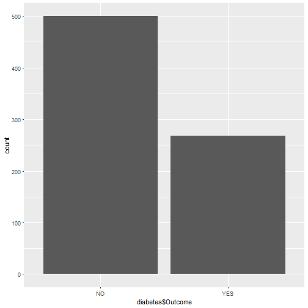
library(corrplot)
diabetes1<- read.csv("C:/Users/Madan/Documents/diabetes1.csv",header=TRUE, stringsAsFactors = TRUE)
corplot=cor(diabetes1)
corplot1=corrplot(corplot,order="hclust",method="number")
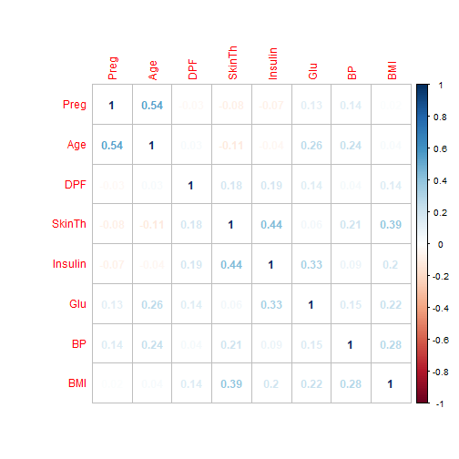
scatter1=xyplot(diabetes$Age ~ diabetes$Pregnancies, groups=diabetes$Outcome, data = diabetes,auto.key = list(corner = c(0, .98)), cex = .75)
scatter1 ##age vs preg
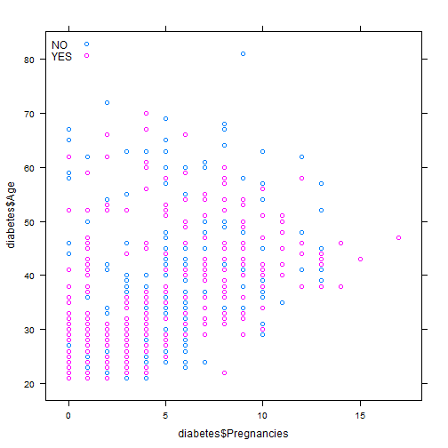
d <- ggplot(diabetes, aes(Pregnancies,Age))
d + geom_hex()
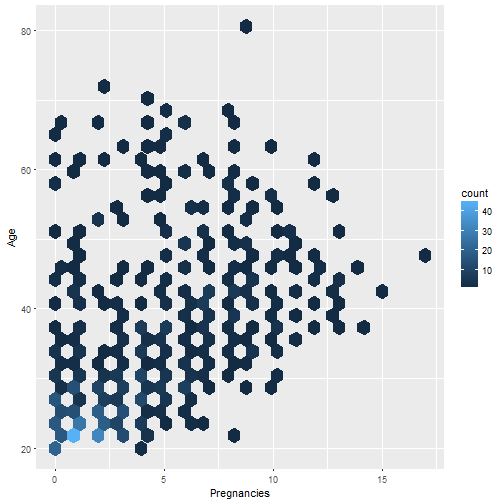
scatter2=xyplot(diabetes$SkinThickness ~ diabetes$Insulin, groups=diabetes$Outcome, data = diabetes,auto.key = list(corner = c(0, .98)), cex = .75)
scatter2 ## insulin vs skinThi
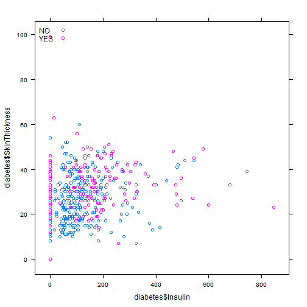
d <- ggplot(diabetes, aes(Insulin,SkinThickness))
d + geom_hex()
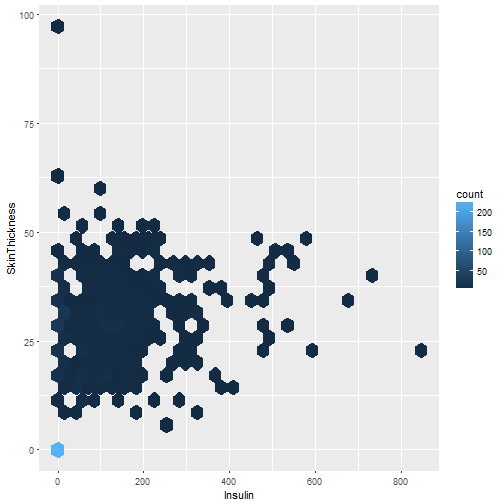
scatter3=xyplot(diabetes$BMI ~ diabetes$SkinThickness, groups=diabetes$Outcome, data = diabetes,auto.key = list(corner = c(0, .98)), cex = .75)
scatter3 ## BMI vs skinthi
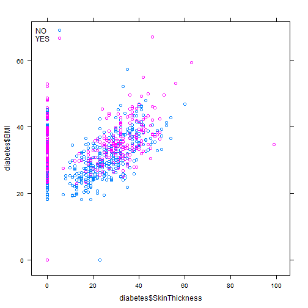
d <- ggplot(diabetes, aes(SkinThickness,BMI))
d + geom_hex()
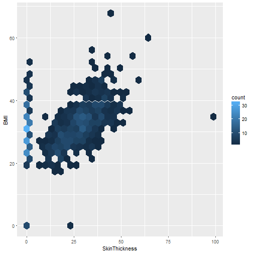
scatter4=xyplot(diabetes$Glucose ~ diabetes$Insulin, groups=diabetes$Outcome, data = diabetes,auto.key = list(corner = c(0, .98)), cex = .75)
scatter4 ## gluco vs insu
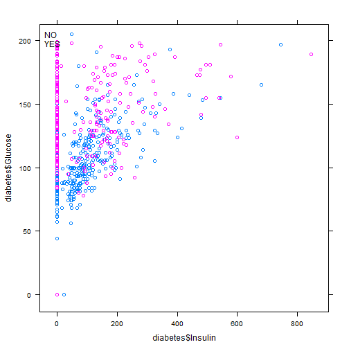
d <- ggplot(diabetes, aes(Insulin,Glucose))
d + geom_hex()
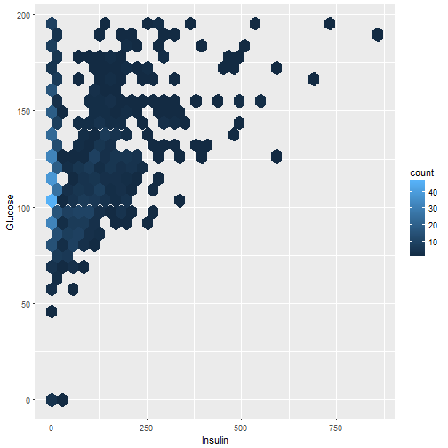
scatter5=xyplot(diabetes$Age ~ diabetes$Glucose, groups=diabetes$Outcome, data = diabetes,auto.key = list(corner = c(0, .98)), cex = .75)
scatter5 ## age vs glucose
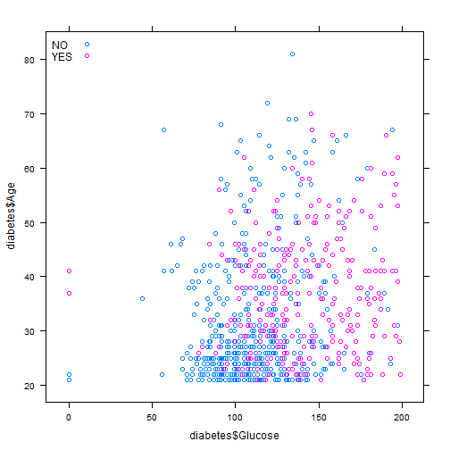
d <- ggplot(diabetes, aes(Glucose,Age))
d + geom_hex()
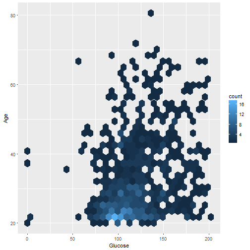
hist(diabetes$Age,col = "pink", freq = TRUE)
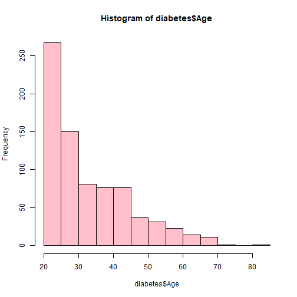
hist(diabetes$BMI,col = "pink", freq = TRUE)
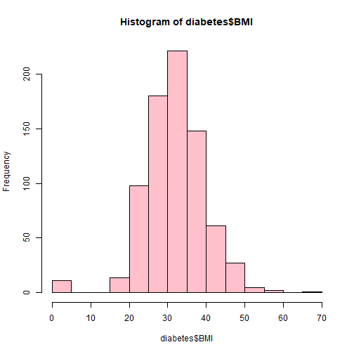
hist(diabetes$Glucose,col = "pink", freq = TRUE)
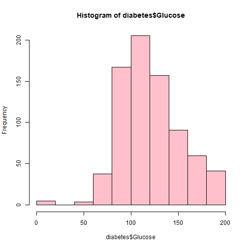
hist(diabetes$BloodPressure,col = "pink", freq = TRUE)
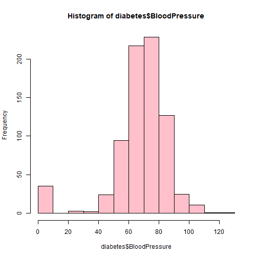
boxplot(Glucose~Outcome, data=diabetes)
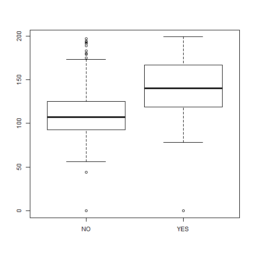
boxplot(Age~Outcome, data=diabetes)
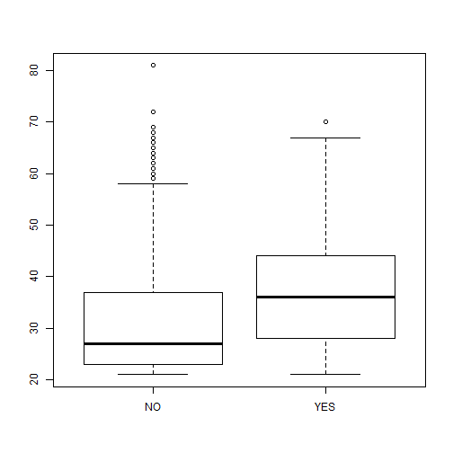
boxplot(BMI~Outcome, data=diabetes)
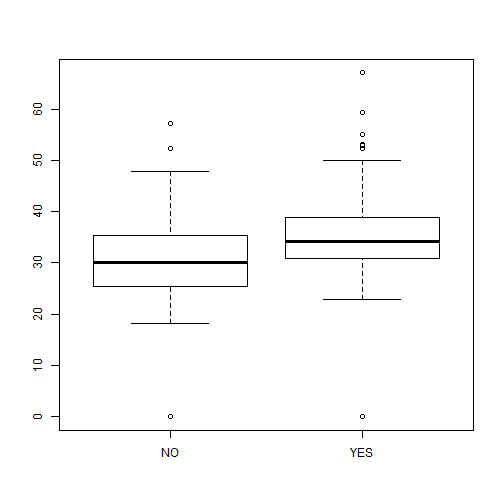
boxplot(BloodPressure~Outcome, data=diabetes)
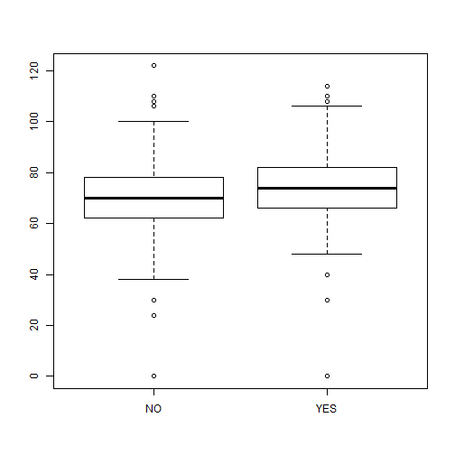
plot7={layout(matrix(c(1,2),2,1, byrow=TRUE), height = c(1,3))
par(mar=c(2, 2, 0.5, 1))
boxplot(Age~Outcome,data=diabetes,horizontal=TRUE, outline=TRUE, frame=FALSE, col = "green1")
hist(diabetes$Age, col = "blue", freq = FALSE)
lines(density(diabetes$Age), col = "red", lwd = 2)}
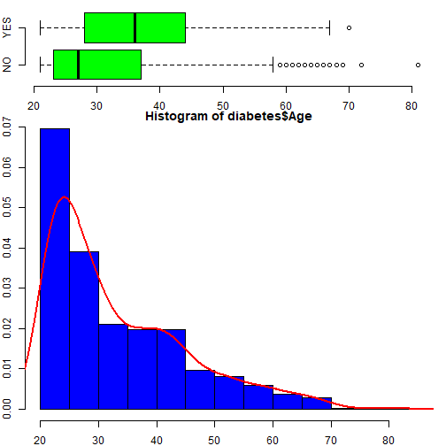
layout(matrix(c(1,2),2,1, byrow=TRUE), height = c(1,3))
par(mar=c(2, 2, 0.5, 1))
boxplot(BMI~Outcome,data=diabetes,horizontal=TRUE, outline=TRUE, frame=FALSE, col = "green1")
hist(diabetes$BMI, col = "blue", freq = FALSE)
lines(density(diabetes$BMI), col = "red", lwd = 2)
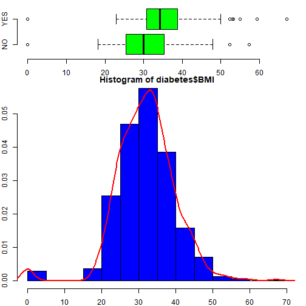
layout(matrix(c(1,2),2,1, byrow=TRUE), height = c(1,3))
par(mar=c(2, 2, 0.5, 1))
boxplot(BloodPressure~Outcome,data=diabetes,horizontal=TRUE, outline=TRUE, frame=FALSE, col = "green1")
hist(diabetes$BloodPressure, col = "blue", freq = FALSE)
lines(density(diabetes$BloodPressure), col = "red", lwd = 2)
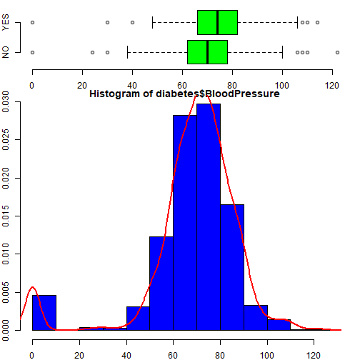
plot7={layout(matrix(c(1,2),2,1, byrow=TRUE), height = c(1,3))
par(mar=c(2, 2, 0.5, 1))
boxplot(Glucose~Outcome,data=diabetes,horizontal=TRUE, outline=TRUE, frame=FALSE, col = "green1")
hist(diabetes$Glucose, col = "blue", freq = FALSE)
lines(density(diabetes$Glucose), col = "red", lwd = 2)}
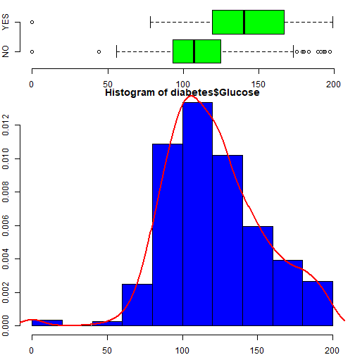
bar_plt <- ggplot(diabetes, aes(x =Age, fill=Outcome))
bar_plt <- bar_plt + geom_bar()
bar_plt
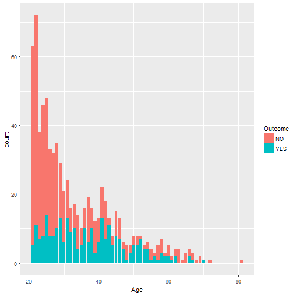
bar_plt <- ggplot(diabetes, aes(x =Glucose, fill=Outcome))
bar_plt <- bar_plt + geom_bar()
bar_plt
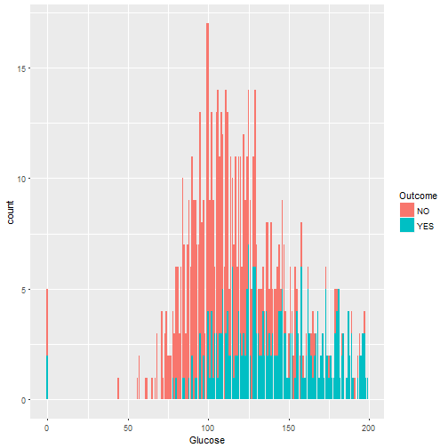
bar_plt <- ggplot(diabetes, aes(x =BloodPressure, fill=Outcome))
bar_plt <- bar_plt + geom_bar()
bar_plt
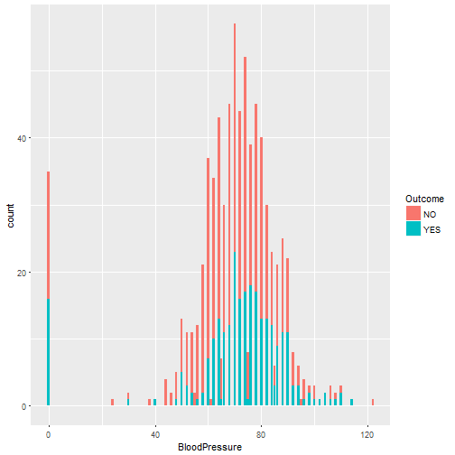
bar_plt <- ggplot(diabetes, aes(x =BMI, fill=Outcome))
bar_plt <- bar_plt + geom_bar()
bar_plt
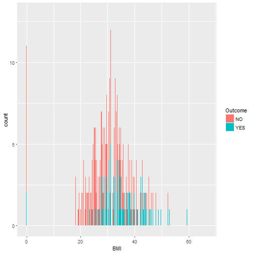
rawdata=read.csv("C:/Users/Madan/Documents/diabetes.csv",header=TRUE, stringsAsFactors = TRUE)
rawdata$Outcome <- as.factor(rawdata$Outcome)
set.seed(19910104)
Train <- createDataPartition(rawdata$Outcome, p=0.7, list=FALSE)
nrow(rawdata)
## [1] 768
training <- rawdata[ Train, ]
nrow(training)
## [1] 538
testing <- rawdata[ -Train, ]
nrow(testing)
## [1] 230
mod_gbm <- train(Outcome ~ . , data=training, method="gbm")
## Warning: package 'gbm' was built under R version 3.4.2
## Loading required package: survival
##
## Attaching package: 'survival'
## The following object is masked _by_ '.GlobalEnv':
##
## lung
## The following object is masked from 'package:caret':
##
## cluster
## Loading required package: splines
## Loading required package: parallel
## Loaded gbm 2.1.3
## Iter TrainDeviance ValidDeviance StepSize Improve
## 1 1.2695 nan 0.1000 0.0152
## 2 1.2453 nan 0.1000 0.0101
## 3 1.2157 nan 0.1000 0.0120
## 4 1.1950 nan 0.1000 0.0098
## 5 1.1731 nan 0.1000 0.0082
## 6 1.1545 nan 0.1000 0.0074
## 7 1.1406 nan 0.1000 0.0068
## 8 1.1274 nan 0.1000 0.0053
## 9 1.1163 nan 0.1000 0.0042
## 10 1.1018 nan 0.1000 0.0069
## 20 1.0056 nan 0.1000 0.0029
## 40 0.9107 nan 0.1000 0.0006
## 60 0.8570 nan 0.1000 -0.0021
## 80 0.8195 nan 0.1000 -0.0002
## 100 0.7967 nan 0.1000 -0.0017
## 120 0.7736 nan 0.1000 -0.0018
## 140 0.7541 nan 0.1000 -0.0004
## 150 0.7444 nan 0.1000 -0.0013
##
## Iter TrainDeviance ValidDeviance StepSize Improve
## 1 1.2641 nan 0.1000 0.0155
## 2 1.2230 nan 0.1000 0.0194
## 3 1.1927 nan 0.1000 0.0136
## 4 1.1634 nan 0.1000 0.0130
## 5 1.1403 nan 0.1000 0.0110
## 6 1.1104 nan 0.1000 0.0121
## 7 1.0904 nan 0.1000 0.0052
## 8 1.0733 nan 0.1000 0.0045
## 9 1.0547 nan 0.1000 0.0056
## 10 1.0368 nan 0.1000 0.0063
## 20 0.9162 nan 0.1000 0.0034
## 40 0.7991 nan 0.1000 -0.0008
## 60 0.7348 nan 0.1000 -0.0006
## 80 0.6843 nan 0.1000 -0.0020
## 100 0.6462 nan 0.1000 0.0008
## 120 0.6110 nan 0.1000 -0.0010
## 140 0.5832 nan 0.1000 -0.0014
## 150 0.5687 nan 0.1000 -0.0005
##
## Iter TrainDeviance ValidDeviance StepSize Improve
## 1 1.2544 nan 0.1000 0.0195
## 2 1.2114 nan 0.1000 0.0177
## 3 1.1690 nan 0.1000 0.0199
## 4 1.1298 nan 0.1000 0.0132
## 5 1.0954 nan 0.1000 0.0121
## 6 1.0700 nan 0.1000 0.0094
## 7 1.0434 nan 0.1000 0.0085
## 8 1.0205 nan 0.1000 0.0068
## 9 0.9976 nan 0.1000 0.0082
## 10 0.9797 nan 0.1000 0.0035
## 20 0.8556 nan 0.1000 0.0029
## 40 0.7206 nan 0.1000 -0.0010
## 60 0.6223 nan 0.1000 -0.0012
## 80 0.5646 nan 0.1000 -0.0011
## 100 0.5157 nan 0.1000 -0.0002
## 120 0.4728 nan 0.1000 -0.0002
## 140 0.4346 nan 0.1000 -0.0018
## 150 0.4152 nan 0.1000 -0.0001
##
## Iter TrainDeviance ValidDeviance StepSize Improve
## 1 1.3028 nan 0.1000 0.0203
## 2 1.2690 nan 0.1000 0.0180
## 3 1.2416 nan 0.1000 0.0134
## 4 1.2142 nan 0.1000 0.0136
## 5 1.1893 nan 0.1000 0.0101
## 6 1.1669 nan 0.1000 0.0085
## 7 1.1479 nan 0.1000 0.0094
## 8 1.1308 nan 0.1000 0.0057
## 9 1.1133 nan 0.1000 0.0078
## 10 1.0943 nan 0.1000 0.0078
## 20 0.9708 nan 0.1000 0.0029
## 40 0.8527 nan 0.1000 0.0019
## 60 0.7894 nan 0.1000 0.0007
## 80 0.7529 nan 0.1000 -0.0007
## 100 0.7280 nan 0.1000 -0.0002
## 120 0.7059 nan 0.1000 -0.0018
## 140 0.6878 nan 0.1000 -0.0025
## 150 0.6801 nan 0.1000 -0.0002
##
## Iter TrainDeviance ValidDeviance StepSize Improve
## 1 1.2924 nan 0.1000 0.0263
## 2 1.2388 nan 0.1000 0.0236
## 3 1.1942 nan 0.1000 0.0225
## 4 1.1515 nan 0.1000 0.0198
## 5 1.1126 nan 0.1000 0.0144
## 6 1.0818 nan 0.1000 0.0135
## 7 1.0541 nan 0.1000 0.0071
## 8 1.0269 nan 0.1000 0.0126
## 9 1.0054 nan 0.1000 0.0076
## 10 0.9854 nan 0.1000 0.0060
## 20 0.8519 nan 0.1000 0.0021
## 40 0.7188 nan 0.1000 -0.0007
## 60 0.6517 nan 0.1000 0.0007
## 80 0.6041 nan 0.1000 -0.0020
## 100 0.5586 nan 0.1000 -0.0006
## 120 0.5255 nan 0.1000 -0.0014
## 140 0.4975 nan 0.1000 -0.0022
## 150 0.4844 nan 0.1000 -0.0016
##
## Iter TrainDeviance ValidDeviance StepSize Improve
## 1 1.2729 nan 0.1000 0.0330
## 2 1.2106 nan 0.1000 0.0318
## 3 1.1591 nan 0.1000 0.0236
## 4 1.1078 nan 0.1000 0.0219
## 5 1.0699 nan 0.1000 0.0178
## 6 1.0363 nan 0.1000 0.0160
## 7 1.0054 nan 0.1000 0.0133
## 8 0.9741 nan 0.1000 0.0119
## 9 0.9542 nan 0.1000 0.0062
## 10 0.9260 nan 0.1000 0.0085
## 20 0.7772 nan 0.1000 0.0024
## 40 0.6339 nan 0.1000 -0.0001
## 60 0.5552 nan 0.1000 0.0008
## 80 0.5004 nan 0.1000 -0.0001
## 100 0.4502 nan 0.1000 -0.0008
## 120 0.4070 nan 0.1000 -0.0002
## 140 0.3719 nan 0.1000 0.0000
## 150 0.3562 nan 0.1000 -0.0009
##
## Iter TrainDeviance ValidDeviance StepSize Improve
## 1 1.2500 nan 0.1000 0.0177
## 2 1.2234 nan 0.1000 0.0104
## 3 1.1954 nan 0.1000 0.0105
## 4 1.1739 nan 0.1000 0.0122
## 5 1.1516 nan 0.1000 0.0078
## 6 1.1370 nan 0.1000 0.0046
## 7 1.1181 nan 0.1000 0.0064
## 8 1.1001 nan 0.1000 0.0071
## 9 1.0871 nan 0.1000 0.0061
## 10 1.0773 nan 0.1000 0.0045
## 20 0.9928 nan 0.1000 0.0031
## 40 0.9164 nan 0.1000 0.0010
## 60 0.8719 nan 0.1000 0.0005
## 80 0.8362 nan 0.1000 -0.0008
## 100 0.8103 nan 0.1000 -0.0007
## 120 0.7899 nan 0.1000 -0.0001
## 140 0.7685 nan 0.1000 -0.0008
## 150 0.7595 nan 0.1000 -0.0015
##
## Iter TrainDeviance ValidDeviance StepSize Improve
## 1 1.2418 nan 0.1000 0.0212
## 2 1.2033 nan 0.1000 0.0173
## 3 1.1660 nan 0.1000 0.0157
## 4 1.1384 nan 0.1000 0.0126
## 5 1.1148 nan 0.1000 0.0106
## 6 1.0890 nan 0.1000 0.0118
## 7 1.0659 nan 0.1000 0.0051
## 8 1.0498 nan 0.1000 0.0053
## 9 1.0327 nan 0.1000 0.0045
## 10 1.0175 nan 0.1000 0.0048
## 20 0.9085 nan 0.1000 0.0019
## 40 0.8133 nan 0.1000 -0.0025
## 60 0.7374 nan 0.1000 -0.0014
## 80 0.6825 nan 0.1000 -0.0025
## 100 0.6315 nan 0.1000 -0.0010
## 120 0.5886 nan 0.1000 0.0002
## 140 0.5551 nan 0.1000 -0.0014
## 150 0.5419 nan 0.1000 -0.0017
##
## Iter TrainDeviance ValidDeviance StepSize Improve
## 1 1.2396 nan 0.1000 0.0208
## 2 1.1967 nan 0.1000 0.0154
## 3 1.1519 nan 0.1000 0.0173
## 4 1.1190 nan 0.1000 0.0113
## 5 1.0903 nan 0.1000 0.0119
## 6 1.0596 nan 0.1000 0.0128
## 7 1.0328 nan 0.1000 0.0085
## 8 1.0112 nan 0.1000 0.0065
## 9 0.9935 nan 0.1000 0.0063
## 10 0.9789 nan 0.1000 0.0054
## 20 0.8615 nan 0.1000 0.0010
## 40 0.7310 nan 0.1000 0.0007
## 60 0.6396 nan 0.1000 -0.0015
## 80 0.5678 nan 0.1000 -0.0007
## 100 0.5093 nan 0.1000 -0.0019
## 120 0.4655 nan 0.1000 -0.0007
## 140 0.4255 nan 0.1000 -0.0004
## 150 0.4092 nan 0.1000 -0.0003
##
## Iter TrainDeviance ValidDeviance StepSize Improve
## 1 1.2704 nan 0.1000 0.0190
## 2 1.2388 nan 0.1000 0.0141
## 3 1.2138 nan 0.1000 0.0102
## 4 1.1830 nan 0.1000 0.0123
## 5 1.1565 nan 0.1000 0.0121
## 6 1.1294 nan 0.1000 0.0102
## 7 1.1094 nan 0.1000 0.0099
## 8 1.0911 nan 0.1000 0.0088
## 9 1.0753 nan 0.1000 0.0079
## 10 1.0601 nan 0.1000 0.0061
## 20 0.9571 nan 0.1000 0.0025
## 40 0.8633 nan 0.1000 -0.0001
## 60 0.8093 nan 0.1000 0.0002
## 80 0.7741 nan 0.1000 -0.0007
## 100 0.7398 nan 0.1000 -0.0011
## 120 0.7217 nan 0.1000 -0.0006
## 140 0.7026 nan 0.1000 0.0000
## 150 0.6944 nan 0.1000 -0.0007
##
## Iter TrainDeviance ValidDeviance StepSize Improve
## 1 1.2608 nan 0.1000 0.0212
## 2 1.2213 nan 0.1000 0.0167
## 3 1.1724 nan 0.1000 0.0204
## 4 1.1327 nan 0.1000 0.0198
## 5 1.1016 nan 0.1000 0.0146
## 6 1.0681 nan 0.1000 0.0168
## 7 1.0422 nan 0.1000 0.0069
## 8 1.0160 nan 0.1000 0.0110
## 9 0.9913 nan 0.1000 0.0092
## 10 0.9699 nan 0.1000 0.0071
## 20 0.8629 nan 0.1000 0.0011
## 40 0.7500 nan 0.1000 -0.0013
## 60 0.6804 nan 0.1000 0.0002
## 80 0.6247 nan 0.1000 -0.0009
## 100 0.5906 nan 0.1000 -0.0022
## 120 0.5576 nan 0.1000 -0.0012
## 140 0.5259 nan 0.1000 -0.0020
## 150 0.5135 nan 0.1000 -0.0019
##
## Iter TrainDeviance ValidDeviance StepSize Improve
## 1 1.2402 nan 0.1000 0.0301
## 2 1.1804 nan 0.1000 0.0225
## 3 1.1409 nan 0.1000 0.0167
## 4 1.0978 nan 0.1000 0.0174
## 5 1.0659 nan 0.1000 0.0157
## 6 1.0411 nan 0.1000 0.0076
## 7 1.0134 nan 0.1000 0.0114
## 8 0.9923 nan 0.1000 0.0095
## 9 0.9676 nan 0.1000 0.0075
## 10 0.9519 nan 0.1000 0.0058
## 20 0.8153 nan 0.1000 0.0016
## 40 0.6818 nan 0.1000 -0.0026
## 60 0.5996 nan 0.1000 -0.0005
## 80 0.5317 nan 0.1000 -0.0028
## 100 0.4891 nan 0.1000 -0.0021
## 120 0.4443 nan 0.1000 -0.0012
## 140 0.4072 nan 0.1000 -0.0006
## 150 0.3908 nan 0.1000 -0.0009
##
## Iter TrainDeviance ValidDeviance StepSize Improve
## 1 1.2321 nan 0.1000 0.0132
## 2 1.2105 nan 0.1000 0.0109
## 3 1.1940 nan 0.1000 0.0078
## 4 1.1740 nan 0.1000 0.0068
## 5 1.1512 nan 0.1000 0.0046
## 6 1.1344 nan 0.1000 0.0074
## 7 1.1187 nan 0.1000 0.0063
## 8 1.1031 nan 0.1000 0.0064
## 9 1.0907 nan 0.1000 0.0049
## 10 1.0796 nan 0.1000 0.0036
## 20 0.9985 nan 0.1000 0.0030
## 40 0.9165 nan 0.1000 -0.0003
## 60 0.8686 nan 0.1000 0.0007
## 80 0.8412 nan 0.1000 -0.0014
## 100 0.8153 nan 0.1000 -0.0006
## 120 0.7921 nan 0.1000 0.0002
## 140 0.7742 nan 0.1000 -0.0010
## 150 0.7633 nan 0.1000 -0.0006
##
## Iter TrainDeviance ValidDeviance StepSize Improve
## 1 1.2289 nan 0.1000 0.0152
## 2 1.2006 nan 0.1000 0.0122
## 3 1.1649 nan 0.1000 0.0137
## 4 1.1378 nan 0.1000 0.0117
## 5 1.1163 nan 0.1000 0.0088
## 6 1.0951 nan 0.1000 0.0079
## 7 1.0703 nan 0.1000 0.0092
## 8 1.0529 nan 0.1000 0.0068
## 9 1.0340 nan 0.1000 0.0047
## 10 1.0182 nan 0.1000 0.0066
## 20 0.9284 nan 0.1000 0.0025
## 40 0.8146 nan 0.1000 0.0006
## 60 0.7447 nan 0.1000 0.0008
## 80 0.6919 nan 0.1000 -0.0005
## 100 0.6510 nan 0.1000 -0.0021
## 120 0.6129 nan 0.1000 -0.0009
## 140 0.5788 nan 0.1000 -0.0004
## 150 0.5643 nan 0.1000 -0.0009
##
## Iter TrainDeviance ValidDeviance StepSize Improve
## 1 1.2140 nan 0.1000 0.0185
## 2 1.1685 nan 0.1000 0.0206
## 3 1.1292 nan 0.1000 0.0164
## 4 1.0987 nan 0.1000 0.0097
## 5 1.0799 nan 0.1000 0.0066
## 6 1.0583 nan 0.1000 0.0070
## 7 1.0328 nan 0.1000 0.0063
## 8 1.0127 nan 0.1000 0.0054
## 9 0.9930 nan 0.1000 0.0082
## 10 0.9741 nan 0.1000 0.0058
## 20 0.8700 nan 0.1000 0.0004
## 40 0.7290 nan 0.1000 0.0000
## 60 0.6495 nan 0.1000 0.0007
## 80 0.5806 nan 0.1000 -0.0011
## 100 0.5262 nan 0.1000 -0.0010
## 120 0.4817 nan 0.1000 -0.0010
## 140 0.4396 nan 0.1000 -0.0024
## 150 0.4193 nan 0.1000 -0.0010
##
## Iter TrainDeviance ValidDeviance StepSize Improve
## 1 1.3068 nan 0.1000 0.0118
## 2 1.2763 nan 0.1000 0.0114
## 3 1.2527 nan 0.1000 0.0098
## 4 1.2316 nan 0.1000 0.0073
## 5 1.2127 nan 0.1000 0.0078
## 6 1.1938 nan 0.1000 0.0078
## 7 1.1787 nan 0.1000 0.0057
## 8 1.1636 nan 0.1000 0.0058
## 9 1.1496 nan 0.1000 0.0060
## 10 1.1344 nan 0.1000 0.0079
## 20 1.0350 nan 0.1000 0.0033
## 40 0.9247 nan 0.1000 0.0001
## 60 0.8646 nan 0.1000 0.0001
## 80 0.8225 nan 0.1000 -0.0010
## 100 0.7953 nan 0.1000 -0.0004
## 120 0.7725 nan 0.1000 -0.0007
## 140 0.7542 nan 0.1000 -0.0011
## 150 0.7474 nan 0.1000 -0.0005
##
## Iter TrainDeviance ValidDeviance StepSize Improve
## 1 1.2890 nan 0.1000 0.0195
## 2 1.2553 nan 0.1000 0.0166
## 3 1.2223 nan 0.1000 0.0158
## 4 1.1943 nan 0.1000 0.0134
## 5 1.1709 nan 0.1000 0.0071
## 6 1.1498 nan 0.1000 0.0098
## 7 1.1285 nan 0.1000 0.0051
## 8 1.1086 nan 0.1000 0.0073
## 9 1.0893 nan 0.1000 0.0047
## 10 1.0698 nan 0.1000 0.0080
## 20 0.9386 nan 0.1000 0.0004
## 40 0.8102 nan 0.1000 -0.0011
## 60 0.7356 nan 0.1000 -0.0018
## 80 0.6791 nan 0.1000 -0.0018
## 100 0.6374 nan 0.1000 0.0001
## 120 0.6001 nan 0.1000 -0.0013
## 140 0.5694 nan 0.1000 -0.0003
## 150 0.5538 nan 0.1000 -0.0012
##
## Iter TrainDeviance ValidDeviance StepSize Improve
## 1 1.2849 nan 0.1000 0.0207
## 2 1.2355 nan 0.1000 0.0205
## 3 1.1933 nan 0.1000 0.0184
## 4 1.1564 nan 0.1000 0.0157
## 5 1.1256 nan 0.1000 0.0094
## 6 1.1006 nan 0.1000 0.0087
## 7 1.0755 nan 0.1000 0.0069
## 8 1.0521 nan 0.1000 0.0099
## 9 1.0308 nan 0.1000 0.0083
## 10 1.0093 nan 0.1000 0.0074
## 20 0.8701 nan 0.1000 0.0020
## 40 0.7296 nan 0.1000 0.0011
## 60 0.6437 nan 0.1000 -0.0012
## 80 0.5766 nan 0.1000 -0.0010
## 100 0.5271 nan 0.1000 -0.0005
## 120 0.4806 nan 0.1000 0.0002
## 140 0.4407 nan 0.1000 -0.0006
## 150 0.4246 nan 0.1000 -0.0012
##
## Iter TrainDeviance ValidDeviance StepSize Improve
## 1 1.2130 nan 0.1000 0.0241
## 2 1.1766 nan 0.1000 0.0179
## 3 1.1441 nan 0.1000 0.0160
## 4 1.1195 nan 0.1000 0.0125
## 5 1.0962 nan 0.1000 0.0084
## 6 1.0736 nan 0.1000 0.0099
## 7 1.0568 nan 0.1000 0.0101
## 8 1.0402 nan 0.1000 0.0062
## 9 1.0248 nan 0.1000 0.0060
## 10 1.0135 nan 0.1000 0.0053
## 20 0.9110 nan 0.1000 0.0016
## 40 0.8085 nan 0.1000 0.0007
## 60 0.7571 nan 0.1000 -0.0008
## 80 0.7254 nan 0.1000 -0.0006
## 100 0.7029 nan 0.1000 -0.0000
## 120 0.6843 nan 0.1000 -0.0001
## 140 0.6708 nan 0.1000 -0.0015
## 150 0.6652 nan 0.1000 -0.0011
##
## Iter TrainDeviance ValidDeviance StepSize Improve
## 1 1.2018 nan 0.1000 0.0301
## 2 1.1517 nan 0.1000 0.0227
## 3 1.1128 nan 0.1000 0.0180
## 4 1.0784 nan 0.1000 0.0170
## 5 1.0494 nan 0.1000 0.0137
## 6 1.0196 nan 0.1000 0.0110
## 7 0.9961 nan 0.1000 0.0113
## 8 0.9708 nan 0.1000 0.0085
## 9 0.9536 nan 0.1000 0.0075
## 10 0.9350 nan 0.1000 0.0071
## 20 0.8182 nan 0.1000 0.0025
## 40 0.7095 nan 0.1000 -0.0008
## 60 0.6451 nan 0.1000 -0.0008
## 80 0.5976 nan 0.1000 -0.0013
## 100 0.5568 nan 0.1000 -0.0008
## 120 0.5209 nan 0.1000 -0.0018
## 140 0.4916 nan 0.1000 -0.0008
## 150 0.4776 nan 0.1000 -0.0005
##
## Iter TrainDeviance ValidDeviance StepSize Improve
## 1 1.2062 nan 0.1000 0.0271
## 2 1.1491 nan 0.1000 0.0257
## 3 1.0906 nan 0.1000 0.0256
## 4 1.0481 nan 0.1000 0.0203
## 5 1.0107 nan 0.1000 0.0160
## 6 0.9802 nan 0.1000 0.0111
## 7 0.9576 nan 0.1000 0.0091
## 8 0.9388 nan 0.1000 0.0051
## 9 0.9178 nan 0.1000 0.0061
## 10 0.8985 nan 0.1000 0.0048
## 20 0.7628 nan 0.1000 0.0003
## 40 0.6327 nan 0.1000 0.0002
## 60 0.5565 nan 0.1000 -0.0014
## 80 0.5008 nan 0.1000 -0.0009
## 100 0.4513 nan 0.1000 -0.0015
## 120 0.4029 nan 0.1000 -0.0015
## 140 0.3661 nan 0.1000 -0.0017
## 150 0.3506 nan 0.1000 -0.0008
##
## Iter TrainDeviance ValidDeviance StepSize Improve
## 1 1.2281 nan 0.1000 0.0202
## 2 1.1915 nan 0.1000 0.0141
## 3 1.1655 nan 0.1000 0.0121
## 4 1.1425 nan 0.1000 0.0098
## 5 1.1204 nan 0.1000 0.0086
## 6 1.1033 nan 0.1000 0.0067
## 7 1.0902 nan 0.1000 0.0049
## 8 1.0755 nan 0.1000 0.0061
## 9 1.0615 nan 0.1000 0.0062
## 10 1.0509 nan 0.1000 0.0020
## 20 0.9653 nan 0.1000 0.0006
## 40 0.8709 nan 0.1000 0.0003
## 60 0.8224 nan 0.1000 -0.0003
## 80 0.7875 nan 0.1000 -0.0006
## 100 0.7650 nan 0.1000 -0.0008
## 120 0.7429 nan 0.1000 -0.0008
## 140 0.7255 nan 0.1000 0.0002
## 150 0.7170 nan 0.1000 -0.0006
##
## Iter TrainDeviance ValidDeviance StepSize Improve
## 1 1.2200 nan 0.1000 0.0244
## 2 1.1803 nan 0.1000 0.0155
## 3 1.1390 nan 0.1000 0.0195
## 4 1.1071 nan 0.1000 0.0131
## 5 1.0751 nan 0.1000 0.0148
## 6 1.0490 nan 0.1000 0.0121
## 7 1.0339 nan 0.1000 0.0044
## 8 1.0144 nan 0.1000 0.0059
## 9 0.9941 nan 0.1000 0.0075
## 10 0.9765 nan 0.1000 0.0064
## 20 0.8740 nan 0.1000 0.0014
## 40 0.7658 nan 0.1000 -0.0007
## 60 0.7035 nan 0.1000 0.0008
## 80 0.6550 nan 0.1000 -0.0028
## 100 0.6126 nan 0.1000 -0.0006
## 120 0.5793 nan 0.1000 -0.0007
## 140 0.5440 nan 0.1000 -0.0005
## 150 0.5302 nan 0.1000 -0.0012
##
## Iter TrainDeviance ValidDeviance StepSize Improve
## 1 1.2082 nan 0.1000 0.0296
## 2 1.1587 nan 0.1000 0.0239
## 3 1.1149 nan 0.1000 0.0175
## 4 1.0737 nan 0.1000 0.0169
## 5 1.0431 nan 0.1000 0.0100
## 6 1.0195 nan 0.1000 0.0103
## 7 0.9953 nan 0.1000 0.0085
## 8 0.9748 nan 0.1000 0.0052
## 9 0.9568 nan 0.1000 0.0053
## 10 0.9390 nan 0.1000 0.0072
## 20 0.8192 nan 0.1000 0.0021
## 40 0.6963 nan 0.1000 -0.0013
## 60 0.6086 nan 0.1000 -0.0007
## 80 0.5387 nan 0.1000 -0.0018
## 100 0.4859 nan 0.1000 -0.0013
## 120 0.4492 nan 0.1000 -0.0001
## 140 0.4097 nan 0.1000 -0.0005
## 150 0.3875 nan 0.1000 0.0008
##
## Iter TrainDeviance ValidDeviance StepSize Improve
## 1 1.2585 nan 0.1000 0.0100
## 2 1.2336 nan 0.1000 0.0094
## 3 1.2108 nan 0.1000 0.0085
## 4 1.1923 nan 0.1000 0.0075
## 5 1.1703 nan 0.1000 0.0095
## 6 1.1551 nan 0.1000 0.0077
## 7 1.1376 nan 0.1000 0.0065
## 8 1.1252 nan 0.1000 0.0048
## 9 1.1100 nan 0.1000 0.0046
## 10 1.0964 nan 0.1000 0.0034
## 20 1.0154 nan 0.1000 0.0027
## 40 0.9207 nan 0.1000 -0.0000
## 60 0.8731 nan 0.1000 0.0003
## 80 0.8368 nan 0.1000 -0.0003
## 100 0.8111 nan 0.1000 -0.0011
## 120 0.7886 nan 0.1000 -0.0006
## 140 0.7707 nan 0.1000 -0.0019
## 150 0.7606 nan 0.1000 -0.0008
##
## Iter TrainDeviance ValidDeviance StepSize Improve
## 1 1.2409 nan 0.1000 0.0164
## 2 1.2037 nan 0.1000 0.0172
## 3 1.1745 nan 0.1000 0.0099
## 4 1.1462 nan 0.1000 0.0115
## 5 1.1205 nan 0.1000 0.0100
## 6 1.0923 nan 0.1000 0.0122
## 7 1.0794 nan 0.1000 0.0022
## 8 1.0598 nan 0.1000 0.0063
## 9 1.0428 nan 0.1000 0.0040
## 10 1.0336 nan 0.1000 0.0010
## 20 0.9214 nan 0.1000 0.0019
## 40 0.8012 nan 0.1000 -0.0001
## 60 0.7339 nan 0.1000 -0.0009
## 80 0.6782 nan 0.1000 0.0001
## 100 0.6368 nan 0.1000 -0.0019
## 120 0.5988 nan 0.1000 -0.0010
## 140 0.5705 nan 0.1000 -0.0018
## 150 0.5554 nan 0.1000 -0.0009
##
## Iter TrainDeviance ValidDeviance StepSize Improve
## 1 1.2271 nan 0.1000 0.0218
## 2 1.1925 nan 0.1000 0.0128
## 3 1.1469 nan 0.1000 0.0185
## 4 1.1151 nan 0.1000 0.0106
## 5 1.0815 nan 0.1000 0.0143
## 6 1.0568 nan 0.1000 0.0111
## 7 1.0348 nan 0.1000 0.0081
## 8 1.0119 nan 0.1000 0.0063
## 9 0.9930 nan 0.1000 0.0050
## 10 0.9780 nan 0.1000 0.0055
## 20 0.8611 nan 0.1000 0.0032
## 40 0.7241 nan 0.1000 -0.0030
## 60 0.6349 nan 0.1000 -0.0012
## 80 0.5729 nan 0.1000 -0.0001
## 100 0.5211 nan 0.1000 -0.0010
## 120 0.4772 nan 0.1000 -0.0002
## 140 0.4411 nan 0.1000 -0.0021
## 150 0.4201 nan 0.1000 -0.0004
##
## Iter TrainDeviance ValidDeviance StepSize Improve
## 1 1.2716 nan 0.1000 0.0167
## 2 1.2423 nan 0.1000 0.0119
## 3 1.2207 nan 0.1000 0.0107
## 4 1.2011 nan 0.1000 0.0105
## 5 1.1888 nan 0.1000 0.0034
## 6 1.1695 nan 0.1000 0.0075
## 7 1.1566 nan 0.1000 0.0017
## 8 1.1407 nan 0.1000 0.0060
## 9 1.1232 nan 0.1000 0.0058
## 10 1.1103 nan 0.1000 0.0060
## 20 1.0166 nan 0.1000 0.0017
## 40 0.9164 nan 0.1000 -0.0003
## 60 0.8578 nan 0.1000 -0.0018
## 80 0.8255 nan 0.1000 -0.0022
## 100 0.7967 nan 0.1000 -0.0010
## 120 0.7744 nan 0.1000 -0.0001
## 140 0.7571 nan 0.1000 -0.0003
## 150 0.7496 nan 0.1000 -0.0004
##
## Iter TrainDeviance ValidDeviance StepSize Improve
## 1 1.2618 nan 0.1000 0.0222
## 2 1.2205 nan 0.1000 0.0197
## 3 1.1868 nan 0.1000 0.0149
## 4 1.1569 nan 0.1000 0.0123
## 5 1.1291 nan 0.1000 0.0105
## 6 1.1064 nan 0.1000 0.0087
## 7 1.0863 nan 0.1000 0.0083
## 8 1.0657 nan 0.1000 0.0076
## 9 1.0452 nan 0.1000 0.0077
## 10 1.0311 nan 0.1000 0.0058
## 20 0.9231 nan 0.1000 0.0012
## 40 0.8122 nan 0.1000 -0.0016
## 60 0.7375 nan 0.1000 -0.0002
## 80 0.6811 nan 0.1000 -0.0009
## 100 0.6391 nan 0.1000 -0.0007
## 120 0.6038 nan 0.1000 0.0013
## 140 0.5649 nan 0.1000 -0.0006
## 150 0.5479 nan 0.1000 -0.0010
##
## Iter TrainDeviance ValidDeviance StepSize Improve
## 1 1.2584 nan 0.1000 0.0207
## 2 1.2078 nan 0.1000 0.0208
## 3 1.1692 nan 0.1000 0.0161
## 4 1.1356 nan 0.1000 0.0125
## 5 1.1053 nan 0.1000 0.0133
## 6 1.0779 nan 0.1000 0.0089
## 7 1.0529 nan 0.1000 0.0095
## 8 1.0281 nan 0.1000 0.0097
## 9 1.0061 nan 0.1000 0.0059
## 10 0.9856 nan 0.1000 0.0084
## 20 0.8521 nan 0.1000 0.0018
## 40 0.7267 nan 0.1000 0.0002
## 60 0.6323 nan 0.1000 -0.0032
## 80 0.5604 nan 0.1000 0.0004
## 100 0.5164 nan 0.1000 -0.0013
## 120 0.4680 nan 0.1000 -0.0006
## 140 0.4315 nan 0.1000 -0.0011
## 150 0.4124 nan 0.1000 -0.0009
##
## Iter TrainDeviance ValidDeviance StepSize Improve
## 1 1.2615 nan 0.1000 0.0182
## 2 1.2326 nan 0.1000 0.0124
## 3 1.2027 nan 0.1000 0.0130
## 4 1.1753 nan 0.1000 0.0082
## 5 1.1555 nan 0.1000 0.0088
## 6 1.1407 nan 0.1000 0.0047
## 7 1.1221 nan 0.1000 0.0071
## 8 1.1014 nan 0.1000 0.0082
## 9 1.0837 nan 0.1000 0.0054
## 10 1.0720 nan 0.1000 0.0049
## 20 0.9628 nan 0.1000 0.0019
## 40 0.8571 nan 0.1000 0.0006
## 60 0.8054 nan 0.1000 -0.0011
## 80 0.7687 nan 0.1000 0.0005
## 100 0.7422 nan 0.1000 -0.0016
## 120 0.7215 nan 0.1000 0.0002
## 140 0.7010 nan 0.1000 -0.0010
## 150 0.6919 nan 0.1000 -0.0017
##
## Iter TrainDeviance ValidDeviance StepSize Improve
## 1 1.2494 nan 0.1000 0.0196
## 2 1.2076 nan 0.1000 0.0189
## 3 1.1623 nan 0.1000 0.0213
## 4 1.1292 nan 0.1000 0.0159
## 5 1.1082 nan 0.1000 0.0073
## 6 1.0795 nan 0.1000 0.0110
## 7 1.0568 nan 0.1000 0.0075
## 8 1.0331 nan 0.1000 0.0086
## 9 1.0092 nan 0.1000 0.0080
## 10 0.9908 nan 0.1000 0.0071
## 20 0.8637 nan 0.1000 0.0019
## 40 0.7503 nan 0.1000 -0.0008
## 60 0.6770 nan 0.1000 -0.0001
## 80 0.6256 nan 0.1000 -0.0004
## 100 0.5802 nan 0.1000 -0.0010
## 120 0.5459 nan 0.1000 0.0003
## 140 0.5160 nan 0.1000 0.0001
## 150 0.4996 nan 0.1000 -0.0010
##
## Iter TrainDeviance ValidDeviance StepSize Improve
## 1 1.2383 nan 0.1000 0.0253
## 2 1.1918 nan 0.1000 0.0192
## 3 1.1455 nan 0.1000 0.0198
## 4 1.1001 nan 0.1000 0.0192
## 5 1.0672 nan 0.1000 0.0137
## 6 1.0358 nan 0.1000 0.0135
## 7 1.0065 nan 0.1000 0.0137
## 8 0.9799 nan 0.1000 0.0115
## 9 0.9561 nan 0.1000 0.0081
## 10 0.9373 nan 0.1000 0.0044
## 20 0.8058 nan 0.1000 0.0004
## 40 0.6742 nan 0.1000 -0.0000
## 60 0.5937 nan 0.1000 0.0018
## 80 0.5244 nan 0.1000 0.0000
## 100 0.4781 nan 0.1000 -0.0016
## 120 0.4298 nan 0.1000 -0.0012
## 140 0.3928 nan 0.1000 -0.0014
## 150 0.3790 nan 0.1000 -0.0010
##
## Iter TrainDeviance ValidDeviance StepSize Improve
## 1 1.2480 nan 0.1000 0.0194
## 2 1.2204 nan 0.1000 0.0117
## 3 1.1935 nan 0.1000 0.0142
## 4 1.1668 nan 0.1000 0.0112
## 5 1.1455 nan 0.1000 0.0090
## 6 1.1222 nan 0.1000 0.0077
## 7 1.1054 nan 0.1000 0.0066
## 8 1.0870 nan 0.1000 0.0062
## 9 1.0773 nan 0.1000 0.0037
## 10 1.0642 nan 0.1000 0.0040
## 20 0.9720 nan 0.1000 0.0017
## 40 0.8744 nan 0.1000 -0.0003
## 60 0.8181 nan 0.1000 -0.0006
## 80 0.7816 nan 0.1000 -0.0018
## 100 0.7546 nan 0.1000 -0.0006
## 120 0.7328 nan 0.1000 -0.0004
## 140 0.7170 nan 0.1000 -0.0005
## 150 0.7096 nan 0.1000 -0.0006
##
## Iter TrainDeviance ValidDeviance StepSize Improve
## 1 1.2343 nan 0.1000 0.0243
## 2 1.1826 nan 0.1000 0.0216
## 3 1.1465 nan 0.1000 0.0167
## 4 1.1126 nan 0.1000 0.0118
## 5 1.0857 nan 0.1000 0.0113
## 6 1.0577 nan 0.1000 0.0125
## 7 1.0351 nan 0.1000 0.0080
## 8 1.0155 nan 0.1000 0.0075
## 9 0.9967 nan 0.1000 0.0067
## 10 0.9788 nan 0.1000 0.0061
## 20 0.8765 nan 0.1000 0.0016
## 40 0.7590 nan 0.1000 0.0001
## 60 0.6863 nan 0.1000 -0.0007
## 80 0.6350 nan 0.1000 -0.0006
## 100 0.5920 nan 0.1000 0.0001
## 120 0.5574 nan 0.1000 -0.0012
## 140 0.5227 nan 0.1000 0.0001
## 150 0.5099 nan 0.1000 -0.0015
##
## Iter TrainDeviance ValidDeviance StepSize Improve
## 1 1.2332 nan 0.1000 0.0268
## 2 1.1835 nan 0.1000 0.0185
## 3 1.1375 nan 0.1000 0.0217
## 4 1.1034 nan 0.1000 0.0157
## 5 1.0757 nan 0.1000 0.0113
## 6 1.0500 nan 0.1000 0.0108
## 7 1.0251 nan 0.1000 0.0094
## 8 1.0005 nan 0.1000 0.0106
## 9 0.9716 nan 0.1000 0.0112
## 10 0.9526 nan 0.1000 0.0067
## 20 0.8200 nan 0.1000 0.0029
## 40 0.6759 nan 0.1000 0.0009
## 60 0.6051 nan 0.1000 -0.0005
## 80 0.5417 nan 0.1000 -0.0011
## 100 0.4838 nan 0.1000 -0.0005
## 120 0.4402 nan 0.1000 -0.0013
## 140 0.3970 nan 0.1000 -0.0018
## 150 0.3807 nan 0.1000 -0.0007
##
## Iter TrainDeviance ValidDeviance StepSize Improve
## 1 1.2734 nan 0.1000 0.0172
## 2 1.2448 nan 0.1000 0.0118
## 3 1.2183 nan 0.1000 0.0125
## 4 1.1959 nan 0.1000 0.0091
## 5 1.1734 nan 0.1000 0.0083
## 6 1.1535 nan 0.1000 0.0087
## 7 1.1350 nan 0.1000 0.0062
## 8 1.1215 nan 0.1000 0.0050
## 9 1.1068 nan 0.1000 0.0061
## 10 1.0898 nan 0.1000 0.0065
## 20 0.9900 nan 0.1000 0.0026
## 40 0.8895 nan 0.1000 -0.0001
## 60 0.8368 nan 0.1000 -0.0007
## 80 0.7957 nan 0.1000 -0.0001
## 100 0.7702 nan 0.1000 -0.0013
## 120 0.7508 nan 0.1000 -0.0005
## 140 0.7356 nan 0.1000 -0.0014
## 150 0.7281 nan 0.1000 -0.0006
##
## Iter TrainDeviance ValidDeviance StepSize Improve
## 1 1.2647 nan 0.1000 0.0250
## 2 1.2203 nan 0.1000 0.0183
## 3 1.1880 nan 0.1000 0.0130
## 4 1.1562 nan 0.1000 0.0128
## 5 1.1315 nan 0.1000 0.0105
## 6 1.1013 nan 0.1000 0.0092
## 7 1.0750 nan 0.1000 0.0095
## 8 1.0510 nan 0.1000 0.0083
## 9 1.0320 nan 0.1000 0.0071
## 10 1.0117 nan 0.1000 0.0088
## 20 0.8932 nan 0.1000 0.0017
## 40 0.7747 nan 0.1000 -0.0009
## 60 0.7190 nan 0.1000 -0.0006
## 80 0.6671 nan 0.1000 -0.0006
## 100 0.6292 nan 0.1000 -0.0006
## 120 0.5943 nan 0.1000 -0.0012
## 140 0.5676 nan 0.1000 -0.0006
## 150 0.5528 nan 0.1000 -0.0009
##
## Iter TrainDeviance ValidDeviance StepSize Improve
## 1 1.2499 nan 0.1000 0.0261
## 2 1.2006 nan 0.1000 0.0226
## 3 1.1553 nan 0.1000 0.0176
## 4 1.1204 nan 0.1000 0.0131
## 5 1.0878 nan 0.1000 0.0140
## 6 1.0582 nan 0.1000 0.0113
## 7 1.0313 nan 0.1000 0.0100
## 8 1.0039 nan 0.1000 0.0100
## 9 0.9802 nan 0.1000 0.0103
## 10 0.9589 nan 0.1000 0.0062
## 20 0.8282 nan 0.1000 0.0014
## 40 0.7019 nan 0.1000 0.0006
## 60 0.6287 nan 0.1000 -0.0003
## 80 0.5549 nan 0.1000 -0.0012
## 100 0.5039 nan 0.1000 -0.0012
## 120 0.4549 nan 0.1000 -0.0004
## 140 0.4201 nan 0.1000 -0.0017
## 150 0.3996 nan 0.1000 -0.0023
##
## Iter TrainDeviance ValidDeviance StepSize Improve
## 1 1.2362 nan 0.1000 0.0177
## 2 1.2087 nan 0.1000 0.0108
## 3 1.1822 nan 0.1000 0.0101
## 4 1.1599 nan 0.1000 0.0098
## 5 1.1441 nan 0.1000 0.0042
## 6 1.1183 nan 0.1000 0.0105
## 7 1.0989 nan 0.1000 0.0082
## 8 1.0813 nan 0.1000 0.0077
## 9 1.0663 nan 0.1000 0.0061
## 10 1.0475 nan 0.1000 0.0057
## 20 0.9572 nan 0.1000 0.0012
## 40 0.8603 nan 0.1000 -0.0006
## 60 0.8090 nan 0.1000 -0.0005
## 80 0.7749 nan 0.1000 -0.0014
## 100 0.7479 nan 0.1000 -0.0004
## 120 0.7254 nan 0.1000 -0.0008
## 140 0.7057 nan 0.1000 -0.0017
## 150 0.6958 nan 0.1000 -0.0005
##
## Iter TrainDeviance ValidDeviance StepSize Improve
## 1 1.2183 nan 0.1000 0.0292
## 2 1.1681 nan 0.1000 0.0214
## 3 1.1317 nan 0.1000 0.0147
## 4 1.0961 nan 0.1000 0.0141
## 5 1.0650 nan 0.1000 0.0113
## 6 1.0446 nan 0.1000 0.0069
## 7 1.0215 nan 0.1000 0.0096
## 8 0.9979 nan 0.1000 0.0077
## 9 0.9847 nan 0.1000 0.0041
## 10 0.9643 nan 0.1000 0.0069
## 20 0.8583 nan 0.1000 0.0009
## 40 0.7468 nan 0.1000 0.0017
## 60 0.6680 nan 0.1000 -0.0010
## 80 0.6149 nan 0.1000 -0.0001
## 100 0.5674 nan 0.1000 0.0007
## 120 0.5320 nan 0.1000 -0.0006
## 140 0.4930 nan 0.1000 -0.0001
## 150 0.4775 nan 0.1000 -0.0006
##
## Iter TrainDeviance ValidDeviance StepSize Improve
## 1 1.2104 nan 0.1000 0.0288
## 2 1.1567 nan 0.1000 0.0195
## 3 1.1200 nan 0.1000 0.0169
## 4 1.0783 nan 0.1000 0.0126
## 5 1.0469 nan 0.1000 0.0147
## 6 1.0216 nan 0.1000 0.0097
## 7 0.9970 nan 0.1000 0.0114
## 8 0.9780 nan 0.1000 0.0071
## 9 0.9534 nan 0.1000 0.0087
## 10 0.9347 nan 0.1000 0.0053
## 20 0.7964 nan 0.1000 0.0022
## 40 0.6555 nan 0.1000 0.0010
## 60 0.5652 nan 0.1000 -0.0004
## 80 0.4952 nan 0.1000 -0.0004
## 100 0.4443 nan 0.1000 -0.0008
## 120 0.3994 nan 0.1000 -0.0022
## 140 0.3663 nan 0.1000 -0.0004
## 150 0.3471 nan 0.1000 -0.0013
##
## Iter TrainDeviance ValidDeviance StepSize Improve
## 1 1.1907 nan 0.1000 0.0162
## 2 1.1551 nan 0.1000 0.0154
## 3 1.1330 nan 0.1000 0.0103
## 4 1.1142 nan 0.1000 0.0070
## 5 1.0954 nan 0.1000 0.0079
## 6 1.0802 nan 0.1000 0.0072
## 7 1.0656 nan 0.1000 0.0069
## 8 1.0518 nan 0.1000 0.0031
## 9 1.0387 nan 0.1000 0.0039
## 10 1.0304 nan 0.1000 0.0033
## 20 0.9542 nan 0.1000 0.0021
## 40 0.8803 nan 0.1000 -0.0003
## 60 0.8343 nan 0.1000 -0.0004
## 80 0.7971 nan 0.1000 -0.0012
## 100 0.7729 nan 0.1000 -0.0027
## 120 0.7466 nan 0.1000 -0.0008
## 140 0.7280 nan 0.1000 -0.0001
## 150 0.7192 nan 0.1000 -0.0006
##
## Iter TrainDeviance ValidDeviance StepSize Improve
## 1 1.1806 nan 0.1000 0.0182
## 2 1.1459 nan 0.1000 0.0189
## 3 1.1146 nan 0.1000 0.0118
## 4 1.0879 nan 0.1000 0.0121
## 5 1.0637 nan 0.1000 0.0110
## 6 1.0420 nan 0.1000 0.0089
## 7 1.0238 nan 0.1000 0.0062
## 8 1.0043 nan 0.1000 0.0072
## 9 0.9845 nan 0.1000 0.0071
## 10 0.9711 nan 0.1000 0.0036
## 20 0.8655 nan 0.1000 0.0021
## 40 0.7696 nan 0.1000 -0.0003
## 60 0.6987 nan 0.1000 -0.0002
## 80 0.6426 nan 0.1000 -0.0012
## 100 0.5974 nan 0.1000 -0.0004
## 120 0.5557 nan 0.1000 0.0002
## 140 0.5269 nan 0.1000 -0.0005
## 150 0.5094 nan 0.1000 -0.0012
##
## Iter TrainDeviance ValidDeviance StepSize Improve
## 1 1.1761 nan 0.1000 0.0180
## 2 1.1309 nan 0.1000 0.0187
## 3 1.0914 nan 0.1000 0.0159
## 4 1.0589 nan 0.1000 0.0144
## 5 1.0235 nan 0.1000 0.0131
## 6 0.9991 nan 0.1000 0.0086
## 7 0.9823 nan 0.1000 0.0048
## 8 0.9607 nan 0.1000 0.0077
## 9 0.9422 nan 0.1000 0.0046
## 10 0.9258 nan 0.1000 0.0036
## 20 0.8110 nan 0.1000 0.0014
## 40 0.6810 nan 0.1000 -0.0001
## 60 0.5911 nan 0.1000 -0.0011
## 80 0.5225 nan 0.1000 -0.0001
## 100 0.4716 nan 0.1000 -0.0021
## 120 0.4260 nan 0.1000 0.0002
## 140 0.3788 nan 0.1000 -0.0012
## 150 0.3607 nan 0.1000 -0.0009
##
## Iter TrainDeviance ValidDeviance StepSize Improve
## 1 1.2663 nan 0.1000 0.0198
## 2 1.2310 nan 0.1000 0.0168
## 3 1.2024 nan 0.1000 0.0123
## 4 1.1800 nan 0.1000 0.0077
## 5 1.1550 nan 0.1000 0.0117
## 6 1.1388 nan 0.1000 0.0042
## 7 1.1189 nan 0.1000 0.0091
## 8 1.1002 nan 0.1000 0.0078
## 9 1.0855 nan 0.1000 0.0064
## 10 1.0706 nan 0.1000 0.0068
## 20 0.9675 nan 0.1000 0.0026
## 40 0.8707 nan 0.1000 -0.0002
## 60 0.8208 nan 0.1000 -0.0005
## 80 0.7828 nan 0.1000 -0.0025
## 100 0.7536 nan 0.1000 -0.0021
## 120 0.7320 nan 0.1000 -0.0012
## 140 0.7134 nan 0.1000 -0.0009
## 150 0.7049 nan 0.1000 -0.0003
##
## Iter TrainDeviance ValidDeviance StepSize Improve
## 1 1.2473 nan 0.1000 0.0282
## 2 1.2006 nan 0.1000 0.0204
## 3 1.1634 nan 0.1000 0.0149
## 4 1.1284 nan 0.1000 0.0163
## 5 1.0959 nan 0.1000 0.0111
## 6 1.0727 nan 0.1000 0.0085
## 7 1.0480 nan 0.1000 0.0090
## 8 1.0259 nan 0.1000 0.0091
## 9 1.0099 nan 0.1000 0.0052
## 10 0.9929 nan 0.1000 0.0045
## 20 0.8849 nan 0.1000 0.0020
## 40 0.7686 nan 0.1000 0.0001
## 60 0.7018 nan 0.1000 -0.0008
## 80 0.6567 nan 0.1000 -0.0011
## 100 0.6115 nan 0.1000 -0.0001
## 120 0.5750 nan 0.1000 -0.0006
## 140 0.5403 nan 0.1000 -0.0002
## 150 0.5252 nan 0.1000 -0.0001
##
## Iter TrainDeviance ValidDeviance StepSize Improve
## 1 1.2453 nan 0.1000 0.0260
## 2 1.1953 nan 0.1000 0.0225
## 3 1.1476 nan 0.1000 0.0165
## 4 1.1091 nan 0.1000 0.0173
## 5 1.0723 nan 0.1000 0.0146
## 6 1.0425 nan 0.1000 0.0145
## 7 1.0154 nan 0.1000 0.0116
## 8 0.9959 nan 0.1000 0.0063
## 9 0.9753 nan 0.1000 0.0076
## 10 0.9517 nan 0.1000 0.0103
## 20 0.8205 nan 0.1000 0.0029
## 40 0.6853 nan 0.1000 0.0006
## 60 0.6009 nan 0.1000 0.0005
## 80 0.5402 nan 0.1000 -0.0003
## 100 0.4880 nan 0.1000 -0.0016
## 120 0.4394 nan 0.1000 -0.0001
## 140 0.4056 nan 0.1000 -0.0011
## 150 0.3915 nan 0.1000 -0.0010
##
## Iter TrainDeviance ValidDeviance StepSize Improve
## 1 1.1852 nan 0.1000 0.0068
## 2 1.1648 nan 0.1000 0.0092
## 3 1.1465 nan 0.1000 0.0068
## 4 1.1336 nan 0.1000 0.0044
## 5 1.1203 nan 0.1000 0.0041
## 6 1.1057 nan 0.1000 0.0053
## 7 1.0928 nan 0.1000 0.0035
## 8 1.0790 nan 0.1000 0.0038
## 9 1.0675 nan 0.1000 0.0043
## 10 1.0584 nan 0.1000 0.0033
## 20 0.9793 nan 0.1000 0.0011
## 40 0.9010 nan 0.1000 -0.0015
## 60 0.8424 nan 0.1000 -0.0006
## 80 0.8077 nan 0.1000 0.0002
## 100 0.7797 nan 0.1000 -0.0007
## 120 0.7518 nan 0.1000 -0.0017
## 140 0.7312 nan 0.1000 -0.0017
## 150 0.7198 nan 0.1000 -0.0007
##
## Iter TrainDeviance ValidDeviance StepSize Improve
## 1 1.1643 nan 0.1000 0.0193
## 2 1.1314 nan 0.1000 0.0129
## 3 1.1016 nan 0.1000 0.0102
## 4 1.0753 nan 0.1000 0.0127
## 5 1.0546 nan 0.1000 0.0073
## 6 1.0349 nan 0.1000 0.0078
## 7 1.0172 nan 0.1000 0.0045
## 8 1.0025 nan 0.1000 0.0042
## 9 0.9863 nan 0.1000 0.0047
## 10 0.9760 nan 0.1000 0.0026
## 20 0.8725 nan 0.1000 0.0036
## 40 0.7501 nan 0.1000 -0.0006
## 60 0.6780 nan 0.1000 -0.0006
## 80 0.6234 nan 0.1000 -0.0024
## 100 0.5794 nan 0.1000 -0.0023
## 120 0.5411 nan 0.1000 0.0005
## 140 0.5078 nan 0.1000 -0.0011
## 150 0.4915 nan 0.1000 -0.0010
##
## Iter TrainDeviance ValidDeviance StepSize Improve
## 1 1.1604 nan 0.1000 0.0205
## 2 1.1204 nan 0.1000 0.0153
## 3 1.0862 nan 0.1000 0.0133
## 4 1.0498 nan 0.1000 0.0153
## 5 1.0201 nan 0.1000 0.0127
## 6 0.9986 nan 0.1000 0.0064
## 7 0.9793 nan 0.1000 0.0057
## 8 0.9589 nan 0.1000 0.0084
## 9 0.9458 nan 0.1000 0.0035
## 10 0.9318 nan 0.1000 0.0050
## 20 0.8158 nan 0.1000 -0.0015
## 40 0.6801 nan 0.1000 -0.0002
## 60 0.6008 nan 0.1000 0.0008
## 80 0.5429 nan 0.1000 -0.0013
## 100 0.4965 nan 0.1000 -0.0019
## 120 0.4480 nan 0.1000 -0.0019
## 140 0.4126 nan 0.1000 -0.0011
## 150 0.3969 nan 0.1000 -0.0012
##
## Iter TrainDeviance ValidDeviance StepSize Improve
## 1 1.2512 nan 0.1000 0.0097
## 2 1.2231 nan 0.1000 0.0123
## 3 1.2006 nan 0.1000 0.0087
## 4 1.1761 nan 0.1000 0.0106
## 5 1.1575 nan 0.1000 0.0079
## 6 1.1345 nan 0.1000 0.0103
## 7 1.1190 nan 0.1000 0.0066
## 8 1.1044 nan 0.1000 0.0043
## 9 1.0901 nan 0.1000 0.0048
## 10 1.0757 nan 0.1000 0.0052
## 20 0.9787 nan 0.1000 0.0030
## 40 0.8795 nan 0.1000 0.0010
## 60 0.8299 nan 0.1000 -0.0004
## 80 0.7947 nan 0.1000 -0.0009
## 100 0.7661 nan 0.1000 -0.0001
## 120 0.7460 nan 0.1000 -0.0009
## 140 0.7266 nan 0.1000 -0.0005
## 150 0.7154 nan 0.1000 -0.0005
##
## Iter TrainDeviance ValidDeviance StepSize Improve
## 1 1.2292 nan 0.1000 0.0206
## 2 1.1877 nan 0.1000 0.0139
## 3 1.1524 nan 0.1000 0.0151
## 4 1.1259 nan 0.1000 0.0102
## 5 1.0887 nan 0.1000 0.0113
## 6 1.0697 nan 0.1000 0.0077
## 7 1.0448 nan 0.1000 0.0081
## 8 1.0241 nan 0.1000 0.0104
## 9 1.0060 nan 0.1000 0.0061
## 10 0.9856 nan 0.1000 0.0080
## 20 0.8766 nan 0.1000 0.0021
## 40 0.7688 nan 0.1000 -0.0010
## 60 0.7010 nan 0.1000 -0.0009
## 80 0.6468 nan 0.1000 -0.0002
## 100 0.6052 nan 0.1000 -0.0006
## 120 0.5710 nan 0.1000 -0.0007
## 140 0.5358 nan 0.1000 -0.0006
## 150 0.5197 nan 0.1000 -0.0000
##
## Iter TrainDeviance ValidDeviance StepSize Improve
## 1 1.2268 nan 0.1000 0.0207
## 2 1.1726 nan 0.1000 0.0206
## 3 1.1373 nan 0.1000 0.0161
## 4 1.0961 nan 0.1000 0.0160
## 5 1.0609 nan 0.1000 0.0142
## 6 1.0291 nan 0.1000 0.0119
## 7 1.0079 nan 0.1000 0.0068
## 8 0.9902 nan 0.1000 0.0063
## 9 0.9669 nan 0.1000 0.0085
## 10 0.9446 nan 0.1000 0.0087
## 20 0.8137 nan 0.1000 0.0005
## 40 0.6757 nan 0.1000 -0.0024
## 60 0.5938 nan 0.1000 -0.0019
## 80 0.5291 nan 0.1000 -0.0001
## 100 0.4817 nan 0.1000 -0.0027
## 120 0.4346 nan 0.1000 -0.0003
## 140 0.3957 nan 0.1000 -0.0011
## 150 0.3767 nan 0.1000 -0.0016
##
## Iter TrainDeviance ValidDeviance StepSize Improve
## 1 1.2714 nan 0.1000 0.0189
## 2 1.2393 nan 0.1000 0.0145
## 3 1.2137 nan 0.1000 0.0129
## 4 1.1906 nan 0.1000 0.0122
## 5 1.1669 nan 0.1000 0.0088
## 6 1.1464 nan 0.1000 0.0027
## 7 1.1268 nan 0.1000 0.0088
## 8 1.1102 nan 0.1000 0.0065
## 9 1.0978 nan 0.1000 0.0023
## 10 1.0836 nan 0.1000 0.0053
## 20 0.9838 nan 0.1000 0.0017
## 40 0.8891 nan 0.1000 0.0005
## 60 0.8326 nan 0.1000 -0.0015
## 80 0.7983 nan 0.1000 -0.0015
## 100 0.7674 nan 0.1000 -0.0002
## 120 0.7427 nan 0.1000 -0.0001
## 140 0.7232 nan 0.1000 -0.0009
## 150 0.7132 nan 0.1000 -0.0010
##
## Iter TrainDeviance ValidDeviance StepSize Improve
## 1 1.2655 nan 0.1000 0.0199
## 2 1.2221 nan 0.1000 0.0199
## 3 1.1831 nan 0.1000 0.0150
## 4 1.1541 nan 0.1000 0.0127
## 5 1.1207 nan 0.1000 0.0111
## 6 1.0918 nan 0.1000 0.0109
## 7 1.0671 nan 0.1000 0.0096
## 8 1.0469 nan 0.1000 0.0081
## 9 1.0267 nan 0.1000 0.0053
## 10 1.0109 nan 0.1000 0.0055
## 20 0.8992 nan 0.1000 0.0000
## 40 0.7722 nan 0.1000 -0.0012
## 60 0.7050 nan 0.1000 -0.0004
## 80 0.6534 nan 0.1000 -0.0012
## 100 0.6090 nan 0.1000 -0.0001
## 120 0.5726 nan 0.1000 -0.0006
## 140 0.5444 nan 0.1000 -0.0014
## 150 0.5270 nan 0.1000 -0.0010
##
## Iter TrainDeviance ValidDeviance StepSize Improve
## 1 1.2548 nan 0.1000 0.0271
## 2 1.2048 nan 0.1000 0.0210
## 3 1.1621 nan 0.1000 0.0162
## 4 1.1268 nan 0.1000 0.0122
## 5 1.0934 nan 0.1000 0.0131
## 6 1.0684 nan 0.1000 0.0080
## 7 1.0372 nan 0.1000 0.0112
## 8 1.0119 nan 0.1000 0.0101
## 9 0.9901 nan 0.1000 0.0071
## 10 0.9688 nan 0.1000 0.0053
## 20 0.8199 nan 0.1000 0.0010
## 40 0.7004 nan 0.1000 -0.0014
## 60 0.6165 nan 0.1000 0.0010
## 80 0.5532 nan 0.1000 0.0000
## 100 0.4941 nan 0.1000 -0.0007
## 120 0.4529 nan 0.1000 -0.0016
## 140 0.4110 nan 0.1000 -0.0011
## 150 0.3919 nan 0.1000 -0.0005
##
## Iter TrainDeviance ValidDeviance StepSize Improve
## 1 1.2630 nan 0.1000 0.0181
## 2 1.2327 nan 0.1000 0.0147
## 3 1.2073 nan 0.1000 0.0107
## 4 1.1763 nan 0.1000 0.0095
## 5 1.1551 nan 0.1000 0.0112
## 6 1.1349 nan 0.1000 0.0087
## 7 1.1122 nan 0.1000 0.0104
## 8 1.0934 nan 0.1000 0.0084
## 9 1.0757 nan 0.1000 0.0091
## 10 1.0600 nan 0.1000 0.0029
## 20 0.9498 nan 0.1000 0.0039
## 40 0.8334 nan 0.1000 -0.0008
## 60 0.7801 nan 0.1000 0.0001
## 80 0.7362 nan 0.1000 -0.0008
## 100 0.7106 nan 0.1000 -0.0010
## 120 0.6845 nan 0.1000 -0.0011
## 140 0.6665 nan 0.1000 -0.0024
## 150 0.6579 nan 0.1000 -0.0005
##
## Iter TrainDeviance ValidDeviance StepSize Improve
## 1 1.2464 nan 0.1000 0.0267
## 2 1.2036 nan 0.1000 0.0198
## 3 1.1602 nan 0.1000 0.0208
## 4 1.1259 nan 0.1000 0.0149
## 5 1.0964 nan 0.1000 0.0129
## 6 1.0676 nan 0.1000 0.0097
## 7 1.0407 nan 0.1000 0.0108
## 8 1.0231 nan 0.1000 0.0066
## 9 1.0107 nan 0.1000 0.0029
## 10 0.9891 nan 0.1000 0.0087
## 20 0.8464 nan 0.1000 -0.0005
## 40 0.7267 nan 0.1000 -0.0008
## 60 0.6545 nan 0.1000 -0.0007
## 80 0.6041 nan 0.1000 -0.0008
## 100 0.5613 nan 0.1000 0.0003
## 120 0.5304 nan 0.1000 0.0001
## 140 0.5002 nan 0.1000 -0.0013
## 150 0.4855 nan 0.1000 -0.0008
##
## Iter TrainDeviance ValidDeviance StepSize Improve
## 1 1.2293 nan 0.1000 0.0323
## 2 1.1753 nan 0.1000 0.0196
## 3 1.1283 nan 0.1000 0.0185
## 4 1.0912 nan 0.1000 0.0164
## 5 1.0597 nan 0.1000 0.0117
## 6 1.0239 nan 0.1000 0.0130
## 7 0.9957 nan 0.1000 0.0106
## 8 0.9709 nan 0.1000 0.0089
## 9 0.9534 nan 0.1000 0.0052
## 10 0.9313 nan 0.1000 0.0066
## 20 0.7846 nan 0.1000 0.0021
## 40 0.6490 nan 0.1000 -0.0012
## 60 0.5729 nan 0.1000 -0.0014
## 80 0.5128 nan 0.1000 -0.0011
## 100 0.4601 nan 0.1000 -0.0000
## 120 0.4164 nan 0.1000 -0.0003
## 140 0.3815 nan 0.1000 -0.0014
## 150 0.3644 nan 0.1000 -0.0011
##
## Iter TrainDeviance ValidDeviance StepSize Improve
## 1 1.2841 nan 0.1000 0.0184
## 2 1.2501 nan 0.1000 0.0162
## 3 1.2156 nan 0.1000 0.0159
## 4 1.1913 nan 0.1000 0.0090
## 5 1.1672 nan 0.1000 0.0100
## 6 1.1491 nan 0.1000 0.0083
## 7 1.1296 nan 0.1000 0.0076
## 8 1.1140 nan 0.1000 0.0063
## 9 1.0990 nan 0.1000 0.0056
## 10 1.0866 nan 0.1000 0.0039
## 20 0.9983 nan 0.1000 0.0011
## 40 0.9064 nan 0.1000 0.0015
## 60 0.8493 nan 0.1000 0.0001
## 80 0.8104 nan 0.1000 -0.0013
## 100 0.7881 nan 0.1000 -0.0006
## 120 0.7643 nan 0.1000 -0.0008
## 140 0.7450 nan 0.1000 -0.0018
## 150 0.7355 nan 0.1000 -0.0012
##
## Iter TrainDeviance ValidDeviance StepSize Improve
## 1 1.2693 nan 0.1000 0.0276
## 2 1.2246 nan 0.1000 0.0219
## 3 1.1842 nan 0.1000 0.0165
## 4 1.1534 nan 0.1000 0.0128
## 5 1.1281 nan 0.1000 0.0121
## 6 1.1086 nan 0.1000 0.0071
## 7 1.0876 nan 0.1000 0.0083
## 8 1.0674 nan 0.1000 0.0099
## 9 1.0455 nan 0.1000 0.0067
## 10 1.0302 nan 0.1000 0.0033
## 20 0.9219 nan 0.1000 0.0023
## 40 0.7986 nan 0.1000 -0.0006
## 60 0.7315 nan 0.1000 0.0004
## 80 0.6816 nan 0.1000 -0.0021
## 100 0.6383 nan 0.1000 -0.0014
## 120 0.6053 nan 0.1000 -0.0000
## 140 0.5695 nan 0.1000 -0.0014
## 150 0.5544 nan 0.1000 -0.0015
##
## Iter TrainDeviance ValidDeviance StepSize Improve
## 1 1.2579 nan 0.1000 0.0236
## 2 1.2043 nan 0.1000 0.0204
## 3 1.1669 nan 0.1000 0.0144
## 4 1.1279 nan 0.1000 0.0178
## 5 1.1002 nan 0.1000 0.0101
## 6 1.0685 nan 0.1000 0.0116
## 7 1.0456 nan 0.1000 0.0083
## 8 1.0175 nan 0.1000 0.0102
## 9 0.9961 nan 0.1000 0.0072
## 10 0.9757 nan 0.1000 0.0078
## 20 0.8589 nan 0.1000 -0.0003
## 40 0.7142 nan 0.1000 -0.0005
## 60 0.6190 nan 0.1000 -0.0003
## 80 0.5617 nan 0.1000 -0.0008
## 100 0.5084 nan 0.1000 -0.0012
## 120 0.4636 nan 0.1000 -0.0020
## 140 0.4209 nan 0.1000 -0.0013
## 150 0.4044 nan 0.1000 -0.0003
##
## Iter TrainDeviance ValidDeviance StepSize Improve
## 1 1.2408 nan 0.1000 0.0134
## 2 1.2184 nan 0.1000 0.0106
## 3 1.1953 nan 0.1000 0.0089
## 4 1.1725 nan 0.1000 0.0089
## 5 1.1552 nan 0.1000 0.0080
## 6 1.1386 nan 0.1000 0.0072
## 7 1.1205 nan 0.1000 0.0079
## 8 1.1066 nan 0.1000 0.0044
## 9 1.0917 nan 0.1000 0.0065
## 10 1.0803 nan 0.1000 0.0048
## 20 0.9822 nan 0.1000 0.0015
## 40 0.8838 nan 0.1000 -0.0005
## 60 0.8286 nan 0.1000 -0.0002
## 80 0.7974 nan 0.1000 0.0006
## 100 0.7766 nan 0.1000 -0.0004
## 120 0.7575 nan 0.1000 -0.0028
## 140 0.7407 nan 0.1000 -0.0028
## 150 0.7288 nan 0.1000 -0.0003
##
## Iter TrainDeviance ValidDeviance StepSize Improve
## 1 1.2335 nan 0.1000 0.0130
## 2 1.1911 nan 0.1000 0.0176
## 3 1.1640 nan 0.1000 0.0123
## 4 1.1348 nan 0.1000 0.0097
## 5 1.1100 nan 0.1000 0.0100
## 6 1.0851 nan 0.1000 0.0088
## 7 1.0589 nan 0.1000 0.0112
## 8 1.0347 nan 0.1000 0.0076
## 9 1.0146 nan 0.1000 0.0065
## 10 0.9973 nan 0.1000 0.0039
## 20 0.8837 nan 0.1000 -0.0006
## 40 0.7792 nan 0.1000 0.0000
## 60 0.7154 nan 0.1000 -0.0006
## 80 0.6691 nan 0.1000 0.0002
## 100 0.6245 nan 0.1000 -0.0000
## 120 0.5850 nan 0.1000 -0.0005
## 140 0.5541 nan 0.1000 -0.0021
## 150 0.5356 nan 0.1000 -0.0009
##
## Iter TrainDeviance ValidDeviance StepSize Improve
## 1 1.2196 nan 0.1000 0.0183
## 2 1.1740 nan 0.1000 0.0237
## 3 1.1355 nan 0.1000 0.0108
## 4 1.0951 nan 0.1000 0.0149
## 5 1.0623 nan 0.1000 0.0157
## 6 1.0296 nan 0.1000 0.0138
## 7 1.0008 nan 0.1000 0.0071
## 8 0.9722 nan 0.1000 0.0104
## 9 0.9533 nan 0.1000 0.0048
## 10 0.9350 nan 0.1000 0.0048
## 20 0.8094 nan 0.1000 0.0018
## 40 0.6931 nan 0.1000 -0.0041
## 60 0.6171 nan 0.1000 -0.0012
## 80 0.5535 nan 0.1000 -0.0016
## 100 0.4995 nan 0.1000 -0.0010
## 120 0.4570 nan 0.1000 -0.0000
## 140 0.4219 nan 0.1000 -0.0009
## 150 0.4047 nan 0.1000 -0.0016
##
## Iter TrainDeviance ValidDeviance StepSize Improve
## 1 1.2678 nan 0.1000 0.0161
## 2 1.2365 nan 0.1000 0.0127
## 3 1.2125 nan 0.1000 0.0103
## 4 1.1884 nan 0.1000 0.0097
## 5 1.1671 nan 0.1000 0.0097
## 6 1.1481 nan 0.1000 0.0065
## 7 1.1278 nan 0.1000 0.0083
## 8 1.1145 nan 0.1000 0.0058
## 9 1.1021 nan 0.1000 0.0045
## 10 1.0863 nan 0.1000 0.0064
## 20 1.0090 nan 0.1000 0.0008
## 40 0.9121 nan 0.1000 -0.0003
## 60 0.8599 nan 0.1000 0.0002
## 80 0.8201 nan 0.1000 0.0002
## 100 0.7934 nan 0.1000 -0.0009
## 120 0.7669 nan 0.1000 -0.0005
## 140 0.7484 nan 0.1000 -0.0004
## 150 0.7415 nan 0.1000 -0.0008
##
## Iter TrainDeviance ValidDeviance StepSize Improve
## 1 1.2546 nan 0.1000 0.0241
## 2 1.2142 nan 0.1000 0.0169
## 3 1.1796 nan 0.1000 0.0120
## 4 1.1507 nan 0.1000 0.0124
## 5 1.1254 nan 0.1000 0.0062
## 6 1.0997 nan 0.1000 0.0130
## 7 1.0731 nan 0.1000 0.0097
## 8 1.0548 nan 0.1000 0.0053
## 9 1.0374 nan 0.1000 0.0053
## 10 1.0231 nan 0.1000 0.0044
## 20 0.9132 nan 0.1000 0.0041
## 40 0.8004 nan 0.1000 0.0008
## 60 0.7355 nan 0.1000 0.0001
## 80 0.6822 nan 0.1000 -0.0018
## 100 0.6449 nan 0.1000 -0.0007
## 120 0.6100 nan 0.1000 -0.0002
## 140 0.5723 nan 0.1000 -0.0009
## 150 0.5590 nan 0.1000 -0.0023
##
## Iter TrainDeviance ValidDeviance StepSize Improve
## 1 1.2473 nan 0.1000 0.0303
## 2 1.1977 nan 0.1000 0.0196
## 3 1.1528 nan 0.1000 0.0113
## 4 1.1170 nan 0.1000 0.0124
## 5 1.0788 nan 0.1000 0.0144
## 6 1.0520 nan 0.1000 0.0104
## 7 1.0258 nan 0.1000 0.0100
## 8 1.0079 nan 0.1000 0.0060
## 9 0.9859 nan 0.1000 0.0088
## 10 0.9679 nan 0.1000 0.0057
## 20 0.8405 nan 0.1000 0.0022
## 40 0.7135 nan 0.1000 0.0004
## 60 0.6276 nan 0.1000 -0.0011
## 80 0.5689 nan 0.1000 -0.0014
## 100 0.5180 nan 0.1000 -0.0001
## 120 0.4802 nan 0.1000 -0.0017
## 140 0.4448 nan 0.1000 -0.0013
## 150 0.4267 nan 0.1000 -0.0022
##
## Iter TrainDeviance ValidDeviance StepSize Improve
## 1 1.2644 nan 0.1000 0.0138
## 2 1.2457 nan 0.1000 0.0066
## 3 1.2207 nan 0.1000 0.0099
## 4 1.2039 nan 0.1000 0.0079
## 5 1.1868 nan 0.1000 0.0073
## 6 1.1647 nan 0.1000 0.0090
## 7 1.1481 nan 0.1000 0.0063
## 8 1.1326 nan 0.1000 0.0068
## 9 1.1153 nan 0.1000 0.0070
## 10 1.1032 nan 0.1000 0.0060
## 20 1.0154 nan 0.1000 0.0005
## 40 0.9117 nan 0.1000 0.0025
## 60 0.8497 nan 0.1000 -0.0012
## 80 0.8076 nan 0.1000 0.0013
## 100 0.7812 nan 0.1000 -0.0024
## 120 0.7603 nan 0.1000 -0.0027
## 140 0.7364 nan 0.1000 -0.0011
## 150 0.7260 nan 0.1000 -0.0005
##
## Iter TrainDeviance ValidDeviance StepSize Improve
## 1 1.2445 nan 0.1000 0.0206
## 2 1.2058 nan 0.1000 0.0129
## 3 1.1737 nan 0.1000 0.0126
## 4 1.1500 nan 0.1000 0.0108
## 5 1.1239 nan 0.1000 0.0099
## 6 1.1037 nan 0.1000 0.0079
## 7 1.0813 nan 0.1000 0.0098
## 8 1.0660 nan 0.1000 0.0045
## 9 1.0477 nan 0.1000 0.0062
## 10 1.0313 nan 0.1000 0.0040
## 20 0.9072 nan 0.1000 0.0008
## 40 0.7930 nan 0.1000 -0.0003
## 60 0.7216 nan 0.1000 -0.0020
## 80 0.6650 nan 0.1000 -0.0005
## 100 0.6280 nan 0.1000 -0.0021
## 120 0.5926 nan 0.1000 -0.0008
## 140 0.5610 nan 0.1000 -0.0018
## 150 0.5448 nan 0.1000 -0.0034
##
## Iter TrainDeviance ValidDeviance StepSize Improve
## 1 1.2377 nan 0.1000 0.0262
## 2 1.1969 nan 0.1000 0.0149
## 3 1.1584 nan 0.1000 0.0135
## 4 1.1268 nan 0.1000 0.0148
## 5 1.0984 nan 0.1000 0.0117
## 6 1.0688 nan 0.1000 0.0101
## 7 1.0429 nan 0.1000 0.0108
## 8 1.0211 nan 0.1000 0.0068
## 9 0.9948 nan 0.1000 0.0108
## 10 0.9832 nan 0.1000 0.0003
## 20 0.8433 nan 0.1000 0.0020
## 40 0.7025 nan 0.1000 -0.0011
## 60 0.6116 nan 0.1000 0.0001
## 80 0.5571 nan 0.1000 -0.0008
## 100 0.5015 nan 0.1000 -0.0008
## 120 0.4553 nan 0.1000 -0.0008
## 140 0.4191 nan 0.1000 -0.0007
## 150 0.3989 nan 0.1000 -0.0022
##
## Iter TrainDeviance ValidDeviance StepSize Improve
## 1 1.2583 nan 0.1000 0.0209
## 2 1.2194 nan 0.1000 0.0169
## 3 1.1892 nan 0.1000 0.0134
## 4 1.1675 nan 0.1000 0.0091
## 5 1.1473 nan 0.1000 0.0084
## 6 1.1293 nan 0.1000 0.0060
## 7 1.1101 nan 0.1000 0.0052
## 8 1.0957 nan 0.1000 0.0064
## 9 1.0794 nan 0.1000 0.0053
## 10 1.0640 nan 0.1000 0.0054
## 20 0.9627 nan 0.1000 0.0024
## 40 0.8537 nan 0.1000 0.0009
## 60 0.7937 nan 0.1000 -0.0006
## 80 0.7594 nan 0.1000 -0.0013
## 100 0.7321 nan 0.1000 -0.0007
## 120 0.7103 nan 0.1000 0.0003
## 140 0.6931 nan 0.1000 -0.0006
## 150 0.6884 nan 0.1000 -0.0008
##
## Iter TrainDeviance ValidDeviance StepSize Improve
## 1 1.2514 nan 0.1000 0.0225
## 2 1.2041 nan 0.1000 0.0232
## 3 1.1613 nan 0.1000 0.0201
## 4 1.1304 nan 0.1000 0.0137
## 5 1.1046 nan 0.1000 0.0104
## 6 1.0707 nan 0.1000 0.0134
## 7 1.0471 nan 0.1000 0.0081
## 8 1.0263 nan 0.1000 0.0076
## 9 1.0046 nan 0.1000 0.0083
## 10 0.9873 nan 0.1000 0.0052
## 20 0.8552 nan 0.1000 0.0011
## 40 0.7348 nan 0.1000 -0.0001
## 60 0.6666 nan 0.1000 0.0000
## 80 0.6118 nan 0.1000 -0.0001
## 100 0.5724 nan 0.1000 -0.0006
## 120 0.5321 nan 0.1000 -0.0002
## 140 0.5042 nan 0.1000 -0.0017
## 150 0.4924 nan 0.1000 -0.0018
##
## Iter TrainDeviance ValidDeviance StepSize Improve
## 1 1.2385 nan 0.1000 0.0306
## 2 1.1896 nan 0.1000 0.0253
## 3 1.1454 nan 0.1000 0.0190
## 4 1.1050 nan 0.1000 0.0191
## 5 1.0751 nan 0.1000 0.0113
## 6 1.0405 nan 0.1000 0.0136
## 7 1.0098 nan 0.1000 0.0150
## 8 0.9883 nan 0.1000 0.0083
## 9 0.9601 nan 0.1000 0.0116
## 10 0.9442 nan 0.1000 0.0031
## 20 0.8011 nan 0.1000 0.0043
## 40 0.6666 nan 0.1000 -0.0015
## 60 0.5861 nan 0.1000 -0.0012
## 80 0.5278 nan 0.1000 -0.0021
## 100 0.4740 nan 0.1000 -0.0002
## 120 0.4319 nan 0.1000 -0.0021
## 140 0.3981 nan 0.1000 -0.0016
## 150 0.3850 nan 0.1000 -0.0012
##
## Iter TrainDeviance ValidDeviance StepSize Improve
## 1 1.2556 nan 0.1000 0.0170
## 2 1.2162 nan 0.1000 0.0184
## 3 1.1782 nan 0.1000 0.0159
## 4 1.1480 nan 0.1000 0.0136
## 5 1.1202 nan 0.1000 0.0089
## 6 1.0996 nan 0.1000 0.0082
## 7 1.0759 nan 0.1000 0.0082
## 8 1.0589 nan 0.1000 0.0048
## 9 1.0435 nan 0.1000 0.0039
## 10 1.0295 nan 0.1000 0.0042
## 20 0.9211 nan 0.1000 0.0013
## 40 0.8329 nan 0.1000 -0.0007
## 50 0.8095 nan 0.1000 -0.0012
summary(mod_gbm)
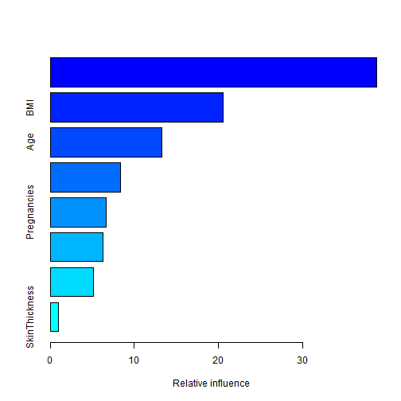
## var rel.inf
## Glucose Glucose 38.8539897
## BMI BMI 20.5745383
## Age Age 13.2878262
## DBF DBF 8.3172348
## Pregnancies Pregnancies 6.6526167
## BloodPressure BloodPressure 6.2333529
## Insulin Insulin 5.1350188
## SkinThickness SkinThickness 0.9454227
varImp(mod_gbm)
## gbm variable importance
##
## Overall
## Glucose 100.00
## BMI 51.78
## Age 32.56
## DBF 19.45
## Pregnancies 15.06
## BloodPressure 13.95
## Insulin 11.05
## SkinThickness 0.00
pred_gbm <- predict(mod_gbm,newdata=testing)
confusionMatrix(data=pred_gbm, testing$Outcome)
## Confusion Matrix and Statistics
##
## Reference
## Prediction NO YES
## NO 134 33
## YES 16 47
##
## Accuracy : 0.787
## 95% CI : (0.7283, 0.838)
## No Information Rate : 0.6522
## P-Value [Acc > NIR] : 5.84e-06
##
## Kappa : 0.5059
## Mcnemar's Test P-Value : 0.02227
##
## Sensitivity : 0.8933
## Specificity : 0.5875
## Pos Pred Value : 0.8024
## Neg Pred Value : 0.7460
## Prevalence : 0.6522
## Detection Rate : 0.5826
## Detection Prevalence : 0.7261
## Balanced Accuracy : 0.7404
##
## 'Positive' Class : NO
##
mod_gbm <- train(Outcome ~ Glucose+BMI+Age+Pregnancies+DBF , data=training, method="gbm")
## Iter TrainDeviance ValidDeviance StepSize Improve
## 1 1.2495 nan 0.1000 0.0208
## 2 1.2106 nan 0.1000 0.0157
## 3 1.1821 nan 0.1000 0.0129
## 4 1.1605 nan 0.1000 0.0094
## 5 1.1472 nan 0.1000 0.0036
## 6 1.1257 nan 0.1000 0.0111
## 7 1.1124 nan 0.1000 0.0053
## 8 1.0946 nan 0.1000 0.0073
## 9 1.0757 nan 0.1000 0.0083
## 10 1.0619 nan 0.1000 0.0061
## 20 0.9722 nan 0.1000 0.0010
## 40 0.8816 nan 0.1000 0.0012
## 60 0.8368 nan 0.1000 -0.0007
## 80 0.8106 nan 0.1000 0.0000
## 100 0.7833 nan 0.1000 -0.0000
## 120 0.7658 nan 0.1000 -0.0011
## 140 0.7516 nan 0.1000 -0.0001
## 150 0.7442 nan 0.1000 -0.0011
##
## Iter TrainDeviance ValidDeviance StepSize Improve
## 1 1.2412 nan 0.1000 0.0233
## 2 1.1957 nan 0.1000 0.0200
## 3 1.1534 nan 0.1000 0.0217
## 4 1.1225 nan 0.1000 0.0155
## 5 1.0910 nan 0.1000 0.0130
## 6 1.0655 nan 0.1000 0.0116
## 7 1.0427 nan 0.1000 0.0098
## 8 1.0261 nan 0.1000 0.0072
## 9 1.0082 nan 0.1000 0.0078
## 10 0.9903 nan 0.1000 0.0045
## 20 0.8743 nan 0.1000 0.0022
## 40 0.7726 nan 0.1000 0.0007
## 60 0.7186 nan 0.1000 0.0000
## 80 0.6800 nan 0.1000 -0.0018
## 100 0.6474 nan 0.1000 -0.0017
## 120 0.6182 nan 0.1000 0.0001
## 140 0.5901 nan 0.1000 -0.0009
## 150 0.5769 nan 0.1000 -0.0011
##
## Iter TrainDeviance ValidDeviance StepSize Improve
## 1 1.2311 nan 0.1000 0.0274
## 2 1.1833 nan 0.1000 0.0216
## 3 1.1389 nan 0.1000 0.0187
## 4 1.1008 nan 0.1000 0.0142
## 5 1.0651 nan 0.1000 0.0157
## 6 1.0396 nan 0.1000 0.0112
## 7 1.0127 nan 0.1000 0.0116
## 8 0.9851 nan 0.1000 0.0108
## 9 0.9633 nan 0.1000 0.0102
## 10 0.9462 nan 0.1000 0.0067
## 20 0.8195 nan 0.1000 0.0012
## 40 0.6952 nan 0.1000 -0.0001
## 60 0.6216 nan 0.1000 -0.0011
## 80 0.5665 nan 0.1000 -0.0009
## 100 0.5249 nan 0.1000 -0.0006
## 120 0.4832 nan 0.1000 -0.0006
## 140 0.4498 nan 0.1000 0.0001
## 150 0.4364 nan 0.1000 -0.0020
##
## Iter TrainDeviance ValidDeviance StepSize Improve
## 1 1.2793 nan 0.1000 0.0116
## 2 1.2527 nan 0.1000 0.0125
## 3 1.2328 nan 0.1000 0.0088
## 4 1.2123 nan 0.1000 0.0094
## 5 1.1891 nan 0.1000 0.0093
## 6 1.1660 nan 0.1000 0.0100
## 7 1.1445 nan 0.1000 0.0067
## 8 1.1323 nan 0.1000 0.0035
## 9 1.1162 nan 0.1000 0.0072
## 10 1.1031 nan 0.1000 0.0057
## 20 1.0036 nan 0.1000 0.0041
## 40 0.9071 nan 0.1000 0.0012
## 60 0.8596 nan 0.1000 -0.0002
## 80 0.8289 nan 0.1000 -0.0001
## 100 0.8057 nan 0.1000 -0.0013
## 120 0.7831 nan 0.1000 -0.0004
## 140 0.7713 nan 0.1000 -0.0009
## 150 0.7639 nan 0.1000 -0.0016
##
## Iter TrainDeviance ValidDeviance StepSize Improve
## 1 1.2648 nan 0.1000 0.0197
## 2 1.2211 nan 0.1000 0.0184
## 3 1.1854 nan 0.1000 0.0174
## 4 1.1534 nan 0.1000 0.0142
## 5 1.1229 nan 0.1000 0.0133
## 6 1.0971 nan 0.1000 0.0088
## 7 1.0722 nan 0.1000 0.0086
## 8 1.0496 nan 0.1000 0.0094
## 9 1.0320 nan 0.1000 0.0063
## 10 1.0139 nan 0.1000 0.0070
## 20 0.9026 nan 0.1000 0.0020
## 40 0.7974 nan 0.1000 -0.0005
## 60 0.7433 nan 0.1000 -0.0006
## 80 0.6967 nan 0.1000 -0.0019
## 100 0.6628 nan 0.1000 -0.0015
## 120 0.6254 nan 0.1000 -0.0006
## 140 0.5961 nan 0.1000 0.0000
## 150 0.5788 nan 0.1000 -0.0008
##
## Iter TrainDeviance ValidDeviance StepSize Improve
## 1 1.2446 nan 0.1000 0.0269
## 2 1.2010 nan 0.1000 0.0183
## 3 1.1580 nan 0.1000 0.0211
## 4 1.1137 nan 0.1000 0.0205
## 5 1.0797 nan 0.1000 0.0162
## 6 1.0536 nan 0.1000 0.0106
## 7 1.0297 nan 0.1000 0.0081
## 8 1.0059 nan 0.1000 0.0103
## 9 0.9867 nan 0.1000 0.0065
## 10 0.9659 nan 0.1000 0.0047
## 20 0.8408 nan 0.1000 0.0019
## 40 0.7235 nan 0.1000 -0.0015
## 60 0.6460 nan 0.1000 -0.0018
## 80 0.5934 nan 0.1000 0.0007
## 100 0.5465 nan 0.1000 -0.0006
## 120 0.5090 nan 0.1000 -0.0023
## 140 0.4720 nan 0.1000 -0.0007
## 150 0.4551 nan 0.1000 -0.0012
##
## Iter TrainDeviance ValidDeviance StepSize Improve
## 1 1.2525 nan 0.1000 0.0165
## 2 1.2248 nan 0.1000 0.0122
## 3 1.2051 nan 0.1000 0.0067
## 4 1.1878 nan 0.1000 0.0081
## 5 1.1707 nan 0.1000 0.0066
## 6 1.1550 nan 0.1000 0.0074
## 7 1.1393 nan 0.1000 0.0056
## 8 1.1213 nan 0.1000 0.0080
## 9 1.1017 nan 0.1000 0.0069
## 10 1.0914 nan 0.1000 0.0020
## 20 1.0045 nan 0.1000 0.0021
## 40 0.9178 nan 0.1000 0.0009
## 60 0.8664 nan 0.1000 -0.0008
## 80 0.8419 nan 0.1000 -0.0006
## 100 0.8233 nan 0.1000 -0.0002
## 120 0.8065 nan 0.1000 -0.0015
## 140 0.7928 nan 0.1000 -0.0001
## 150 0.7855 nan 0.1000 -0.0010
##
## Iter TrainDeviance ValidDeviance StepSize Improve
## 1 1.2468 nan 0.1000 0.0165
## 2 1.2087 nan 0.1000 0.0211
## 3 1.1779 nan 0.1000 0.0095
## 4 1.1470 nan 0.1000 0.0132
## 5 1.1206 nan 0.1000 0.0126
## 6 1.0980 nan 0.1000 0.0092
## 7 1.0774 nan 0.1000 0.0066
## 8 1.0601 nan 0.1000 0.0056
## 9 1.0399 nan 0.1000 0.0069
## 10 1.0296 nan 0.1000 0.0013
## 20 0.9218 nan 0.1000 0.0014
## 40 0.8252 nan 0.1000 -0.0007
## 60 0.7687 nan 0.1000 -0.0026
## 80 0.7209 nan 0.1000 -0.0019
## 100 0.6878 nan 0.1000 -0.0016
## 120 0.6550 nan 0.1000 -0.0012
## 140 0.6254 nan 0.1000 -0.0004
## 150 0.6131 nan 0.1000 -0.0015
##
## Iter TrainDeviance ValidDeviance StepSize Improve
## 1 1.2370 nan 0.1000 0.0215
## 2 1.1945 nan 0.1000 0.0173
## 3 1.1540 nan 0.1000 0.0203
## 4 1.1278 nan 0.1000 0.0136
## 5 1.0987 nan 0.1000 0.0111
## 6 1.0743 nan 0.1000 0.0076
## 7 1.0488 nan 0.1000 0.0083
## 8 1.0262 nan 0.1000 0.0082
## 9 1.0059 nan 0.1000 0.0094
## 10 0.9867 nan 0.1000 0.0066
## 20 0.8653 nan 0.1000 0.0009
## 40 0.7572 nan 0.1000 0.0002
## 60 0.6927 nan 0.1000 -0.0007
## 80 0.6366 nan 0.1000 0.0004
## 100 0.5953 nan 0.1000 -0.0016
## 120 0.5597 nan 0.1000 -0.0030
## 140 0.5241 nan 0.1000 -0.0024
## 150 0.5036 nan 0.1000 -0.0013
##
## Iter TrainDeviance ValidDeviance StepSize Improve
## 1 1.2462 nan 0.1000 0.0151
## 2 1.2222 nan 0.1000 0.0103
## 3 1.1997 nan 0.1000 0.0092
## 4 1.1753 nan 0.1000 0.0081
## 5 1.1576 nan 0.1000 0.0077
## 6 1.1370 nan 0.1000 0.0093
## 7 1.1208 nan 0.1000 0.0075
## 8 1.1070 nan 0.1000 0.0054
## 9 1.0969 nan 0.1000 0.0036
## 10 1.0885 nan 0.1000 0.0012
## 20 0.9902 nan 0.1000 0.0030
## 40 0.8928 nan 0.1000 0.0002
## 60 0.8394 nan 0.1000 0.0000
## 80 0.8110 nan 0.1000 -0.0013
## 100 0.7813 nan 0.1000 -0.0006
## 120 0.7625 nan 0.1000 -0.0018
## 140 0.7454 nan 0.1000 -0.0008
## 150 0.7390 nan 0.1000 -0.0010
##
## Iter TrainDeviance ValidDeviance StepSize Improve
## 1 1.2362 nan 0.1000 0.0229
## 2 1.1935 nan 0.1000 0.0162
## 3 1.1614 nan 0.1000 0.0141
## 4 1.1315 nan 0.1000 0.0127
## 5 1.1031 nan 0.1000 0.0118
## 6 1.0761 nan 0.1000 0.0087
## 7 1.0558 nan 0.1000 0.0076
## 8 1.0367 nan 0.1000 0.0071
## 9 1.0175 nan 0.1000 0.0067
## 10 1.0038 nan 0.1000 0.0037
## 20 0.8929 nan 0.1000 0.0026
## 40 0.7784 nan 0.1000 0.0002
## 60 0.7202 nan 0.1000 0.0009
## 80 0.6718 nan 0.1000 -0.0013
## 100 0.6337 nan 0.1000 -0.0007
## 120 0.6000 nan 0.1000 -0.0002
## 140 0.5709 nan 0.1000 -0.0005
## 150 0.5575 nan 0.1000 0.0004
##
## Iter TrainDeviance ValidDeviance StepSize Improve
## 1 1.2233 nan 0.1000 0.0284
## 2 1.1808 nan 0.1000 0.0194
## 3 1.1430 nan 0.1000 0.0157
## 4 1.1082 nan 0.1000 0.0164
## 5 1.0752 nan 0.1000 0.0132
## 6 1.0458 nan 0.1000 0.0093
## 7 1.0241 nan 0.1000 0.0076
## 8 0.9981 nan 0.1000 0.0104
## 9 0.9801 nan 0.1000 0.0039
## 10 0.9557 nan 0.1000 0.0075
## 20 0.8288 nan 0.1000 0.0010
## 40 0.7070 nan 0.1000 -0.0005
## 60 0.6462 nan 0.1000 -0.0011
## 80 0.5948 nan 0.1000 -0.0009
## 100 0.5438 nan 0.1000 -0.0009
## 120 0.5052 nan 0.1000 -0.0001
## 140 0.4595 nan 0.1000 -0.0005
## 150 0.4407 nan 0.1000 0.0001
##
## Iter TrainDeviance ValidDeviance StepSize Improve
## 1 1.2090 nan 0.1000 0.0208
## 2 1.1753 nan 0.1000 0.0152
## 3 1.1400 nan 0.1000 0.0163
## 4 1.1128 nan 0.1000 0.0118
## 5 1.0975 nan 0.1000 0.0072
## 6 1.0751 nan 0.1000 0.0100
## 7 1.0619 nan 0.1000 0.0020
## 8 1.0514 nan 0.1000 0.0023
## 9 1.0346 nan 0.1000 0.0065
## 10 1.0187 nan 0.1000 0.0067
## 20 0.9209 nan 0.1000 0.0014
## 40 0.8258 nan 0.1000 -0.0014
## 60 0.7843 nan 0.1000 0.0001
## 80 0.7574 nan 0.1000 -0.0009
## 100 0.7389 nan 0.1000 -0.0009
## 120 0.7232 nan 0.1000 -0.0006
## 140 0.7093 nan 0.1000 -0.0012
## 150 0.7006 nan 0.1000 -0.0004
##
## Iter TrainDeviance ValidDeviance StepSize Improve
## 1 1.1950 nan 0.1000 0.0268
## 2 1.1552 nan 0.1000 0.0208
## 3 1.1143 nan 0.1000 0.0187
## 4 1.0785 nan 0.1000 0.0154
## 5 1.0489 nan 0.1000 0.0121
## 6 1.0189 nan 0.1000 0.0126
## 7 0.9940 nan 0.1000 0.0096
## 8 0.9732 nan 0.1000 0.0084
## 9 0.9556 nan 0.1000 0.0073
## 10 0.9360 nan 0.1000 0.0071
## 20 0.8210 nan 0.1000 0.0021
## 40 0.7234 nan 0.1000 0.0000
## 60 0.6624 nan 0.1000 -0.0001
## 80 0.6144 nan 0.1000 -0.0023
## 100 0.5791 nan 0.1000 -0.0000
## 120 0.5459 nan 0.1000 -0.0010
## 140 0.5205 nan 0.1000 -0.0010
## 150 0.5054 nan 0.1000 -0.0024
##
## Iter TrainDeviance ValidDeviance StepSize Improve
## 1 1.1856 nan 0.1000 0.0332
## 2 1.1373 nan 0.1000 0.0244
## 3 1.0873 nan 0.1000 0.0220
## 4 1.0494 nan 0.1000 0.0142
## 5 1.0156 nan 0.1000 0.0138
## 6 0.9854 nan 0.1000 0.0149
## 7 0.9584 nan 0.1000 0.0082
## 8 0.9319 nan 0.1000 0.0105
## 9 0.9067 nan 0.1000 0.0092
## 10 0.8872 nan 0.1000 0.0083
## 20 0.7658 nan 0.1000 0.0011
## 40 0.6521 nan 0.1000 0.0007
## 60 0.5761 nan 0.1000 -0.0007
## 80 0.5173 nan 0.1000 -0.0010
## 100 0.4640 nan 0.1000 -0.0008
## 120 0.4335 nan 0.1000 -0.0004
## 140 0.4001 nan 0.1000 -0.0018
## 150 0.3858 nan 0.1000 -0.0007
##
## Iter TrainDeviance ValidDeviance StepSize Improve
## 1 1.2548 nan 0.1000 0.0117
## 2 1.2351 nan 0.1000 0.0095
## 3 1.2162 nan 0.1000 0.0054
## 4 1.1989 nan 0.1000 0.0060
## 5 1.1824 nan 0.1000 0.0046
## 6 1.1671 nan 0.1000 0.0044
## 7 1.1536 nan 0.1000 0.0053
## 8 1.1431 nan 0.1000 0.0047
## 9 1.1309 nan 0.1000 0.0044
## 10 1.1204 nan 0.1000 0.0050
## 20 1.0374 nan 0.1000 0.0025
## 40 0.9459 nan 0.1000 0.0009
## 60 0.8914 nan 0.1000 0.0000
## 80 0.8563 nan 0.1000 0.0002
## 100 0.8294 nan 0.1000 0.0003
## 120 0.8097 nan 0.1000 -0.0007
## 140 0.7952 nan 0.1000 -0.0006
## 150 0.7887 nan 0.1000 -0.0005
##
## Iter TrainDeviance ValidDeviance StepSize Improve
## 1 1.2519 nan 0.1000 0.0137
## 2 1.2209 nan 0.1000 0.0138
## 3 1.1938 nan 0.1000 0.0112
## 4 1.1664 nan 0.1000 0.0095
## 5 1.1407 nan 0.1000 0.0115
## 6 1.1236 nan 0.1000 0.0042
## 7 1.1044 nan 0.1000 0.0057
## 8 1.0839 nan 0.1000 0.0097
## 9 1.0701 nan 0.1000 0.0034
## 10 1.0520 nan 0.1000 0.0090
## 20 0.9360 nan 0.1000 0.0029
## 40 0.8271 nan 0.1000 0.0003
## 60 0.7646 nan 0.1000 -0.0004
## 80 0.7135 nan 0.1000 -0.0007
## 100 0.6759 nan 0.1000 -0.0016
## 120 0.6418 nan 0.1000 -0.0006
## 140 0.6115 nan 0.1000 -0.0019
## 150 0.5968 nan 0.1000 -0.0001
##
## Iter TrainDeviance ValidDeviance StepSize Improve
## 1 1.2393 nan 0.1000 0.0190
## 2 1.2048 nan 0.1000 0.0148
## 3 1.1655 nan 0.1000 0.0173
## 4 1.1374 nan 0.1000 0.0100
## 5 1.1133 nan 0.1000 0.0089
## 6 1.0854 nan 0.1000 0.0102
## 7 1.0694 nan 0.1000 0.0063
## 8 1.0496 nan 0.1000 0.0053
## 9 1.0303 nan 0.1000 0.0053
## 10 1.0149 nan 0.1000 0.0045
## 20 0.8826 nan 0.1000 0.0014
## 40 0.7555 nan 0.1000 -0.0008
## 60 0.6775 nan 0.1000 -0.0017
## 80 0.6158 nan 0.1000 -0.0011
## 100 0.5534 nan 0.1000 -0.0007
## 120 0.5074 nan 0.1000 -0.0027
## 140 0.4727 nan 0.1000 -0.0010
## 150 0.4555 nan 0.1000 -0.0014
##
## Iter TrainDeviance ValidDeviance StepSize Improve
## 1 1.2727 nan 0.1000 0.0174
## 2 1.2430 nan 0.1000 0.0153
## 3 1.2097 nan 0.1000 0.0172
## 4 1.1828 nan 0.1000 0.0098
## 5 1.1545 nan 0.1000 0.0130
## 6 1.1333 nan 0.1000 0.0088
## 7 1.1083 nan 0.1000 0.0097
## 8 1.0898 nan 0.1000 0.0068
## 9 1.0733 nan 0.1000 0.0065
## 10 1.0579 nan 0.1000 0.0058
## 20 0.9570 nan 0.1000 0.0036
## 40 0.8463 nan 0.1000 0.0009
## 60 0.7910 nan 0.1000 -0.0003
## 80 0.7636 nan 0.1000 -0.0014
## 100 0.7449 nan 0.1000 -0.0010
## 120 0.7259 nan 0.1000 -0.0007
## 140 0.7116 nan 0.1000 -0.0005
## 150 0.7053 nan 0.1000 -0.0006
##
## Iter TrainDeviance ValidDeviance StepSize Improve
## 1 1.2447 nan 0.1000 0.0328
## 2 1.1933 nan 0.1000 0.0280
## 3 1.1528 nan 0.1000 0.0207
## 4 1.1139 nan 0.1000 0.0189
## 5 1.0853 nan 0.1000 0.0125
## 6 1.0537 nan 0.1000 0.0122
## 7 1.0300 nan 0.1000 0.0080
## 8 1.0034 nan 0.1000 0.0122
## 9 0.9822 nan 0.1000 0.0087
## 10 0.9622 nan 0.1000 0.0070
## 20 0.8359 nan 0.1000 0.0025
## 40 0.7239 nan 0.1000 0.0015
## 60 0.6667 nan 0.1000 -0.0014
## 80 0.6194 nan 0.1000 -0.0015
## 100 0.5843 nan 0.1000 0.0002
## 120 0.5544 nan 0.1000 -0.0010
## 140 0.5241 nan 0.1000 0.0003
## 150 0.5107 nan 0.1000 -0.0012
##
## Iter TrainDeviance ValidDeviance StepSize Improve
## 1 1.2372 nan 0.1000 0.0373
## 2 1.1742 nan 0.1000 0.0329
## 3 1.1281 nan 0.1000 0.0228
## 4 1.0761 nan 0.1000 0.0239
## 5 1.0459 nan 0.1000 0.0121
## 6 1.0078 nan 0.1000 0.0161
## 7 0.9793 nan 0.1000 0.0136
## 8 0.9508 nan 0.1000 0.0137
## 9 0.9225 nan 0.1000 0.0124
## 10 0.9036 nan 0.1000 0.0060
## 20 0.7716 nan 0.1000 0.0026
## 40 0.6537 nan 0.1000 -0.0003
## 60 0.5905 nan 0.1000 -0.0008
## 80 0.5339 nan 0.1000 -0.0005
## 100 0.4872 nan 0.1000 -0.0007
## 120 0.4476 nan 0.1000 -0.0005
## 140 0.4186 nan 0.1000 -0.0011
## 150 0.4024 nan 0.1000 -0.0005
##
## Iter TrainDeviance ValidDeviance StepSize Improve
## 1 1.2118 nan 0.1000 0.0083
## 2 1.1901 nan 0.1000 0.0113
## 3 1.1734 nan 0.1000 0.0058
## 4 1.1567 nan 0.1000 0.0079
## 5 1.1418 nan 0.1000 0.0057
## 6 1.1269 nan 0.1000 0.0044
## 7 1.1151 nan 0.1000 0.0031
## 8 1.0963 nan 0.1000 0.0058
## 9 1.0850 nan 0.1000 0.0039
## 10 1.0760 nan 0.1000 0.0021
## 20 0.9995 nan 0.1000 0.0018
## 40 0.9084 nan 0.1000 0.0004
## 60 0.8594 nan 0.1000 0.0006
## 80 0.8300 nan 0.1000 -0.0002
## 100 0.8095 nan 0.1000 -0.0000
## 120 0.7958 nan 0.1000 -0.0012
## 140 0.7777 nan 0.1000 -0.0002
## 150 0.7677 nan 0.1000 -0.0001
##
## Iter TrainDeviance ValidDeviance StepSize Improve
## 1 1.1917 nan 0.1000 0.0188
## 2 1.1538 nan 0.1000 0.0130
## 3 1.1309 nan 0.1000 0.0083
## 4 1.1118 nan 0.1000 0.0051
## 5 1.0898 nan 0.1000 0.0099
## 6 1.0659 nan 0.1000 0.0086
## 7 1.0478 nan 0.1000 0.0054
## 8 1.0295 nan 0.1000 0.0055
## 9 1.0149 nan 0.1000 0.0066
## 10 1.0003 nan 0.1000 0.0043
## 20 0.9094 nan 0.1000 0.0005
## 40 0.8113 nan 0.1000 -0.0005
## 60 0.7482 nan 0.1000 0.0003
## 80 0.7049 nan 0.1000 0.0003
## 100 0.6634 nan 0.1000 0.0001
## 120 0.6304 nan 0.1000 -0.0012
## 140 0.6036 nan 0.1000 -0.0008
## 150 0.5840 nan 0.1000 -0.0019
##
## Iter TrainDeviance ValidDeviance StepSize Improve
## 1 1.1964 nan 0.1000 0.0165
## 2 1.1561 nan 0.1000 0.0152
## 3 1.1225 nan 0.1000 0.0128
## 4 1.0900 nan 0.1000 0.0124
## 5 1.0625 nan 0.1000 0.0091
## 6 1.0359 nan 0.1000 0.0064
## 7 1.0167 nan 0.1000 0.0082
## 8 0.9989 nan 0.1000 0.0062
## 9 0.9822 nan 0.1000 0.0047
## 10 0.9625 nan 0.1000 0.0085
## 20 0.8570 nan 0.1000 0.0003
## 40 0.7461 nan 0.1000 -0.0014
## 60 0.6765 nan 0.1000 -0.0017
## 80 0.6151 nan 0.1000 -0.0003
## 100 0.5621 nan 0.1000 -0.0000
## 120 0.5082 nan 0.1000 -0.0010
## 140 0.4726 nan 0.1000 -0.0011
## 150 0.4536 nan 0.1000 -0.0007
##
## Iter TrainDeviance ValidDeviance StepSize Improve
## 1 1.2897 nan 0.1000 0.0202
## 2 1.2581 nan 0.1000 0.0136
## 3 1.2253 nan 0.1000 0.0143
## 4 1.2007 nan 0.1000 0.0103
## 5 1.1848 nan 0.1000 0.0032
## 6 1.1604 nan 0.1000 0.0075
## 7 1.1383 nan 0.1000 0.0085
## 8 1.1202 nan 0.1000 0.0081
## 9 1.1042 nan 0.1000 0.0057
## 10 1.0893 nan 0.1000 0.0037
## 20 0.9656 nan 0.1000 0.0049
## 40 0.8524 nan 0.1000 -0.0003
## 60 0.7843 nan 0.1000 0.0005
## 80 0.7479 nan 0.1000 -0.0006
## 100 0.7227 nan 0.1000 -0.0011
## 120 0.7016 nan 0.1000 -0.0002
## 140 0.6826 nan 0.1000 -0.0006
## 150 0.6726 nan 0.1000 -0.0007
##
## Iter TrainDeviance ValidDeviance StepSize Improve
## 1 1.2692 nan 0.1000 0.0257
## 2 1.2198 nan 0.1000 0.0195
## 3 1.1744 nan 0.1000 0.0195
## 4 1.1384 nan 0.1000 0.0148
## 5 1.1138 nan 0.1000 0.0059
## 6 1.0847 nan 0.1000 0.0124
## 7 1.0531 nan 0.1000 0.0129
## 8 1.0312 nan 0.1000 0.0092
## 9 1.0148 nan 0.1000 0.0067
## 10 0.9953 nan 0.1000 0.0093
## 20 0.8609 nan 0.1000 0.0036
## 40 0.7379 nan 0.1000 -0.0004
## 60 0.6713 nan 0.1000 0.0003
## 80 0.6220 nan 0.1000 -0.0018
## 100 0.5739 nan 0.1000 -0.0019
## 120 0.5382 nan 0.1000 -0.0015
## 140 0.5034 nan 0.1000 -0.0011
## 150 0.4868 nan 0.1000 -0.0007
##
## Iter TrainDeviance ValidDeviance StepSize Improve
## 1 1.2575 nan 0.1000 0.0319
## 2 1.2024 nan 0.1000 0.0229
## 3 1.1499 nan 0.1000 0.0239
## 4 1.1094 nan 0.1000 0.0151
## 5 1.0788 nan 0.1000 0.0122
## 6 1.0463 nan 0.1000 0.0119
## 7 1.0122 nan 0.1000 0.0125
## 8 0.9832 nan 0.1000 0.0108
## 9 0.9615 nan 0.1000 0.0065
## 10 0.9379 nan 0.1000 0.0095
## 20 0.7968 nan 0.1000 0.0025
## 40 0.6626 nan 0.1000 -0.0002
## 60 0.5871 nan 0.1000 0.0001
## 80 0.5312 nan 0.1000 -0.0021
## 100 0.4787 nan 0.1000 -0.0018
## 120 0.4350 nan 0.1000 -0.0012
## 140 0.4043 nan 0.1000 -0.0019
## 150 0.3867 nan 0.1000 -0.0007
##
## Iter TrainDeviance ValidDeviance StepSize Improve
## 1 1.2415 nan 0.1000 0.0150
## 2 1.2122 nan 0.1000 0.0126
## 3 1.1897 nan 0.1000 0.0101
## 4 1.1655 nan 0.1000 0.0126
## 5 1.1488 nan 0.1000 0.0070
## 6 1.1281 nan 0.1000 0.0097
## 7 1.1124 nan 0.1000 0.0063
## 8 1.0960 nan 0.1000 0.0065
## 9 1.0834 nan 0.1000 0.0032
## 10 1.0679 nan 0.1000 0.0076
## 20 0.9844 nan 0.1000 0.0006
## 40 0.8846 nan 0.1000 0.0012
## 60 0.8364 nan 0.1000 -0.0000
## 80 0.8052 nan 0.1000 -0.0008
## 100 0.7767 nan 0.1000 0.0004
## 120 0.7583 nan 0.1000 -0.0002
## 140 0.7383 nan 0.1000 -0.0005
## 150 0.7285 nan 0.1000 -0.0001
##
## Iter TrainDeviance ValidDeviance StepSize Improve
## 1 1.2153 nan 0.1000 0.0276
## 2 1.1691 nan 0.1000 0.0221
## 3 1.1310 nan 0.1000 0.0167
## 4 1.0997 nan 0.1000 0.0159
## 5 1.0743 nan 0.1000 0.0116
## 6 1.0564 nan 0.1000 0.0069
## 7 1.0339 nan 0.1000 0.0098
## 8 1.0162 nan 0.1000 0.0064
## 9 0.9979 nan 0.1000 0.0071
## 10 0.9827 nan 0.1000 0.0072
## 20 0.8856 nan 0.1000 0.0009
## 40 0.7772 nan 0.1000 -0.0008
## 60 0.7191 nan 0.1000 -0.0044
## 80 0.6783 nan 0.1000 -0.0007
## 100 0.6374 nan 0.1000 -0.0010
## 120 0.5996 nan 0.1000 -0.0016
## 140 0.5727 nan 0.1000 0.0000
## 150 0.5592 nan 0.1000 -0.0001
##
## Iter TrainDeviance ValidDeviance StepSize Improve
## 1 1.2142 nan 0.1000 0.0292
## 2 1.1634 nan 0.1000 0.0229
## 3 1.1182 nan 0.1000 0.0210
## 4 1.0885 nan 0.1000 0.0125
## 5 1.0553 nan 0.1000 0.0152
## 6 1.0253 nan 0.1000 0.0103
## 7 1.0012 nan 0.1000 0.0084
## 8 0.9781 nan 0.1000 0.0069
## 9 0.9593 nan 0.1000 0.0069
## 10 0.9398 nan 0.1000 0.0070
## 20 0.8198 nan 0.1000 0.0029
## 40 0.7011 nan 0.1000 -0.0023
## 60 0.6297 nan 0.1000 -0.0013
## 80 0.5764 nan 0.1000 -0.0008
## 100 0.5277 nan 0.1000 -0.0004
## 120 0.4870 nan 0.1000 -0.0024
## 140 0.4535 nan 0.1000 -0.0008
## 150 0.4357 nan 0.1000 -0.0007
##
## Iter TrainDeviance ValidDeviance StepSize Improve
## 1 1.2417 nan 0.1000 0.0077
## 2 1.2195 nan 0.1000 0.0065
## 3 1.2018 nan 0.1000 0.0066
## 4 1.1834 nan 0.1000 0.0083
## 5 1.1636 nan 0.1000 0.0087
## 6 1.1466 nan 0.1000 0.0063
## 7 1.1302 nan 0.1000 0.0049
## 8 1.1178 nan 0.1000 0.0043
## 9 1.1076 nan 0.1000 0.0045
## 10 1.0972 nan 0.1000 0.0019
## 20 1.0126 nan 0.1000 0.0025
## 40 0.9230 nan 0.1000 -0.0009
## 60 0.8738 nan 0.1000 -0.0003
## 80 0.8439 nan 0.1000 -0.0008
## 100 0.8221 nan 0.1000 -0.0013
## 120 0.8012 nan 0.1000 -0.0003
## 140 0.7873 nan 0.1000 -0.0013
## 150 0.7807 nan 0.1000 -0.0009
##
## Iter TrainDeviance ValidDeviance StepSize Improve
## 1 1.2277 nan 0.1000 0.0183
## 2 1.2007 nan 0.1000 0.0100
## 3 1.1766 nan 0.1000 0.0101
## 4 1.1480 nan 0.1000 0.0130
## 5 1.1212 nan 0.1000 0.0103
## 6 1.1001 nan 0.1000 0.0073
## 7 1.0798 nan 0.1000 0.0098
## 8 1.0601 nan 0.1000 0.0098
## 9 1.0432 nan 0.1000 0.0053
## 10 1.0292 nan 0.1000 0.0031
## 20 0.9236 nan 0.1000 0.0015
## 40 0.8146 nan 0.1000 0.0006
## 60 0.7480 nan 0.1000 0.0010
## 80 0.6942 nan 0.1000 -0.0008
## 100 0.6563 nan 0.1000 -0.0011
## 120 0.6223 nan 0.1000 -0.0005
## 140 0.5909 nan 0.1000 -0.0008
## 150 0.5796 nan 0.1000 -0.0024
##
## Iter TrainDeviance ValidDeviance StepSize Improve
## 1 1.2125 nan 0.1000 0.0220
## 2 1.1715 nan 0.1000 0.0169
## 3 1.1371 nan 0.1000 0.0151
## 4 1.1074 nan 0.1000 0.0145
## 5 1.0719 nan 0.1000 0.0160
## 6 1.0404 nan 0.1000 0.0098
## 7 1.0160 nan 0.1000 0.0068
## 8 0.9991 nan 0.1000 0.0045
## 9 0.9813 nan 0.1000 0.0064
## 10 0.9614 nan 0.1000 0.0077
## 20 0.8522 nan 0.1000 0.0026
## 40 0.7336 nan 0.1000 0.0002
## 60 0.6620 nan 0.1000 -0.0006
## 80 0.6221 nan 0.1000 -0.0011
## 100 0.5687 nan 0.1000 -0.0001
## 120 0.5311 nan 0.1000 -0.0010
## 140 0.4896 nan 0.1000 -0.0018
## 150 0.4751 nan 0.1000 -0.0013
##
## Iter TrainDeviance ValidDeviance StepSize Improve
## 1 1.2765 nan 0.1000 0.0193
## 2 1.2390 nan 0.1000 0.0154
## 3 1.2075 nan 0.1000 0.0142
## 4 1.1802 nan 0.1000 0.0096
## 5 1.1566 nan 0.1000 0.0107
## 6 1.1359 nan 0.1000 0.0082
## 7 1.1195 nan 0.1000 0.0060
## 8 1.1046 nan 0.1000 0.0063
## 9 1.0862 nan 0.1000 0.0074
## 10 1.0734 nan 0.1000 0.0026
## 20 0.9743 nan 0.1000 0.0043
## 40 0.8805 nan 0.1000 -0.0002
## 60 0.8359 nan 0.1000 -0.0018
## 80 0.8125 nan 0.1000 -0.0009
## 100 0.7875 nan 0.1000 0.0003
## 120 0.7729 nan 0.1000 -0.0009
## 140 0.7600 nan 0.1000 -0.0026
## 150 0.7525 nan 0.1000 -0.0007
##
## Iter TrainDeviance ValidDeviance StepSize Improve
## 1 1.2615 nan 0.1000 0.0270
## 2 1.2140 nan 0.1000 0.0231
## 3 1.1794 nan 0.1000 0.0160
## 4 1.1418 nan 0.1000 0.0177
## 5 1.1103 nan 0.1000 0.0143
## 6 1.0806 nan 0.1000 0.0132
## 7 1.0520 nan 0.1000 0.0100
## 8 1.0309 nan 0.1000 0.0093
## 9 1.0113 nan 0.1000 0.0073
## 10 0.9958 nan 0.1000 0.0052
## 20 0.8928 nan 0.1000 0.0012
## 40 0.7935 nan 0.1000 0.0005
## 60 0.7357 nan 0.1000 -0.0013
## 80 0.6848 nan 0.1000 0.0005
## 100 0.6470 nan 0.1000 -0.0012
## 120 0.6065 nan 0.1000 -0.0001
## 140 0.5760 nan 0.1000 -0.0006
## 150 0.5609 nan 0.1000 -0.0014
##
## Iter TrainDeviance ValidDeviance StepSize Improve
## 1 1.2568 nan 0.1000 0.0307
## 2 1.2037 nan 0.1000 0.0264
## 3 1.1544 nan 0.1000 0.0228
## 4 1.1135 nan 0.1000 0.0164
## 5 1.0797 nan 0.1000 0.0122
## 6 1.0522 nan 0.1000 0.0110
## 7 1.0283 nan 0.1000 0.0081
## 8 1.0082 nan 0.1000 0.0078
## 9 0.9886 nan 0.1000 0.0051
## 10 0.9729 nan 0.1000 0.0064
## 20 0.8544 nan 0.1000 0.0034
## 40 0.7271 nan 0.1000 -0.0003
## 60 0.6484 nan 0.1000 -0.0003
## 80 0.5830 nan 0.1000 -0.0025
## 100 0.5392 nan 0.1000 -0.0015
## 120 0.4866 nan 0.1000 -0.0020
## 140 0.4469 nan 0.1000 -0.0015
## 150 0.4310 nan 0.1000 -0.0011
##
## Iter TrainDeviance ValidDeviance StepSize Improve
## 1 1.2443 nan 0.1000 0.0180
## 2 1.2084 nan 0.1000 0.0172
## 3 1.1823 nan 0.1000 0.0133
## 4 1.1568 nan 0.1000 0.0106
## 5 1.1381 nan 0.1000 0.0058
## 6 1.1214 nan 0.1000 0.0084
## 7 1.1074 nan 0.1000 0.0059
## 8 1.0943 nan 0.1000 0.0066
## 9 1.0812 nan 0.1000 0.0031
## 10 1.0671 nan 0.1000 0.0054
## 20 0.9785 nan 0.1000 0.0013
## 40 0.8863 nan 0.1000 0.0001
## 60 0.8406 nan 0.1000 -0.0001
## 80 0.8103 nan 0.1000 -0.0024
## 100 0.7896 nan 0.1000 -0.0012
## 120 0.7731 nan 0.1000 0.0001
## 140 0.7554 nan 0.1000 -0.0017
## 150 0.7484 nan 0.1000 -0.0014
##
## Iter TrainDeviance ValidDeviance StepSize Improve
## 1 1.2460 nan 0.1000 0.0232
## 2 1.2034 nan 0.1000 0.0212
## 3 1.1702 nan 0.1000 0.0150
## 4 1.1361 nan 0.1000 0.0115
## 5 1.1107 nan 0.1000 0.0086
## 6 1.0907 nan 0.1000 0.0087
## 7 1.0667 nan 0.1000 0.0092
## 8 1.0484 nan 0.1000 0.0079
## 9 1.0320 nan 0.1000 0.0050
## 10 1.0172 nan 0.1000 0.0059
## 20 0.9035 nan 0.1000 0.0013
## 40 0.7981 nan 0.1000 -0.0024
## 60 0.7267 nan 0.1000 -0.0002
## 80 0.6873 nan 0.1000 -0.0016
## 100 0.6426 nan 0.1000 -0.0009
## 120 0.6083 nan 0.1000 -0.0015
## 140 0.5751 nan 0.1000 0.0001
## 150 0.5657 nan 0.1000 -0.0010
##
## Iter TrainDeviance ValidDeviance StepSize Improve
## 1 1.2354 nan 0.1000 0.0242
## 2 1.1854 nan 0.1000 0.0184
## 3 1.1437 nan 0.1000 0.0196
## 4 1.1059 nan 0.1000 0.0176
## 5 1.0808 nan 0.1000 0.0105
## 6 1.0528 nan 0.1000 0.0128
## 7 1.0254 nan 0.1000 0.0119
## 8 1.0007 nan 0.1000 0.0068
## 9 0.9848 nan 0.1000 0.0037
## 10 0.9617 nan 0.1000 0.0074
## 20 0.8407 nan 0.1000 0.0010
## 40 0.7193 nan 0.1000 -0.0003
## 60 0.6470 nan 0.1000 -0.0011
## 80 0.5930 nan 0.1000 -0.0013
## 100 0.5365 nan 0.1000 -0.0010
## 120 0.4890 nan 0.1000 -0.0000
## 140 0.4561 nan 0.1000 -0.0004
## 150 0.4388 nan 0.1000 -0.0005
##
## Iter TrainDeviance ValidDeviance StepSize Improve
## 1 1.2540 nan 0.1000 0.0112
## 2 1.2339 nan 0.1000 0.0096
## 3 1.2161 nan 0.1000 0.0071
## 4 1.1991 nan 0.1000 0.0065
## 5 1.1815 nan 0.1000 0.0064
## 6 1.1661 nan 0.1000 0.0050
## 7 1.1528 nan 0.1000 0.0058
## 8 1.1414 nan 0.1000 0.0042
## 9 1.1306 nan 0.1000 0.0055
## 10 1.1173 nan 0.1000 0.0048
## 20 1.0323 nan 0.1000 0.0012
## 40 0.9426 nan 0.1000 0.0007
## 60 0.9051 nan 0.1000 -0.0011
## 80 0.8786 nan 0.1000 -0.0012
## 100 0.8543 nan 0.1000 -0.0016
## 120 0.8429 nan 0.1000 -0.0007
## 140 0.8285 nan 0.1000 -0.0008
## 150 0.8204 nan 0.1000 0.0003
##
## Iter TrainDeviance ValidDeviance StepSize Improve
## 1 1.2429 nan 0.1000 0.0164
## 2 1.2091 nan 0.1000 0.0140
## 3 1.1841 nan 0.1000 0.0085
## 4 1.1553 nan 0.1000 0.0123
## 5 1.1305 nan 0.1000 0.0093
## 6 1.1034 nan 0.1000 0.0087
## 7 1.0839 nan 0.1000 0.0073
## 8 1.0659 nan 0.1000 0.0070
## 9 1.0516 nan 0.1000 0.0054
## 10 1.0321 nan 0.1000 0.0053
## 20 0.9353 nan 0.1000 0.0015
## 40 0.8503 nan 0.1000 0.0009
## 60 0.8005 nan 0.1000 -0.0009
## 80 0.7554 nan 0.1000 -0.0010
## 100 0.7197 nan 0.1000 -0.0011
## 120 0.6869 nan 0.1000 -0.0000
## 140 0.6524 nan 0.1000 0.0000
## 150 0.6390 nan 0.1000 -0.0014
##
## Iter TrainDeviance ValidDeviance StepSize Improve
## 1 1.2386 nan 0.1000 0.0139
## 2 1.2006 nan 0.1000 0.0181
## 3 1.1666 nan 0.1000 0.0145
## 4 1.1315 nan 0.1000 0.0154
## 5 1.1029 nan 0.1000 0.0109
## 6 1.0780 nan 0.1000 0.0078
## 7 1.0570 nan 0.1000 0.0051
## 8 1.0356 nan 0.1000 0.0070
## 9 1.0168 nan 0.1000 0.0038
## 10 1.0024 nan 0.1000 0.0037
## 20 0.8939 nan 0.1000 0.0005
## 40 0.7828 nan 0.1000 -0.0008
## 60 0.7065 nan 0.1000 0.0004
## 80 0.6462 nan 0.1000 -0.0006
## 100 0.5926 nan 0.1000 -0.0022
## 120 0.5500 nan 0.1000 -0.0019
## 140 0.5164 nan 0.1000 -0.0005
## 150 0.5000 nan 0.1000 -0.0003
##
## Iter TrainDeviance ValidDeviance StepSize Improve
## 1 1.2906 nan 0.1000 0.0129
## 2 1.2661 nan 0.1000 0.0103
## 3 1.2428 nan 0.1000 0.0102
## 4 1.2239 nan 0.1000 0.0066
## 5 1.2079 nan 0.1000 0.0062
## 6 1.1914 nan 0.1000 0.0071
## 7 1.1759 nan 0.1000 0.0066
## 8 1.1617 nan 0.1000 0.0048
## 9 1.1494 nan 0.1000 0.0032
## 10 1.1374 nan 0.1000 0.0051
## 20 1.0399 nan 0.1000 0.0028
## 40 0.9481 nan 0.1000 0.0004
## 60 0.9017 nan 0.1000 -0.0003
## 80 0.8698 nan 0.1000 0.0003
## 100 0.8474 nan 0.1000 -0.0006
## 120 0.8329 nan 0.1000 -0.0020
## 140 0.8164 nan 0.1000 -0.0004
## 150 0.8092 nan 0.1000 0.0000
##
## Iter TrainDeviance ValidDeviance StepSize Improve
## 1 1.2701 nan 0.1000 0.0208
## 2 1.2309 nan 0.1000 0.0194
## 3 1.2042 nan 0.1000 0.0064
## 4 1.1749 nan 0.1000 0.0129
## 5 1.1463 nan 0.1000 0.0126
## 6 1.1256 nan 0.1000 0.0091
## 7 1.1104 nan 0.1000 0.0050
## 8 1.0880 nan 0.1000 0.0096
## 9 1.0693 nan 0.1000 0.0075
## 10 1.0508 nan 0.1000 0.0055
## 20 0.9420 nan 0.1000 0.0011
## 40 0.8367 nan 0.1000 0.0006
## 60 0.7812 nan 0.1000 -0.0005
## 80 0.7292 nan 0.1000 0.0006
## 100 0.6939 nan 0.1000 0.0003
## 120 0.6594 nan 0.1000 -0.0005
## 140 0.6298 nan 0.1000 -0.0012
## 150 0.6154 nan 0.1000 -0.0010
##
## Iter TrainDeviance ValidDeviance StepSize Improve
## 1 1.2652 nan 0.1000 0.0275
## 2 1.2268 nan 0.1000 0.0160
## 3 1.1857 nan 0.1000 0.0164
## 4 1.1527 nan 0.1000 0.0156
## 5 1.1199 nan 0.1000 0.0139
## 6 1.0894 nan 0.1000 0.0079
## 7 1.0668 nan 0.1000 0.0093
## 8 1.0444 nan 0.1000 0.0068
## 9 1.0212 nan 0.1000 0.0076
## 10 1.0002 nan 0.1000 0.0071
## 20 0.8847 nan 0.1000 0.0007
## 40 0.7590 nan 0.1000 -0.0017
## 60 0.6758 nan 0.1000 -0.0002
## 80 0.6105 nan 0.1000 -0.0018
## 100 0.5602 nan 0.1000 -0.0007
## 120 0.5198 nan 0.1000 -0.0007
## 140 0.4794 nan 0.1000 0.0005
## 150 0.4640 nan 0.1000 -0.0018
##
## Iter TrainDeviance ValidDeviance StepSize Improve
## 1 1.2862 nan 0.1000 0.0189
## 2 1.2600 nan 0.1000 0.0119
## 3 1.2287 nan 0.1000 0.0134
## 4 1.2044 nan 0.1000 0.0118
## 5 1.1811 nan 0.1000 0.0085
## 6 1.1626 nan 0.1000 0.0076
## 7 1.1472 nan 0.1000 0.0056
## 8 1.1285 nan 0.1000 0.0078
## 9 1.1129 nan 0.1000 0.0030
## 10 1.0980 nan 0.1000 0.0064
## 20 0.9980 nan 0.1000 0.0018
## 40 0.8893 nan 0.1000 -0.0005
## 60 0.8394 nan 0.1000 -0.0013
## 80 0.8116 nan 0.1000 -0.0004
## 100 0.7945 nan 0.1000 -0.0021
## 120 0.7777 nan 0.1000 -0.0008
## 140 0.7657 nan 0.1000 -0.0008
## 150 0.7565 nan 0.1000 -0.0009
##
## Iter TrainDeviance ValidDeviance StepSize Improve
## 1 1.2716 nan 0.1000 0.0241
## 2 1.2244 nan 0.1000 0.0195
## 3 1.1885 nan 0.1000 0.0159
## 4 1.1553 nan 0.1000 0.0131
## 5 1.1284 nan 0.1000 0.0128
## 6 1.1011 nan 0.1000 0.0112
## 7 1.0762 nan 0.1000 0.0101
## 8 1.0545 nan 0.1000 0.0062
## 9 1.0346 nan 0.1000 0.0081
## 10 1.0186 nan 0.1000 0.0047
## 20 0.8943 nan 0.1000 0.0025
## 40 0.7862 nan 0.1000 -0.0002
## 60 0.7314 nan 0.1000 -0.0023
## 80 0.6795 nan 0.1000 -0.0011
## 100 0.6447 nan 0.1000 -0.0001
## 120 0.6156 nan 0.1000 -0.0020
## 140 0.5818 nan 0.1000 -0.0008
## 150 0.5691 nan 0.1000 -0.0004
##
## Iter TrainDeviance ValidDeviance StepSize Improve
## 1 1.2642 nan 0.1000 0.0272
## 2 1.2125 nan 0.1000 0.0252
## 3 1.1683 nan 0.1000 0.0164
## 4 1.1294 nan 0.1000 0.0165
## 5 1.1035 nan 0.1000 0.0095
## 6 1.0722 nan 0.1000 0.0134
## 7 1.0479 nan 0.1000 0.0085
## 8 1.0250 nan 0.1000 0.0101
## 9 1.0052 nan 0.1000 0.0076
## 10 0.9820 nan 0.1000 0.0079
## 20 0.8447 nan 0.1000 0.0027
## 40 0.7268 nan 0.1000 -0.0014
## 60 0.6536 nan 0.1000 -0.0003
## 80 0.6022 nan 0.1000 -0.0018
## 100 0.5546 nan 0.1000 -0.0019
## 120 0.5083 nan 0.1000 -0.0018
## 140 0.4787 nan 0.1000 -0.0013
## 150 0.4634 nan 0.1000 -0.0013
##
## Iter TrainDeviance ValidDeviance StepSize Improve
## 1 1.2431 nan 0.1000 0.0221
## 2 1.2162 nan 0.1000 0.0132
## 3 1.1858 nan 0.1000 0.0130
## 4 1.1575 nan 0.1000 0.0122
## 5 1.1342 nan 0.1000 0.0107
## 6 1.1164 nan 0.1000 0.0078
## 7 1.0997 nan 0.1000 0.0064
## 8 1.0851 nan 0.1000 0.0060
## 9 1.0717 nan 0.1000 0.0049
## 10 1.0519 nan 0.1000 0.0066
## 20 0.9555 nan 0.1000 0.0015
## 40 0.8697 nan 0.1000 0.0002
## 60 0.8288 nan 0.1000 -0.0012
## 80 0.8020 nan 0.1000 -0.0011
## 100 0.7818 nan 0.1000 -0.0008
## 120 0.7604 nan 0.1000 0.0001
## 140 0.7459 nan 0.1000 -0.0017
## 150 0.7378 nan 0.1000 -0.0002
##
## Iter TrainDeviance ValidDeviance StepSize Improve
## 1 1.2311 nan 0.1000 0.0230
## 2 1.1824 nan 0.1000 0.0167
## 3 1.1479 nan 0.1000 0.0121
## 4 1.1138 nan 0.1000 0.0142
## 5 1.0827 nan 0.1000 0.0100
## 6 1.0564 nan 0.1000 0.0083
## 7 1.0352 nan 0.1000 0.0091
## 8 1.0120 nan 0.1000 0.0083
## 9 0.9945 nan 0.1000 0.0081
## 10 0.9814 nan 0.1000 0.0028
## 20 0.8802 nan 0.1000 -0.0001
## 40 0.7900 nan 0.1000 0.0001
## 60 0.7392 nan 0.1000 -0.0002
## 80 0.6952 nan 0.1000 -0.0006
## 100 0.6558 nan 0.1000 -0.0006
## 120 0.6182 nan 0.1000 -0.0015
## 140 0.5915 nan 0.1000 -0.0018
## 150 0.5776 nan 0.1000 -0.0014
##
## Iter TrainDeviance ValidDeviance StepSize Improve
## 1 1.2155 nan 0.1000 0.0218
## 2 1.1674 nan 0.1000 0.0229
## 3 1.1295 nan 0.1000 0.0180
## 4 1.0968 nan 0.1000 0.0139
## 5 1.0676 nan 0.1000 0.0113
## 6 1.0388 nan 0.1000 0.0134
## 7 1.0126 nan 0.1000 0.0088
## 8 0.9876 nan 0.1000 0.0089
## 9 0.9686 nan 0.1000 0.0057
## 10 0.9502 nan 0.1000 0.0070
## 20 0.8330 nan 0.1000 0.0018
## 40 0.7091 nan 0.1000 0.0006
## 60 0.6428 nan 0.1000 -0.0014
## 80 0.5899 nan 0.1000 -0.0012
## 100 0.5391 nan 0.1000 -0.0025
## 120 0.4964 nan 0.1000 -0.0008
## 140 0.4643 nan 0.1000 -0.0019
## 150 0.4470 nan 0.1000 -0.0002
##
## Iter TrainDeviance ValidDeviance StepSize Improve
## 1 1.2185 nan 0.1000 0.0231
## 2 1.1837 nan 0.1000 0.0163
## 3 1.1530 nan 0.1000 0.0150
## 4 1.1253 nan 0.1000 0.0126
## 5 1.1041 nan 0.1000 0.0090
## 6 1.0849 nan 0.1000 0.0090
## 7 1.0656 nan 0.1000 0.0076
## 8 1.0494 nan 0.1000 0.0074
## 9 1.0357 nan 0.1000 0.0066
## 10 1.0197 nan 0.1000 0.0068
## 20 0.9302 nan 0.1000 0.0021
## 40 0.8546 nan 0.1000 0.0003
## 60 0.8099 nan 0.1000 -0.0005
## 80 0.7844 nan 0.1000 -0.0016
## 100 0.7617 nan 0.1000 -0.0011
## 120 0.7438 nan 0.1000 -0.0006
## 140 0.7286 nan 0.1000 -0.0001
## 150 0.7203 nan 0.1000 -0.0007
##
## Iter TrainDeviance ValidDeviance StepSize Improve
## 1 1.2029 nan 0.1000 0.0264
## 2 1.1542 nan 0.1000 0.0214
## 3 1.1142 nan 0.1000 0.0176
## 4 1.0850 nan 0.1000 0.0136
## 5 1.0622 nan 0.1000 0.0077
## 6 1.0395 nan 0.1000 0.0108
## 7 1.0188 nan 0.1000 0.0077
## 8 0.9951 nan 0.1000 0.0111
## 9 0.9794 nan 0.1000 0.0039
## 10 0.9605 nan 0.1000 0.0070
## 20 0.8565 nan 0.1000 0.0016
## 40 0.7617 nan 0.1000 -0.0001
## 60 0.6991 nan 0.1000 -0.0003
## 80 0.6563 nan 0.1000 -0.0009
## 100 0.6212 nan 0.1000 0.0005
## 120 0.5912 nan 0.1000 -0.0001
## 140 0.5631 nan 0.1000 -0.0004
## 150 0.5465 nan 0.1000 -0.0000
##
## Iter TrainDeviance ValidDeviance StepSize Improve
## 1 1.2013 nan 0.1000 0.0252
## 2 1.1533 nan 0.1000 0.0249
## 3 1.1084 nan 0.1000 0.0154
## 4 1.0759 nan 0.1000 0.0151
## 5 1.0406 nan 0.1000 0.0145
## 6 1.0135 nan 0.1000 0.0097
## 7 0.9862 nan 0.1000 0.0082
## 8 0.9653 nan 0.1000 0.0081
## 9 0.9476 nan 0.1000 0.0052
## 10 0.9296 nan 0.1000 0.0080
## 20 0.8103 nan 0.1000 0.0013
## 40 0.7025 nan 0.1000 0.0007
## 60 0.6186 nan 0.1000 -0.0008
## 80 0.5647 nan 0.1000 -0.0008
## 100 0.5236 nan 0.1000 -0.0011
## 120 0.4800 nan 0.1000 -0.0020
## 140 0.4436 nan 0.1000 0.0003
## 150 0.4277 nan 0.1000 -0.0014
##
## Iter TrainDeviance ValidDeviance StepSize Improve
## 1 1.2377 nan 0.1000 0.0151
## 2 1.2070 nan 0.1000 0.0145
## 3 1.1759 nan 0.1000 0.0150
## 4 1.1450 nan 0.1000 0.0111
## 5 1.1210 nan 0.1000 0.0125
## 6 1.1002 nan 0.1000 0.0104
## 7 1.0790 nan 0.1000 0.0089
## 8 1.0600 nan 0.1000 0.0066
## 9 1.0403 nan 0.1000 0.0072
## 10 1.0273 nan 0.1000 0.0057
## 20 0.9227 nan 0.1000 0.0025
## 40 0.8182 nan 0.1000 0.0012
## 60 0.7632 nan 0.1000 0.0005
## 80 0.7262 nan 0.1000 -0.0001
## 100 0.7080 nan 0.1000 0.0004
## 120 0.6896 nan 0.1000 -0.0006
## 140 0.6744 nan 0.1000 -0.0006
## 150 0.6688 nan 0.1000 -0.0010
##
## Iter TrainDeviance ValidDeviance StepSize Improve
## 1 1.2225 nan 0.1000 0.0237
## 2 1.1759 nan 0.1000 0.0219
## 3 1.1251 nan 0.1000 0.0233
## 4 1.0875 nan 0.1000 0.0175
## 5 1.0631 nan 0.1000 0.0097
## 6 1.0375 nan 0.1000 0.0102
## 7 1.0131 nan 0.1000 0.0100
## 8 0.9926 nan 0.1000 0.0071
## 9 0.9736 nan 0.1000 0.0073
## 10 0.9532 nan 0.1000 0.0087
## 20 0.8360 nan 0.1000 0.0028
## 40 0.7293 nan 0.1000 -0.0004
## 60 0.6670 nan 0.1000 -0.0008
## 80 0.6213 nan 0.1000 -0.0011
## 100 0.5868 nan 0.1000 -0.0011
## 120 0.5553 nan 0.1000 -0.0007
## 140 0.5354 nan 0.1000 -0.0009
## 150 0.5210 nan 0.1000 -0.0001
##
## Iter TrainDeviance ValidDeviance StepSize Improve
## 1 1.2055 nan 0.1000 0.0359
## 2 1.1495 nan 0.1000 0.0250
## 3 1.1066 nan 0.1000 0.0185
## 4 1.0638 nan 0.1000 0.0185
## 5 1.0317 nan 0.1000 0.0137
## 6 1.0031 nan 0.1000 0.0092
## 7 0.9727 nan 0.1000 0.0117
## 8 0.9483 nan 0.1000 0.0078
## 9 0.9303 nan 0.1000 0.0068
## 10 0.9133 nan 0.1000 0.0073
## 20 0.7752 nan 0.1000 0.0018
## 40 0.6520 nan 0.1000 -0.0011
## 60 0.5800 nan 0.1000 -0.0009
## 80 0.5263 nan 0.1000 -0.0004
## 100 0.4804 nan 0.1000 -0.0003
## 120 0.4366 nan 0.1000 -0.0017
## 140 0.4020 nan 0.1000 -0.0020
## 150 0.3854 nan 0.1000 -0.0005
##
## Iter TrainDeviance ValidDeviance StepSize Improve
## 1 1.2484 nan 0.1000 0.0112
## 2 1.2140 nan 0.1000 0.0179
## 3 1.1856 nan 0.1000 0.0122
## 4 1.1591 nan 0.1000 0.0136
## 5 1.1378 nan 0.1000 0.0090
## 6 1.1214 nan 0.1000 0.0059
## 7 1.0985 nan 0.1000 0.0089
## 8 1.0810 nan 0.1000 0.0069
## 9 1.0682 nan 0.1000 0.0067
## 10 1.0551 nan 0.1000 0.0025
## 20 0.9645 nan 0.1000 0.0016
## 40 0.8750 nan 0.1000 0.0009
## 60 0.8283 nan 0.1000 -0.0006
## 80 0.8043 nan 0.1000 0.0003
## 100 0.7868 nan 0.1000 -0.0016
## 120 0.7716 nan 0.1000 -0.0013
## 140 0.7611 nan 0.1000 -0.0012
## 150 0.7531 nan 0.1000 -0.0006
##
## Iter TrainDeviance ValidDeviance StepSize Improve
## 1 1.2202 nan 0.1000 0.0224
## 2 1.1772 nan 0.1000 0.0207
## 3 1.1409 nan 0.1000 0.0168
## 4 1.1136 nan 0.1000 0.0057
## 5 1.0828 nan 0.1000 0.0119
## 6 1.0544 nan 0.1000 0.0099
## 7 1.0305 nan 0.1000 0.0095
## 8 1.0085 nan 0.1000 0.0089
## 9 0.9919 nan 0.1000 0.0062
## 10 0.9758 nan 0.1000 0.0061
## 20 0.8806 nan 0.1000 0.0021
## 40 0.7781 nan 0.1000 0.0004
## 60 0.7208 nan 0.1000 -0.0018
## 80 0.6765 nan 0.1000 -0.0019
## 100 0.6358 nan 0.1000 0.0014
## 120 0.5974 nan 0.1000 -0.0005
## 140 0.5631 nan 0.1000 -0.0004
## 150 0.5470 nan 0.1000 -0.0010
##
## Iter TrainDeviance ValidDeviance StepSize Improve
## 1 1.2283 nan 0.1000 0.0245
## 2 1.1763 nan 0.1000 0.0269
## 3 1.1300 nan 0.1000 0.0192
## 4 1.0954 nan 0.1000 0.0176
## 5 1.0586 nan 0.1000 0.0155
## 6 1.0329 nan 0.1000 0.0134
## 7 1.0076 nan 0.1000 0.0110
## 8 0.9867 nan 0.1000 0.0090
## 9 0.9669 nan 0.1000 0.0092
## 10 0.9483 nan 0.1000 0.0057
## 20 0.8242 nan 0.1000 0.0013
## 40 0.7093 nan 0.1000 -0.0001
## 60 0.6316 nan 0.1000 -0.0016
## 80 0.5747 nan 0.1000 -0.0007
## 100 0.5312 nan 0.1000 -0.0022
## 120 0.4868 nan 0.1000 -0.0011
## 140 0.4508 nan 0.1000 0.0001
## 150 0.4330 nan 0.1000 -0.0010
##
## Iter TrainDeviance ValidDeviance StepSize Improve
## 1 1.1912 nan 0.1000 0.0167
## 2 1.1650 nan 0.1000 0.0107
## 3 1.1425 nan 0.1000 0.0111
## 4 1.1241 nan 0.1000 0.0067
## 5 1.1052 nan 0.1000 0.0088
## 6 1.0902 nan 0.1000 0.0066
## 7 1.0713 nan 0.1000 0.0066
## 8 1.0572 nan 0.1000 0.0062
## 9 1.0499 nan 0.1000 0.0026
## 10 1.0404 nan 0.1000 0.0029
## 20 0.9549 nan 0.1000 0.0002
## 40 0.8777 nan 0.1000 -0.0005
## 60 0.8316 nan 0.1000 -0.0012
## 80 0.8046 nan 0.1000 -0.0013
## 100 0.7854 nan 0.1000 -0.0006
## 120 0.7711 nan 0.1000 -0.0003
## 140 0.7558 nan 0.1000 -0.0003
## 150 0.7484 nan 0.1000 -0.0004
##
## Iter TrainDeviance ValidDeviance StepSize Improve
## 1 1.1708 nan 0.1000 0.0265
## 2 1.1306 nan 0.1000 0.0164
## 3 1.1010 nan 0.1000 0.0137
## 4 1.0770 nan 0.1000 0.0073
## 5 1.0540 nan 0.1000 0.0107
## 6 1.0341 nan 0.1000 0.0084
## 7 1.0155 nan 0.1000 0.0059
## 8 0.9988 nan 0.1000 0.0067
## 9 0.9832 nan 0.1000 0.0060
## 10 0.9714 nan 0.1000 0.0039
## 20 0.8700 nan 0.1000 0.0004
## 40 0.7897 nan 0.1000 -0.0016
## 60 0.7370 nan 0.1000 0.0006
## 80 0.6944 nan 0.1000 0.0002
## 100 0.6519 nan 0.1000 0.0001
## 120 0.6189 nan 0.1000 -0.0005
## 140 0.5916 nan 0.1000 -0.0018
## 150 0.5822 nan 0.1000 -0.0026
##
## Iter TrainDeviance ValidDeviance StepSize Improve
## 1 1.1684 nan 0.1000 0.0263
## 2 1.1269 nan 0.1000 0.0202
## 3 1.0902 nan 0.1000 0.0131
## 4 1.0585 nan 0.1000 0.0144
## 5 1.0332 nan 0.1000 0.0112
## 6 1.0094 nan 0.1000 0.0084
## 7 0.9875 nan 0.1000 0.0076
## 8 0.9664 nan 0.1000 0.0059
## 9 0.9472 nan 0.1000 0.0061
## 10 0.9289 nan 0.1000 0.0060
## 20 0.8260 nan 0.1000 0.0026
## 40 0.7205 nan 0.1000 -0.0004
## 60 0.6609 nan 0.1000 -0.0003
## 80 0.6009 nan 0.1000 -0.0024
## 100 0.5567 nan 0.1000 -0.0031
## 120 0.5019 nan 0.1000 -0.0009
## 140 0.4673 nan 0.1000 -0.0014
## 150 0.4527 nan 0.1000 -0.0001
##
## Iter TrainDeviance ValidDeviance StepSize Improve
## 1 1.2919 nan 0.1000 0.0145
## 2 1.2639 nan 0.1000 0.0119
## 3 1.2391 nan 0.1000 0.0099
## 4 1.2168 nan 0.1000 0.0091
## 5 1.2009 nan 0.1000 0.0074
## 6 1.1828 nan 0.1000 0.0081
## 7 1.1660 nan 0.1000 0.0060
## 8 1.1544 nan 0.1000 0.0049
## 9 1.1415 nan 0.1000 0.0047
## 10 1.1250 nan 0.1000 0.0067
## 20 1.0372 nan 0.1000 0.0034
## 40 0.9481 nan 0.1000 0.0009
## 60 0.9069 nan 0.1000 -0.0016
## 80 0.8782 nan 0.1000 -0.0001
## 100 0.8529 nan 0.1000 -0.0006
## 120 0.8323 nan 0.1000 -0.0002
## 140 0.8161 nan 0.1000 -0.0007
## 150 0.8098 nan 0.1000 -0.0008
##
## Iter TrainDeviance ValidDeviance StepSize Improve
## 1 1.2819 nan 0.1000 0.0197
## 2 1.2476 nan 0.1000 0.0148
## 3 1.2156 nan 0.1000 0.0145
## 4 1.1881 nan 0.1000 0.0132
## 5 1.1617 nan 0.1000 0.0106
## 6 1.1398 nan 0.1000 0.0064
## 7 1.1196 nan 0.1000 0.0100
## 8 1.1033 nan 0.1000 0.0066
## 9 1.0859 nan 0.1000 0.0081
## 10 1.0688 nan 0.1000 0.0066
## 20 0.9628 nan 0.1000 0.0005
## 40 0.8456 nan 0.1000 0.0008
## 60 0.7816 nan 0.1000 -0.0004
## 80 0.7312 nan 0.1000 -0.0002
## 100 0.6923 nan 0.1000 -0.0012
## 120 0.6530 nan 0.1000 -0.0012
## 140 0.6210 nan 0.1000 -0.0006
## 150 0.6040 nan 0.1000 0.0001
##
## Iter TrainDeviance ValidDeviance StepSize Improve
## 1 1.2755 nan 0.1000 0.0182
## 2 1.2374 nan 0.1000 0.0109
## 3 1.1974 nan 0.1000 0.0188
## 4 1.1618 nan 0.1000 0.0166
## 5 1.1348 nan 0.1000 0.0119
## 6 1.1041 nan 0.1000 0.0095
## 7 1.0778 nan 0.1000 0.0101
## 8 1.0566 nan 0.1000 0.0080
## 9 1.0381 nan 0.1000 0.0054
## 10 1.0205 nan 0.1000 0.0055
## 20 0.8989 nan 0.1000 0.0000
## 40 0.7745 nan 0.1000 -0.0004
## 60 0.6884 nan 0.1000 0.0018
## 80 0.6273 nan 0.1000 -0.0004
## 100 0.5699 nan 0.1000 -0.0014
## 120 0.5271 nan 0.1000 -0.0024
## 140 0.4870 nan 0.1000 -0.0005
## 150 0.4713 nan 0.1000 -0.0012
##
## Iter TrainDeviance ValidDeviance StepSize Improve
## 1 1.2351 nan 0.1000 0.0226
## 2 1.2018 nan 0.1000 0.0147
## 3 1.1729 nan 0.1000 0.0150
## 4 1.1489 nan 0.1000 0.0133
## 5 1.1276 nan 0.1000 0.0090
## 6 1.1145 nan 0.1000 0.0043
## 7 1.0932 nan 0.1000 0.0100
## 8 1.0733 nan 0.1000 0.0087
## 9 1.0561 nan 0.1000 0.0080
## 10 1.0455 nan 0.1000 0.0042
## 20 0.9444 nan 0.1000 0.0016
## 40 0.8374 nan 0.1000 -0.0001
## 60 0.7782 nan 0.1000 -0.0001
## 80 0.7412 nan 0.1000 -0.0012
## 100 0.7136 nan 0.1000 -0.0006
## 120 0.6918 nan 0.1000 -0.0015
## 140 0.6746 nan 0.1000 -0.0012
## 150 0.6693 nan 0.1000 -0.0007
##
## Iter TrainDeviance ValidDeviance StepSize Improve
## 1 1.2290 nan 0.1000 0.0262
## 2 1.1785 nan 0.1000 0.0239
## 3 1.1337 nan 0.1000 0.0175
## 4 1.0986 nan 0.1000 0.0153
## 5 1.0687 nan 0.1000 0.0134
## 6 1.0414 nan 0.1000 0.0110
## 7 1.0206 nan 0.1000 0.0085
## 8 1.0021 nan 0.1000 0.0062
## 9 0.9844 nan 0.1000 0.0059
## 10 0.9695 nan 0.1000 0.0046
## 20 0.8531 nan 0.1000 0.0038
## 40 0.7337 nan 0.1000 0.0007
## 60 0.6758 nan 0.1000 0.0001
## 80 0.6265 nan 0.1000 -0.0001
## 100 0.5845 nan 0.1000 -0.0011
## 120 0.5525 nan 0.1000 -0.0009
## 140 0.5220 nan 0.1000 -0.0006
## 150 0.5109 nan 0.1000 -0.0010
##
## Iter TrainDeviance ValidDeviance StepSize Improve
## 1 1.2277 nan 0.1000 0.0308
## 2 1.1773 nan 0.1000 0.0218
## 3 1.1263 nan 0.1000 0.0186
## 4 1.0898 nan 0.1000 0.0168
## 5 1.0543 nan 0.1000 0.0148
## 6 1.0203 nan 0.1000 0.0146
## 7 0.9913 nan 0.1000 0.0107
## 8 0.9669 nan 0.1000 0.0093
## 9 0.9420 nan 0.1000 0.0078
## 10 0.9212 nan 0.1000 0.0059
## 20 0.7834 nan 0.1000 0.0019
## 40 0.6508 nan 0.1000 -0.0021
## 60 0.5679 nan 0.1000 -0.0012
## 80 0.5126 nan 0.1000 -0.0015
## 100 0.4645 nan 0.1000 -0.0002
## 120 0.4295 nan 0.1000 -0.0007
## 140 0.3962 nan 0.1000 -0.0008
## 150 0.3811 nan 0.1000 -0.0013
##
## Iter TrainDeviance ValidDeviance StepSize Improve
## 1 1.2642 nan 0.1000 0.0215
## 2 1.2287 nan 0.1000 0.0164
## 3 1.1978 nan 0.1000 0.0157
## 4 1.1679 nan 0.1000 0.0121
## 5 1.1416 nan 0.1000 0.0093
## 6 1.1224 nan 0.1000 0.0077
## 7 1.1013 nan 0.1000 0.0090
## 8 1.0832 nan 0.1000 0.0073
## 9 1.0681 nan 0.1000 0.0053
## 10 1.0501 nan 0.1000 0.0064
## 20 0.9450 nan 0.1000 0.0032
## 40 0.8531 nan 0.1000 -0.0008
## 60 0.8030 nan 0.1000 0.0004
## 80 0.7733 nan 0.1000 -0.0022
## 100 0.7546 nan 0.1000 -0.0011
## 120 0.7405 nan 0.1000 -0.0003
## 140 0.7277 nan 0.1000 -0.0011
## 150 0.7200 nan 0.1000 -0.0006
##
## Iter TrainDeviance ValidDeviance StepSize Improve
## 1 1.2560 nan 0.1000 0.0283
## 2 1.2088 nan 0.1000 0.0209
## 3 1.1650 nan 0.1000 0.0168
## 4 1.1261 nan 0.1000 0.0161
## 5 1.0987 nan 0.1000 0.0134
## 6 1.0724 nan 0.1000 0.0118
## 7 1.0492 nan 0.1000 0.0092
## 8 1.0268 nan 0.1000 0.0067
## 9 1.0045 nan 0.1000 0.0102
## 10 0.9851 nan 0.1000 0.0090
## 20 0.8615 nan 0.1000 0.0013
## 40 0.7550 nan 0.1000 -0.0014
## 60 0.7130 nan 0.1000 -0.0010
## 80 0.6608 nan 0.1000 -0.0019
## 100 0.6268 nan 0.1000 -0.0007
## 120 0.5940 nan 0.1000 -0.0006
## 140 0.5568 nan 0.1000 -0.0010
## 150 0.5427 nan 0.1000 -0.0000
##
## Iter TrainDeviance ValidDeviance StepSize Improve
## 1 1.2411 nan 0.1000 0.0323
## 2 1.1870 nan 0.1000 0.0249
## 3 1.1461 nan 0.1000 0.0184
## 4 1.1110 nan 0.1000 0.0166
## 5 1.0792 nan 0.1000 0.0153
## 6 1.0419 nan 0.1000 0.0174
## 7 1.0130 nan 0.1000 0.0119
## 8 0.9922 nan 0.1000 0.0081
## 9 0.9724 nan 0.1000 0.0076
## 10 0.9496 nan 0.1000 0.0095
## 20 0.8211 nan 0.1000 0.0022
## 40 0.6930 nan 0.1000 0.0006
## 60 0.6275 nan 0.1000 0.0018
## 80 0.5645 nan 0.1000 -0.0017
## 100 0.5101 nan 0.1000 -0.0014
## 120 0.4649 nan 0.1000 -0.0012
## 140 0.4254 nan 0.1000 -0.0016
## 150 0.4126 nan 0.1000 -0.0013
##
## Iter TrainDeviance ValidDeviance StepSize Improve
## 1 1.2514 nan 0.1000 0.0223
## 2 1.2180 nan 0.1000 0.0169
## 3 1.1901 nan 0.1000 0.0150
## 4 1.1639 nan 0.1000 0.0116
## 5 1.1444 nan 0.1000 0.0079
## 6 1.1247 nan 0.1000 0.0076
## 7 1.1089 nan 0.1000 0.0044
## 8 1.0926 nan 0.1000 0.0066
## 9 1.0760 nan 0.1000 0.0054
## 10 1.0611 nan 0.1000 0.0058
## 20 0.9536 nan 0.1000 0.0016
## 40 0.8588 nan 0.1000 0.0011
## 60 0.8085 nan 0.1000 0.0000
## 80 0.7819 nan 0.1000 -0.0010
## 100 0.7658 nan 0.1000 -0.0003
## 120 0.7522 nan 0.1000 -0.0009
## 140 0.7330 nan 0.1000 -0.0015
## 150 0.7271 nan 0.1000 -0.0005
##
## Iter TrainDeviance ValidDeviance StepSize Improve
## 1 1.2417 nan 0.1000 0.0261
## 2 1.1954 nan 0.1000 0.0190
## 3 1.1609 nan 0.1000 0.0124
## 4 1.1234 nan 0.1000 0.0183
## 5 1.0895 nan 0.1000 0.0147
## 6 1.0644 nan 0.1000 0.0125
## 7 1.0432 nan 0.1000 0.0094
## 8 1.0251 nan 0.1000 0.0083
## 9 1.0051 nan 0.1000 0.0075
## 10 0.9852 nan 0.1000 0.0079
## 20 0.8612 nan 0.1000 0.0023
## 40 0.7569 nan 0.1000 0.0003
## 60 0.7099 nan 0.1000 -0.0025
## 80 0.6674 nan 0.1000 -0.0001
## 100 0.6354 nan 0.1000 -0.0005
## 120 0.6040 nan 0.1000 -0.0014
## 140 0.5822 nan 0.1000 -0.0020
## 150 0.5722 nan 0.1000 -0.0020
##
## Iter TrainDeviance ValidDeviance StepSize Improve
## 1 1.2362 nan 0.1000 0.0290
## 2 1.1812 nan 0.1000 0.0230
## 3 1.1335 nan 0.1000 0.0202
## 4 1.1004 nan 0.1000 0.0119
## 5 1.0686 nan 0.1000 0.0153
## 6 1.0349 nan 0.1000 0.0141
## 7 1.0046 nan 0.1000 0.0137
## 8 0.9830 nan 0.1000 0.0045
## 9 0.9595 nan 0.1000 0.0075
## 10 0.9425 nan 0.1000 0.0049
## 20 0.8086 nan 0.1000 0.0027
## 40 0.6865 nan 0.1000 0.0004
## 60 0.6202 nan 0.1000 -0.0001
## 80 0.5707 nan 0.1000 -0.0013
## 100 0.5277 nan 0.1000 -0.0001
## 120 0.4931 nan 0.1000 -0.0012
## 140 0.4608 nan 0.1000 -0.0010
## 150 0.4491 nan 0.1000 -0.0018
##
## Iter TrainDeviance ValidDeviance StepSize Improve
## 1 1.2629 nan 0.1000 0.0159
## 2 1.2350 nan 0.1000 0.0110
## 3 1.2101 nan 0.1000 0.0089
## 4 1.1903 nan 0.1000 0.0080
## 5 1.1721 nan 0.1000 0.0068
## 6 1.1532 nan 0.1000 0.0091
## 7 1.1394 nan 0.1000 0.0037
## 8 1.1250 nan 0.1000 0.0036
## 9 1.1153 nan 0.1000 0.0012
## 10 1.1026 nan 0.1000 0.0054
## 20 1.0085 nan 0.1000 -0.0007
## 40 0.9264 nan 0.1000 -0.0000
## 50 0.9036 nan 0.1000 -0.0004
pred_gbm <- predict(mod_gbm,newdata=testing)
confusionMatrix(data=pred_gbm, testing$Outcome)
## Confusion Matrix and Statistics
##
## Reference
## Prediction NO YES
## NO 135 33
## YES 15 47
##
## Accuracy : 0.7913
## 95% CI : (0.733, 0.8419)
## No Information Rate : 0.6522
## P-Value [Acc > NIR] : 2.878e-06
##
## Kappa : 0.5145
## Mcnemar's Test P-Value : 0.01414
##
## Sensitivity : 0.9000
## Specificity : 0.5875
## Pos Pred Value : 0.8036
## Neg Pred Value : 0.7581
## Prevalence : 0.6522
## Detection Rate : 0.5870
## Detection Prevalence : 0.7304
## Balanced Accuracy : 0.7438
##
## 'Positive' Class : NO
##
mod_rpart <- train(Outcome ~ Glucose+BMI+Age+Pregnancies , data=training, method="rpart")
pred_rpart <- predict(mod_rpart,newdata=testing)
confusionMatrix(data=pred_rpart, testing$Outcome)
## Confusion Matrix and Statistics
##
## Reference
## Prediction NO YES
## NO 126 34
## YES 24 46
##
## Accuracy : 0.7478
## 95% CI : (0.6865, 0.8026)
## No Information Rate : 0.6522
## P-Value [Acc > NIR] : 0.001163
##
## Kappa : 0.4275
## Mcnemar's Test P-Value : 0.237302
##
## Sensitivity : 0.8400
## Specificity : 0.5750
## Pos Pred Value : 0.7875
## Neg Pred Value : 0.6571
## Prevalence : 0.6522
## Detection Rate : 0.5478
## Detection Prevalence : 0.6957
## Balanced Accuracy : 0.7075
##
## 'Positive' Class : NO
##
mod_rpart <- train(Outcome ~ Glucose+BMI+Age+Pregnancies+DBF , data=training, method="glm")
pred_rpart <- predict(mod_rpart,newdata=testing)
confusionMatrix(data=pred_rpart, testing$Outcome)
## Confusion Matrix and Statistics
##
## Reference
## Prediction NO YES
## NO 136 32
## YES 14 48
##
## Accuracy : 0.8
## 95% CI : (0.7424, 0.8497)
## No Information Rate : 0.6522
## P-Value [Acc > NIR] : 6.475e-07
##
## Kappa : 0.5347
## Mcnemar's Test P-Value : 0.01219
##
## Sensitivity : 0.9067
## Specificity : 0.6000
## Pos Pred Value : 0.8095
## Neg Pred Value : 0.7742
## Prevalence : 0.6522
## Detection Rate : 0.5913
## Detection Prevalence : 0.7304
## Balanced Accuracy : 0.7533
##
## 'Positive' Class : NO
##
mod_nb <- train(Outcome ~ Glucose+BMI+Age+Pregnancies, data=training, method="nb")
## Warning in FUN(X[[i]], ...): Numerical 0 probability for all classes with
## observation 4
## Warning in FUN(X[[i]], ...): Numerical 0 probability for all classes with
## observation 14
## Warning in FUN(X[[i]], ...): Numerical 0 probability for all classes with
## observation 117
## Warning in FUN(X[[i]], ...): Numerical 0 probability for all classes with
## observation 153
## Warning in FUN(X[[i]], ...): Numerical 0 probability for all classes with
## observation 184
## Warning in FUN(X[[i]], ...): Numerical 0 probability for all classes with
## observation 187
## Warning in FUN(X[[i]], ...): Numerical 0 probability for all classes with
## observation 4
## Warning in FUN(X[[i]], ...): Numerical 0 probability for all classes with
## observation 7
## Warning in FUN(X[[i]], ...): Numerical 0 probability for all classes with
## observation 14
## Warning in FUN(X[[i]], ...): Numerical 0 probability for all classes with
## observation 44
## Warning in FUN(X[[i]], ...): Numerical 0 probability for all classes with
## observation 45
## Warning in FUN(X[[i]], ...): Numerical 0 probability for all classes with
## observation 51
## Warning in FUN(X[[i]], ...): Numerical 0 probability for all classes with
## observation 61
## Warning in FUN(X[[i]], ...): Numerical 0 probability for all classes with
## observation 76
## Warning in FUN(X[[i]], ...): Numerical 0 probability for all classes with
## observation 93
## Warning in FUN(X[[i]], ...): Numerical 0 probability for all classes with
## observation 113
## Warning in FUN(X[[i]], ...): Numerical 0 probability for all classes with
## observation 115
## Warning in FUN(X[[i]], ...): Numerical 0 probability for all classes with
## observation 143
## Warning in FUN(X[[i]], ...): Numerical 0 probability for all classes with
## observation 153
## Warning in FUN(X[[i]], ...): Numerical 0 probability for all classes with
## observation 159
## Warning in FUN(X[[i]], ...): Numerical 0 probability for all classes with
## observation 161
## Warning in FUN(X[[i]], ...): Numerical 0 probability for all classes with
## observation 187
## Warning in FUN(X[[i]], ...): Numerical 0 probability for all classes with
## observation 208
## Warning in FUN(X[[i]], ...): Numerical 0 probability for all classes with
## observation 10
## Warning in FUN(X[[i]], ...): Numerical 0 probability for all classes with
## observation 21
## Warning in FUN(X[[i]], ...): Numerical 0 probability for all classes with
## observation 26
## Warning in FUN(X[[i]], ...): Numerical 0 probability for all classes with
## observation 49
## Warning in FUN(X[[i]], ...): Numerical 0 probability for all classes with
## observation 57
## Warning in FUN(X[[i]], ...): Numerical 0 probability for all classes with
## observation 94
## Warning in FUN(X[[i]], ...): Numerical 0 probability for all classes with
## observation 120
## Warning in FUN(X[[i]], ...): Numerical 0 probability for all classes with
## observation 133
## Warning in FUN(X[[i]], ...): Numerical 0 probability for all classes with
## observation 136
## Warning in FUN(X[[i]], ...): Numerical 0 probability for all classes with
## observation 143
## Warning in FUN(X[[i]], ...): Numerical 0 probability for all classes with
## observation 2
## Warning in FUN(X[[i]], ...): Numerical 0 probability for all classes with
## observation 3
## Warning in FUN(X[[i]], ...): Numerical 0 probability for all classes with
## observation 10
## Warning in FUN(X[[i]], ...): Numerical 0 probability for all classes with
## observation 26
## Warning in FUN(X[[i]], ...): Numerical 0 probability for all classes with
## observation 45
## Warning in FUN(X[[i]], ...): Numerical 0 probability for all classes with
## observation 49
## Warning in FUN(X[[i]], ...): Numerical 0 probability for all classes with
## observation 57
## Warning in FUN(X[[i]], ...): Numerical 0 probability for all classes with
## observation 66
## Warning in FUN(X[[i]], ...): Numerical 0 probability for all classes with
## observation 94
## Warning in FUN(X[[i]], ...): Numerical 0 probability for all classes with
## observation 111
## Warning in FUN(X[[i]], ...): Numerical 0 probability for all classes with
## observation 130
## Warning in FUN(X[[i]], ...): Numerical 0 probability for all classes with
## observation 133
## Warning in FUN(X[[i]], ...): Numerical 0 probability for all classes with
## observation 135
## Warning in FUN(X[[i]], ...): Numerical 0 probability for all classes with
## observation 137
## Warning in FUN(X[[i]], ...): Numerical 0 probability for all classes with
## observation 143
## Warning in FUN(X[[i]], ...): Numerical 0 probability for all classes with
## observation 146
## Warning in FUN(X[[i]], ...): Numerical 0 probability for all classes with
## observation 191
## Warning in FUN(X[[i]], ...): Numerical 0 probability for all classes with
## observation 19
## Warning in FUN(X[[i]], ...): Numerical 0 probability for all classes with
## observation 54
## Warning in FUN(X[[i]], ...): Numerical 0 probability for all classes with
## observation 59
## Warning in FUN(X[[i]], ...): Numerical 0 probability for all classes with
## observation 127
## Warning in FUN(X[[i]], ...): Numerical 0 probability for all classes with
## observation 129
## Warning in FUN(X[[i]], ...): Numerical 0 probability for all classes with
## observation 133
## Warning in FUN(X[[i]], ...): Numerical 0 probability for all classes with
## observation 5
## Warning in FUN(X[[i]], ...): Numerical 0 probability for all classes with
## observation 21
## Warning in FUN(X[[i]], ...): Numerical 0 probability for all classes with
## observation 25
## Warning in FUN(X[[i]], ...): Numerical 0 probability for all classes with
## observation 37
## Warning in FUN(X[[i]], ...): Numerical 0 probability for all classes with
## observation 54
## Warning in FUN(X[[i]], ...): Numerical 0 probability for all classes with
## observation 127
## Warning in FUN(X[[i]], ...): Numerical 0 probability for all classes with
## observation 129
## Warning in FUN(X[[i]], ...): Numerical 0 probability for all classes with
## observation 131
## Warning in FUN(X[[i]], ...): Numerical 0 probability for all classes with
## observation 132
## Warning in FUN(X[[i]], ...): Numerical 0 probability for all classes with
## observation 133
## Warning in FUN(X[[i]], ...): Numerical 0 probability for all classes with
## observation 139
## Warning in FUN(X[[i]], ...): Numerical 0 probability for all classes with
## observation 155
## Warning in FUN(X[[i]], ...): Numerical 0 probability for all classes with
## observation 57
## Warning in FUN(X[[i]], ...): Numerical 0 probability for all classes with
## observation 125
## Warning in FUN(X[[i]], ...): Numerical 0 probability for all classes with
## observation 134
## Warning in FUN(X[[i]], ...): Numerical 0 probability for all classes with
## observation 150
## Warning in FUN(X[[i]], ...): Numerical 0 probability for all classes with
## observation 18
## Warning in FUN(X[[i]], ...): Numerical 0 probability for all classes with
## observation 43
## Warning in FUN(X[[i]], ...): Numerical 0 probability for all classes with
## observation 54
## Warning in FUN(X[[i]], ...): Numerical 0 probability for all classes with
## observation 87
## Warning in FUN(X[[i]], ...): Numerical 0 probability for all classes with
## observation 125
## Warning in FUN(X[[i]], ...): Numerical 0 probability for all classes with
## observation 134
## Warning in FUN(X[[i]], ...): Numerical 0 probability for all classes with
## observation 139
## Warning in FUN(X[[i]], ...): Numerical 0 probability for all classes with
## observation 150
## Warning in FUN(X[[i]], ...): Numerical 0 probability for all classes with
## observation 187
## Warning in FUN(X[[i]], ...): Numerical 0 probability for all classes with
## observation 6
## Warning in FUN(X[[i]], ...): Numerical 0 probability for all classes with
## observation 14
## Warning in FUN(X[[i]], ...): Numerical 0 probability for all classes with
## observation 111
## Warning in FUN(X[[i]], ...): Numerical 0 probability for all classes with
## observation 124
## Warning in FUN(X[[i]], ...): Numerical 0 probability for all classes with
## observation 148
## Warning in FUN(X[[i]], ...): Numerical 0 probability for all classes with
## observation 172
## Warning in FUN(X[[i]], ...): Numerical 0 probability for all classes with
## observation 1
## Warning in FUN(X[[i]], ...): Numerical 0 probability for all classes with
## observation 6
## Warning in FUN(X[[i]], ...): Numerical 0 probability for all classes with
## observation 34
## Warning in FUN(X[[i]], ...): Numerical 0 probability for all classes with
## observation 56
## Warning in FUN(X[[i]], ...): Numerical 0 probability for all classes with
## observation 86
## Warning in FUN(X[[i]], ...): Numerical 0 probability for all classes with
## observation 90
## Warning in FUN(X[[i]], ...): Numerical 0 probability for all classes with
## observation 111
## Warning in FUN(X[[i]], ...): Numerical 0 probability for all classes with
## observation 123
## Warning in FUN(X[[i]], ...): Numerical 0 probability for all classes with
## observation 124
## Warning in FUN(X[[i]], ...): Numerical 0 probability for all classes with
## observation 127
## Warning in FUN(X[[i]], ...): Numerical 0 probability for all classes with
## observation 130
## Warning in FUN(X[[i]], ...): Numerical 0 probability for all classes with
## observation 132
## Warning in FUN(X[[i]], ...): Numerical 0 probability for all classes with
## observation 135
## Warning in FUN(X[[i]], ...): Numerical 0 probability for all classes with
## observation 142
## Warning in FUN(X[[i]], ...): Numerical 0 probability for all classes with
## observation 148
## Warning in FUN(X[[i]], ...): Numerical 0 probability for all classes with
## observation 172
## Warning in FUN(X[[i]], ...): Numerical 0 probability for all classes with
## observation 197
## Warning in FUN(X[[i]], ...): Numerical 0 probability for all classes with
## observation 112
## Warning in FUN(X[[i]], ...): Numerical 0 probability for all classes with
## observation 121
## Warning in FUN(X[[i]], ...): Numerical 0 probability for all classes with
## observation 146
## Warning in FUN(X[[i]], ...): Numerical 0 probability for all classes with
## observation 35
## Warning in FUN(X[[i]], ...): Numerical 0 probability for all classes with
## observation 42
## Warning in FUN(X[[i]], ...): Numerical 0 probability for all classes with
## observation 50
## Warning in FUN(X[[i]], ...): Numerical 0 probability for all classes with
## observation 87
## Warning in FUN(X[[i]], ...): Numerical 0 probability for all classes with
## observation 112
## Warning in FUN(X[[i]], ...): Numerical 0 probability for all classes with
## observation 121
## Warning in FUN(X[[i]], ...): Numerical 0 probability for all classes with
## observation 123
## Warning in FUN(X[[i]], ...): Numerical 0 probability for all classes with
## observation 124
## Warning in FUN(X[[i]], ...): Numerical 0 probability for all classes with
## observation 132
## Warning in FUN(X[[i]], ...): Numerical 0 probability for all classes with
## observation 144
## Warning in FUN(X[[i]], ...): Numerical 0 probability for all classes with
## observation 146
## Warning in FUN(X[[i]], ...): Numerical 0 probability for all classes with
## observation 185
## Warning in FUN(X[[i]], ...): Numerical 0 probability for all classes with
## observation 13
## Warning in FUN(X[[i]], ...): Numerical 0 probability for all classes with
## observation 28
## Warning in FUN(X[[i]], ...): Numerical 0 probability for all classes with
## observation 49
## Warning in FUN(X[[i]], ...): Numerical 0 probability for all classes with
## observation 117
## Warning in FUN(X[[i]], ...): Numerical 0 probability for all classes with
## observation 129
## Warning in FUN(X[[i]], ...): Numerical 0 probability for all classes with
## observation 13
## Warning in FUN(X[[i]], ...): Numerical 0 probability for all classes with
## observation 28
## Warning in FUN(X[[i]], ...): Numerical 0 probability for all classes with
## observation 49
## Warning in FUN(X[[i]], ...): Numerical 0 probability for all classes with
## observation 97
## Warning in FUN(X[[i]], ...): Numerical 0 probability for all classes with
## observation 111
## Warning in FUN(X[[i]], ...): Numerical 0 probability for all classes with
## observation 117
## Warning in FUN(X[[i]], ...): Numerical 0 probability for all classes with
## observation 125
## Warning in FUN(X[[i]], ...): Numerical 0 probability for all classes with
## observation 129
## Warning in FUN(X[[i]], ...): Numerical 0 probability for all classes with
## observation 176
## Warning in FUN(X[[i]], ...): Numerical 0 probability for all classes with
## observation 7
## Warning in FUN(X[[i]], ...): Numerical 0 probability for all classes with
## observation 26
## Warning in FUN(X[[i]], ...): Numerical 0 probability for all classes with
## observation 77
## Warning in FUN(X[[i]], ...): Numerical 0 probability for all classes with
## observation 128
## Warning in FUN(X[[i]], ...): Numerical 0 probability for all classes with
## observation 7
## Warning in FUN(X[[i]], ...): Numerical 0 probability for all classes with
## observation 31
## Warning in FUN(X[[i]], ...): Numerical 0 probability for all classes with
## observation 56
## Warning in FUN(X[[i]], ...): Numerical 0 probability for all classes with
## observation 59
## Warning in FUN(X[[i]], ...): Numerical 0 probability for all classes with
## observation 64
## Warning in FUN(X[[i]], ...): Numerical 0 probability for all classes with
## observation 77
## Warning in FUN(X[[i]], ...): Numerical 0 probability for all classes with
## observation 94
## Warning in FUN(X[[i]], ...): Numerical 0 probability for all classes with
## observation 128
## Warning in FUN(X[[i]], ...): Numerical 0 probability for all classes with
## observation 131
## Warning in FUN(X[[i]], ...): Numerical 0 probability for all classes with
## observation 138
## Warning in FUN(X[[i]], ...): Numerical 0 probability for all classes with
## observation 153
## Warning in FUN(X[[i]], ...): Numerical 0 probability for all classes with
## observation 180
## Warning in FUN(X[[i]], ...): Numerical 0 probability for all classes with
## observation 38
## Warning in FUN(X[[i]], ...): Numerical 0 probability for all classes with
## observation 118
## Warning in FUN(X[[i]], ...): Numerical 0 probability for all classes with
## observation 176
## Warning in FUN(X[[i]], ...): Numerical 0 probability for all classes with
## observation 32
## Warning in FUN(X[[i]], ...): Numerical 0 probability for all classes with
## observation 38
## Warning in FUN(X[[i]], ...): Numerical 0 probability for all classes with
## observation 43
## Warning in FUN(X[[i]], ...): Numerical 0 probability for all classes with
## observation 90
## Warning in FUN(X[[i]], ...): Numerical 0 probability for all classes with
## observation 118
## Warning in FUN(X[[i]], ...): Numerical 0 probability for all classes with
## observation 125
## Warning in FUN(X[[i]], ...): Numerical 0 probability for all classes with
## observation 176
## Warning in FUN(X[[i]], ...): Numerical 0 probability for all classes with
## observation 203
## Warning in FUN(X[[i]], ...): Numerical 0 probability for all classes with
## observation 17
## Warning in FUN(X[[i]], ...): Numerical 0 probability for all classes with
## observation 38
## Warning in FUN(X[[i]], ...): Numerical 0 probability for all classes with
## observation 44
## Warning in FUN(X[[i]], ...): Numerical 0 probability for all classes with
## observation 46
## Warning in FUN(X[[i]], ...): Numerical 0 probability for all classes with
## observation 106
## Warning in FUN(X[[i]], ...): Numerical 0 probability for all classes with
## observation 118
## Warning in FUN(X[[i]], ...): Numerical 0 probability for all classes with
## observation 122
## Warning in FUN(X[[i]], ...): Numerical 0 probability for all classes with
## observation 134
## Warning in FUN(X[[i]], ...): Numerical 0 probability for all classes with
## observation 163
## Warning in FUN(X[[i]], ...): Numerical 0 probability for all classes with
## observation 3
## Warning in FUN(X[[i]], ...): Numerical 0 probability for all classes with
## observation 17
## Warning in FUN(X[[i]], ...): Numerical 0 probability for all classes with
## observation 28
## Warning in FUN(X[[i]], ...): Numerical 0 probability for all classes with
## observation 29
## Warning in FUN(X[[i]], ...): Numerical 0 probability for all classes with
## observation 38
## Warning in FUN(X[[i]], ...): Numerical 0 probability for all classes with
## observation 44
## Warning in FUN(X[[i]], ...): Numerical 0 probability for all classes with
## observation 46
## Warning in FUN(X[[i]], ...): Numerical 0 probability for all classes with
## observation 69
## Warning in FUN(X[[i]], ...): Numerical 0 probability for all classes with
## observation 83
## Warning in FUN(X[[i]], ...): Numerical 0 probability for all classes with
## observation 88
## Warning in FUN(X[[i]], ...): Numerical 0 probability for all classes with
## observation 106
## Warning in FUN(X[[i]], ...): Numerical 0 probability for all classes with
## observation 116
## Warning in FUN(X[[i]], ...): Numerical 0 probability for all classes with
## observation 118
## Warning in FUN(X[[i]], ...): Numerical 0 probability for all classes with
## observation 121
## Warning in FUN(X[[i]], ...): Numerical 0 probability for all classes with
## observation 122
## Warning in FUN(X[[i]], ...): Numerical 0 probability for all classes with
## observation 123
## Warning in FUN(X[[i]], ...): Numerical 0 probability for all classes with
## observation 129
## Warning in FUN(X[[i]], ...): Numerical 0 probability for all classes with
## observation 134
## Warning in FUN(X[[i]], ...): Numerical 0 probability for all classes with
## observation 144
## Warning in FUN(X[[i]], ...): Numerical 0 probability for all classes with
## observation 146
## Warning in FUN(X[[i]], ...): Numerical 0 probability for all classes with
## observation 189
## Warning in FUN(X[[i]], ...): Numerical 0 probability for all classes with
## observation 10
## Warning in FUN(X[[i]], ...): Numerical 0 probability for all classes with
## observation 42
## Warning in FUN(X[[i]], ...): Numerical 0 probability for all classes with
## observation 111
## Warning in FUN(X[[i]], ...): Numerical 0 probability for all classes with
## observation 135
## Warning in FUN(X[[i]], ...): Numerical 0 probability for all classes with
## observation 172
## Warning in FUN(X[[i]], ...): Numerical 0 probability for all classes with
## observation 10
## Warning in FUN(X[[i]], ...): Numerical 0 probability for all classes with
## observation 35
## Warning in FUN(X[[i]], ...): Numerical 0 probability for all classes with
## observation 42
## Warning in FUN(X[[i]], ...): Numerical 0 probability for all classes with
## observation 70
## Warning in FUN(X[[i]], ...): Numerical 0 probability for all classes with
## observation 84
## Warning in FUN(X[[i]], ...): Numerical 0 probability for all classes with
## observation 86
## Warning in FUN(X[[i]], ...): Numerical 0 probability for all classes with
## observation 111
## Warning in FUN(X[[i]], ...): Numerical 0 probability for all classes with
## observation 121
## Warning in FUN(X[[i]], ...): Numerical 0 probability for all classes with
## observation 135
## Warning in FUN(X[[i]], ...): Numerical 0 probability for all classes with
## observation 172
## Warning in FUN(X[[i]], ...): Numerical 0 probability for all classes with
## observation 5
## Warning in FUN(X[[i]], ...): Numerical 0 probability for all classes with
## observation 48
## Warning in FUN(X[[i]], ...): Numerical 0 probability for all classes with
## observation 54
## Warning in FUN(X[[i]], ...): Numerical 0 probability for all classes with
## observation 82
## Warning in FUN(X[[i]], ...): Numerical 0 probability for all classes with
## observation 129
## Warning in FUN(X[[i]], ...): Numerical 0 probability for all classes with
## observation 169
## Warning in FUN(X[[i]], ...): Numerical 0 probability for all classes with
## observation 171
## Warning in FUN(X[[i]], ...): Numerical 0 probability for all classes with
## observation 176
## Warning in FUN(X[[i]], ...): Numerical 0 probability for all classes with
## observation 5
## Warning in FUN(X[[i]], ...): Numerical 0 probability for all classes with
## observation 32
## Warning in FUN(X[[i]], ...): Numerical 0 probability for all classes with
## observation 41
## Warning in FUN(X[[i]], ...): Numerical 0 probability for all classes with
## observation 48
## Warning in FUN(X[[i]], ...): Numerical 0 probability for all classes with
## observation 54
## Warning in FUN(X[[i]], ...): Numerical 0 probability for all classes with
## observation 113
## Warning in FUN(X[[i]], ...): Numerical 0 probability for all classes with
## observation 129
## Warning in FUN(X[[i]], ...): Numerical 0 probability for all classes with
## observation 135
## Warning in FUN(X[[i]], ...): Numerical 0 probability for all classes with
## observation 138
## Warning in FUN(X[[i]], ...): Numerical 0 probability for all classes with
## observation 169
## Warning in FUN(X[[i]], ...): Numerical 0 probability for all classes with
## observation 171
## Warning in FUN(X[[i]], ...): Numerical 0 probability for all classes with
## observation 176
## Warning in FUN(X[[i]], ...): Numerical 0 probability for all classes with
## observation 9
## Warning in FUN(X[[i]], ...): Numerical 0 probability for all classes with
## observation 82
## Warning in FUN(X[[i]], ...): Numerical 0 probability for all classes with
## observation 129
## Warning in FUN(X[[i]], ...): Numerical 0 probability for all classes with
## observation 141
## Warning in FUN(X[[i]], ...): Numerical 0 probability for all classes with
## observation 184
## Warning in FUN(X[[i]], ...): Numerical 0 probability for all classes with
## observation 9
## Warning in FUN(X[[i]], ...): Numerical 0 probability for all classes with
## observation 82
## Warning in FUN(X[[i]], ...): Numerical 0 probability for all classes with
## observation 102
## Warning in FUN(X[[i]], ...): Numerical 0 probability for all classes with
## observation 129
## Warning in FUN(X[[i]], ...): Numerical 0 probability for all classes with
## observation 141
## Warning in FUN(X[[i]], ...): Numerical 0 probability for all classes with
## observation 146
## Warning in FUN(X[[i]], ...): Numerical 0 probability for all classes with
## observation 163
## Warning in FUN(X[[i]], ...): Numerical 0 probability for all classes with
## observation 164
## Warning in FUN(X[[i]], ...): Numerical 0 probability for all classes with
## observation 184
## Warning in FUN(X[[i]], ...): Numerical 0 probability for all classes with
## observation 14
## Warning in FUN(X[[i]], ...): Numerical 0 probability for all classes with
## observation 38
## Warning in FUN(X[[i]], ...): Numerical 0 probability for all classes with
## observation 44
## Warning in FUN(X[[i]], ...): Numerical 0 probability for all classes with
## observation 49
## Warning in FUN(X[[i]], ...): Numerical 0 probability for all classes with
## observation 119
## Warning in FUN(X[[i]], ...): Numerical 0 probability for all classes with
## observation 122
## Warning in FUN(X[[i]], ...): Numerical 0 probability for all classes with
## observation 141
## Warning in FUN(X[[i]], ...): Numerical 0 probability for all classes with
## observation 179
## Warning in FUN(X[[i]], ...): Numerical 0 probability for all classes with
## observation 19
## Warning in FUN(X[[i]], ...): Numerical 0 probability for all classes with
## observation 38
## Warning in FUN(X[[i]], ...): Numerical 0 probability for all classes with
## observation 44
## Warning in FUN(X[[i]], ...): Numerical 0 probability for all classes with
## observation 90
## Warning in FUN(X[[i]], ...): Numerical 0 probability for all classes with
## observation 119
## Warning in FUN(X[[i]], ...): Numerical 0 probability for all classes with
## observation 122
## Warning in FUN(X[[i]], ...): Numerical 0 probability for all classes with
## observation 127
## Warning in FUN(X[[i]], ...): Numerical 0 probability for all classes with
## observation 130
## Warning in FUN(X[[i]], ...): Numerical 0 probability for all classes with
## observation 132
## Warning in FUN(X[[i]], ...): Numerical 0 probability for all classes with
## observation 136
## Warning in FUN(X[[i]], ...): Numerical 0 probability for all classes with
## observation 141
## Warning in FUN(X[[i]], ...): Numerical 0 probability for all classes with
## observation 151
## Warning in FUN(X[[i]], ...): Numerical 0 probability for all classes with
## observation 179
## Warning in FUN(X[[i]], ...): Numerical 0 probability for all classes with
## observation 183
## Warning in FUN(X[[i]], ...): Numerical 0 probability for all classes with
## observation 42
## Warning in FUN(X[[i]], ...): Numerical 0 probability for all classes with
## observation 100
## Warning in FUN(X[[i]], ...): Numerical 0 probability for all classes with
## observation 142
## Warning in FUN(X[[i]], ...): Numerical 0 probability for all classes with
## observation 183
## Warning in FUN(X[[i]], ...): Numerical 0 probability for all classes with
## observation 7
## Warning in FUN(X[[i]], ...): Numerical 0 probability for all classes with
## observation 8
## Warning in FUN(X[[i]], ...): Numerical 0 probability for all classes with
## observation 12
## Warning in FUN(X[[i]], ...): Numerical 0 probability for all classes with
## observation 38
## Warning in FUN(X[[i]], ...): Numerical 0 probability for all classes with
## observation 42
## Warning in FUN(X[[i]], ...): Numerical 0 probability for all classes with
## observation 62
## Warning in FUN(X[[i]], ...): Numerical 0 probability for all classes with
## observation 74
## Warning in FUN(X[[i]], ...): Numerical 0 probability for all classes with
## observation 81
## Warning in FUN(X[[i]], ...): Numerical 0 probability for all classes with
## observation 99
## Warning in FUN(X[[i]], ...): Numerical 0 probability for all classes with
## observation 100
## Warning in FUN(X[[i]], ...): Numerical 0 probability for all classes with
## observation 105
## Warning in FUN(X[[i]], ...): Numerical 0 probability for all classes with
## observation 138
## Warning in FUN(X[[i]], ...): Numerical 0 probability for all classes with
## observation 139
## Warning in FUN(X[[i]], ...): Numerical 0 probability for all classes with
## observation 142
## Warning in FUN(X[[i]], ...): Numerical 0 probability for all classes with
## observation 149
## Warning in FUN(X[[i]], ...): Numerical 0 probability for all classes with
## observation 150
## Warning in FUN(X[[i]], ...): Numerical 0 probability for all classes with
## observation 159
## Warning in FUN(X[[i]], ...): Numerical 0 probability for all classes with
## observation 202
## Warning in FUN(X[[i]], ...): Numerical 0 probability for all classes with
## observation 6
## Warning in FUN(X[[i]], ...): Numerical 0 probability for all classes with
## observation 21
## Warning in FUN(X[[i]], ...): Numerical 0 probability for all classes with
## observation 187
## Warning in FUN(X[[i]], ...): Numerical 0 probability for all classes with
## observation 6
## Warning in FUN(X[[i]], ...): Numerical 0 probability for all classes with
## observation 38
## Warning in FUN(X[[i]], ...): Numerical 0 probability for all classes with
## observation 54
## Warning in FUN(X[[i]], ...): Numerical 0 probability for all classes with
## observation 63
## Warning in FUN(X[[i]], ...): Numerical 0 probability for all classes with
## observation 68
## Warning in FUN(X[[i]], ...): Numerical 0 probability for all classes with
## observation 108
## Warning in FUN(X[[i]], ...): Numerical 0 probability for all classes with
## observation 112
## Warning in FUN(X[[i]], ...): Numerical 0 probability for all classes with
## observation 144
## Warning in FUN(X[[i]], ...): Numerical 0 probability for all classes with
## observation 145
## Warning in FUN(X[[i]], ...): Numerical 0 probability for all classes with
## observation 152
## Warning in FUN(X[[i]], ...): Numerical 0 probability for all classes with
## observation 8
## Warning in FUN(X[[i]], ...): Numerical 0 probability for all classes with
## observation 134
## Warning in FUN(X[[i]], ...): Numerical 0 probability for all classes with
## observation 8
## Warning in FUN(X[[i]], ...): Numerical 0 probability for all classes with
## observation 22
## Warning in FUN(X[[i]], ...): Numerical 0 probability for all classes with
## observation 41
## Warning in FUN(X[[i]], ...): Numerical 0 probability for all classes with
## observation 54
## Warning in FUN(X[[i]], ...): Numerical 0 probability for all classes with
## observation 83
## Warning in FUN(X[[i]], ...): Numerical 0 probability for all classes with
## observation 86
## Warning in FUN(X[[i]], ...): Numerical 0 probability for all classes with
## observation 90
## Warning in FUN(X[[i]], ...): Numerical 0 probability for all classes with
## observation 121
## Warning in FUN(X[[i]], ...): Numerical 0 probability for all classes with
## observation 124
## Warning in FUN(X[[i]], ...): Numerical 0 probability for all classes with
## observation 134
## Warning in FUN(X[[i]], ...): Numerical 0 probability for all classes with
## observation 175
## Warning in FUN(X[[i]], ...): Numerical 0 probability for all classes with
## observation 54
## Warning in FUN(X[[i]], ...): Numerical 0 probability for all classes with
## observation 88
## Warning in FUN(X[[i]], ...): Numerical 0 probability for all classes with
## observation 90
## Warning in FUN(X[[i]], ...): Numerical 0 probability for all classes with
## observation 112
## Warning in FUN(X[[i]], ...): Numerical 0 probability for all classes with
## observation 127
## Warning in FUN(X[[i]], ...): Numerical 0 probability for all classes with
## observation 132
## Warning in FUN(X[[i]], ...): Numerical 0 probability for all classes with
## observation 170
## Warning in FUN(X[[i]], ...): Numerical 0 probability for all classes with
## observation 176
## Warning in FUN(X[[i]], ...): Numerical 0 probability for all classes with
## observation 5
## Warning in FUN(X[[i]], ...): Numerical 0 probability for all classes with
## observation 22
## Warning in FUN(X[[i]], ...): Numerical 0 probability for all classes with
## observation 25
## Warning in FUN(X[[i]], ...): Numerical 0 probability for all classes with
## observation 40
## Warning in FUN(X[[i]], ...): Numerical 0 probability for all classes with
## observation 54
## Warning in FUN(X[[i]], ...): Numerical 0 probability for all classes with
## observation 63
## Warning in FUN(X[[i]], ...): Numerical 0 probability for all classes with
## observation 76
## Warning in FUN(X[[i]], ...): Numerical 0 probability for all classes with
## observation 88
## Warning in FUN(X[[i]], ...): Numerical 0 probability for all classes with
## observation 112
## Warning in FUN(X[[i]], ...): Numerical 0 probability for all classes with
## observation 127
## Warning in FUN(X[[i]], ...): Numerical 0 probability for all classes with
## observation 129
## Warning in FUN(X[[i]], ...): Numerical 0 probability for all classes with
## observation 130
## Warning in FUN(X[[i]], ...): Numerical 0 probability for all classes with
## observation 132
## Warning in FUN(X[[i]], ...): Numerical 0 probability for all classes with
## observation 151
## Warning in FUN(X[[i]], ...): Numerical 0 probability for all classes with
## observation 176
## Warning in FUN(X[[i]], ...): Numerical 0 probability for all classes with
## observation 47
## Warning in FUN(X[[i]], ...): Numerical 0 probability for all classes with
## observation 99
## Warning in FUN(X[[i]], ...): Numerical 0 probability for all classes with
## observation 126
## Warning in FUN(X[[i]], ...): Numerical 0 probability for all classes with
## observation 137
## Warning in FUN(X[[i]], ...): Numerical 0 probability for all classes with
## observation 141
## Warning in FUN(X[[i]], ...): Numerical 0 probability for all classes with
## observation 42
## Warning in FUN(X[[i]], ...): Numerical 0 probability for all classes with
## observation 47
## Warning in FUN(X[[i]], ...): Numerical 0 probability for all classes with
## observation 59
## Warning in FUN(X[[i]], ...): Numerical 0 probability for all classes with
## observation 97
## Warning in FUN(X[[i]], ...): Numerical 0 probability for all classes with
## observation 99
## Warning in FUN(X[[i]], ...): Numerical 0 probability for all classes with
## observation 101
## Warning in FUN(X[[i]], ...): Numerical 0 probability for all classes with
## observation 126
## Warning in FUN(X[[i]], ...): Numerical 0 probability for all classes with
## observation 137
## Warning in FUN(X[[i]], ...): Numerical 0 probability for all classes with
## observation 141
## Warning in FUN(X[[i]], ...): Numerical 0 probability for all classes with
## observation 204
## Warning in FUN(X[[i]], ...): Numerical 0 probability for all classes with
## observation 11
## Warning in FUN(X[[i]], ...): Numerical 0 probability for all classes with
## observation 23
## Warning in FUN(X[[i]], ...): Numerical 0 probability for all classes with
## observation 93
## Warning in FUN(X[[i]], ...): Numerical 0 probability for all classes with
## observation 123
## Warning in FUN(X[[i]], ...): Numerical 0 probability for all classes with
## observation 170
## Warning in FUN(X[[i]], ...): Numerical 0 probability for all classes with
## observation 5
## Warning in FUN(X[[i]], ...): Numerical 0 probability for all classes with
## observation 11
## Warning in FUN(X[[i]], ...): Numerical 0 probability for all classes with
## observation 93
## Warning in FUN(X[[i]], ...): Numerical 0 probability for all classes with
## observation 123
## Warning in FUN(X[[i]], ...): Numerical 0 probability for all classes with
## observation 126
## Warning in FUN(X[[i]], ...): Numerical 0 probability for all classes with
## observation 144
## Warning in FUN(X[[i]], ...): Numerical 0 probability for all classes with
## observation 146
## Warning in FUN(X[[i]], ...): Numerical 0 probability for all classes with
## observation 170
## Warning in FUN(X[[i]], ...): Numerical 0 probability for all classes with
## observation 177
## Warning in FUN(X[[i]], ...): Numerical 0 probability for all classes with
## observation 180
## Warning in FUN(X[[i]], ...): Numerical 0 probability for all classes with
## observation 196
## Warning in FUN(X[[i]], ...): Numerical 0 probability for all classes with
## observation 12
## Warning in FUN(X[[i]], ...): Numerical 0 probability for all classes with
## observation 106
## Warning in FUN(X[[i]], ...): Numerical 0 probability for all classes with
## observation 112
## Warning in FUN(X[[i]], ...): Numerical 0 probability for all classes with
## observation 120
## Warning in FUN(X[[i]], ...): Numerical 0 probability for all classes with
## observation 165
## Warning in FUN(X[[i]], ...): Numerical 0 probability for all classes with
## observation 18
## Warning in FUN(X[[i]], ...): Numerical 0 probability for all classes with
## observation 83
## Warning in FUN(X[[i]], ...): Numerical 0 probability for all classes with
## observation 106
## Warning in FUN(X[[i]], ...): Numerical 0 probability for all classes with
## observation 112
## Warning in FUN(X[[i]], ...): Numerical 0 probability for all classes with
## observation 120
## Warning in FUN(X[[i]], ...): Numerical 0 probability for all classes with
## observation 122
## Warning in FUN(X[[i]], ...): Numerical 0 probability for all classes with
## observation 123
## Warning in FUN(X[[i]], ...): Numerical 0 probability for all classes with
## observation 138
## Warning in FUN(X[[i]], ...): Numerical 0 probability for all classes with
## observation 165
## Warning in FUN(X[[i]], ...): Numerical 0 probability for all classes with
## observation 170
## Warning in FUN(X[[i]], ...): Numerical 0 probability for all classes with
## observation 3
## Warning in FUN(X[[i]], ...): Numerical 0 probability for all classes with
## observation 9
## Warning in FUN(X[[i]], ...): Numerical 0 probability for all classes with
## observation 78
## Warning in FUN(X[[i]], ...): Numerical 0 probability for all classes with
## observation 116
## Warning in FUN(X[[i]], ...): Numerical 0 probability for all classes with
## observation 119
## Warning in FUN(X[[i]], ...): Numerical 0 probability for all classes with
## observation 166
## Warning in FUN(X[[i]], ...): Numerical 0 probability for all classes with
## observation 3
## Warning in FUN(X[[i]], ...): Numerical 0 probability for all classes with
## observation 9
## Warning in FUN(X[[i]], ...): Numerical 0 probability for all classes with
## observation 78
## Warning in FUN(X[[i]], ...): Numerical 0 probability for all classes with
## observation 95
## Warning in FUN(X[[i]], ...): Numerical 0 probability for all classes with
## observation 108
## Warning in FUN(X[[i]], ...): Numerical 0 probability for all classes with
## observation 116
## Warning in FUN(X[[i]], ...): Numerical 0 probability for all classes with
## observation 119
## Warning in FUN(X[[i]], ...): Numerical 0 probability for all classes with
## observation 130
## Warning in FUN(X[[i]], ...): Numerical 0 probability for all classes with
## observation 131
## Warning in FUN(X[[i]], ...): Numerical 0 probability for all classes with
## observation 140
## Warning in FUN(X[[i]], ...): Numerical 0 probability for all classes with
## observation 166
## Warning in FUN(X[[i]], ...): Numerical 0 probability for all classes with
## observation 187
## Warning in FUN(X[[i]], ...): Numerical 0 probability for all classes with
## observation 17
## Warning in FUN(X[[i]], ...): Numerical 0 probability for all classes with
## observation 53
## Warning in FUN(X[[i]], ...): Numerical 0 probability for all classes with
## observation 95
## Warning in FUN(X[[i]], ...): Numerical 0 probability for all classes with
## observation 120
## Warning in FUN(X[[i]], ...): Numerical 0 probability for all classes with
## observation 141
## Warning in FUN(X[[i]], ...): Numerical 0 probability for all classes with
## observation 170
## Warning in FUN(X[[i]], ...): Numerical 0 probability for all classes with
## observation 171
## Warning in FUN(X[[i]], ...): Numerical 0 probability for all classes with
## observation 26
## Warning in FUN(X[[i]], ...): Numerical 0 probability for all classes with
## observation 53
## Warning in FUN(X[[i]], ...): Numerical 0 probability for all classes with
## observation 64
## Warning in FUN(X[[i]], ...): Numerical 0 probability for all classes with
## observation 93
## Warning in FUN(X[[i]], ...): Numerical 0 probability for all classes with
## observation 120
## Warning in FUN(X[[i]], ...): Numerical 0 probability for all classes with
## observation 131
## Warning in FUN(X[[i]], ...): Numerical 0 probability for all classes with
## observation 132
## Warning in FUN(X[[i]], ...): Numerical 0 probability for all classes with
## observation 133
## Warning in FUN(X[[i]], ...): Numerical 0 probability for all classes with
## observation 141
## Warning in FUN(X[[i]], ...): Numerical 0 probability for all classes with
## observation 145
## Warning in FUN(X[[i]], ...): Numerical 0 probability for all classes with
## observation 171
## Warning in FUN(X[[i]], ...): Numerical 0 probability for all classes with
## observation 197
## Warning in FUN(X[[i]], ...): Numerical 0 probability for all classes with
## observation 10
## Warning in FUN(X[[i]], ...): Numerical 0 probability for all classes with
## observation 20
## Warning in FUN(X[[i]], ...): Numerical 0 probability for all classes with
## observation 52
## Warning in FUN(X[[i]], ...): Numerical 0 probability for all classes with
## observation 57
## Warning in FUN(X[[i]], ...): Numerical 0 probability for all classes with
## observation 79
## Warning in FUN(X[[i]], ...): Numerical 0 probability for all classes with
## observation 126
## Warning in FUN(X[[i]], ...): Numerical 0 probability for all classes with
## observation 146
## Warning in FUN(X[[i]], ...): Numerical 0 probability for all classes with
## observation 178
## Warning in FUN(X[[i]], ...): Numerical 0 probability for all classes with
## observation 5
## Warning in FUN(X[[i]], ...): Numerical 0 probability for all classes with
## observation 10
## Warning in FUN(X[[i]], ...): Numerical 0 probability for all classes with
## observation 52
## Warning in FUN(X[[i]], ...): Numerical 0 probability for all classes with
## observation 55
## Warning in FUN(X[[i]], ...): Numerical 0 probability for all classes with
## observation 57
## Warning in FUN(X[[i]], ...): Numerical 0 probability for all classes with
## observation 79
## Warning in FUN(X[[i]], ...): Numerical 0 probability for all classes with
## observation 98
## Warning in FUN(X[[i]], ...): Numerical 0 probability for all classes with
## observation 104
## Warning in FUN(X[[i]], ...): Numerical 0 probability for all classes with
## observation 126
## Warning in FUN(X[[i]], ...): Numerical 0 probability for all classes with
## observation 133
## Warning in FUN(X[[i]], ...): Numerical 0 probability for all classes with
## observation 135
## Warning in FUN(X[[i]], ...): Numerical 0 probability for all classes with
## observation 141
## Warning in FUN(X[[i]], ...): Numerical 0 probability for all classes with
## observation 146
## Warning in FUN(X[[i]], ...): Numerical 0 probability for all classes with
## observation 157
## Warning in FUN(X[[i]], ...): Numerical 0 probability for all classes with
## observation 178
## Warning in FUN(X[[i]], ...): Numerical 0 probability for all classes with
## observation 203
## Warning in FUN(X[[i]], ...): Numerical 0 probability for all classes with
## observation 2
## Warning in FUN(X[[i]], ...): Numerical 0 probability for all classes with
## observation 6
## Warning in FUN(X[[i]], ...): Numerical 0 probability for all classes with
## observation 42
## Warning in FUN(X[[i]], ...): Numerical 0 probability for all classes with
## observation 46
## Warning in FUN(X[[i]], ...): Numerical 0 probability for all classes with
## observation 75
## Warning in FUN(X[[i]], ...): Numerical 0 probability for all classes with
## observation 109
## Warning in FUN(X[[i]], ...): Numerical 0 probability for all classes with
## observation 175
## Warning in FUN(X[[i]], ...): Numerical 0 probability for all classes with
## observation 2
## Warning in FUN(X[[i]], ...): Numerical 0 probability for all classes with
## observation 3
## Warning in FUN(X[[i]], ...): Numerical 0 probability for all classes with
## observation 6
## Warning in FUN(X[[i]], ...): Numerical 0 probability for all classes with
## observation 18
## Warning in FUN(X[[i]], ...): Numerical 0 probability for all classes with
## observation 34
## Warning in FUN(X[[i]], ...): Numerical 0 probability for all classes with
## observation 42
## Warning in FUN(X[[i]], ...): Numerical 0 probability for all classes with
## observation 44
## Warning in FUN(X[[i]], ...): Numerical 0 probability for all classes with
## observation 46
## Warning in FUN(X[[i]], ...): Numerical 0 probability for all classes with
## observation 53
## Warning in FUN(X[[i]], ...): Numerical 0 probability for all classes with
## observation 75
## Warning in FUN(X[[i]], ...): Numerical 0 probability for all classes with
## observation 88
## Warning in FUN(X[[i]], ...): Numerical 0 probability for all classes with
## observation 104
## Warning in FUN(X[[i]], ...): Numerical 0 probability for all classes with
## observation 109
## Warning in FUN(X[[i]], ...): Numerical 0 probability for all classes with
## observation 121
## Warning in FUN(X[[i]], ...): Numerical 0 probability for all classes with
## observation 175
pred_nb <- predict(mod_nb, testing, type="raw")
## Warning in FUN(X[[i]], ...): Numerical 0 probability for all classes with
## observation 37
## Warning in FUN(X[[i]], ...): Numerical 0 probability for all classes with
## observation 172
confusionMatrix(data=pred_nb, testing$Outcome)
## Confusion Matrix and Statistics
##
## Reference
## Prediction NO YES
## NO 134 27
## YES 16 53
##
## Accuracy : 0.813
## 95% CI : (0.7566, 0.8613)
## No Information Rate : 0.6522
## P-Value [Acc > NIR] : 5.669e-08
##
## Kappa : 0.5743
## Mcnemar's Test P-Value : 0.1273
##
## Sensitivity : 0.8933
## Specificity : 0.6625
## Pos Pred Value : 0.8323
## Neg Pred Value : 0.7681
## Prevalence : 0.6522
## Detection Rate : 0.5826
## Detection Prevalence : 0.7000
## Balanced Accuracy : 0.7779
##
## 'Positive' Class : NO
##